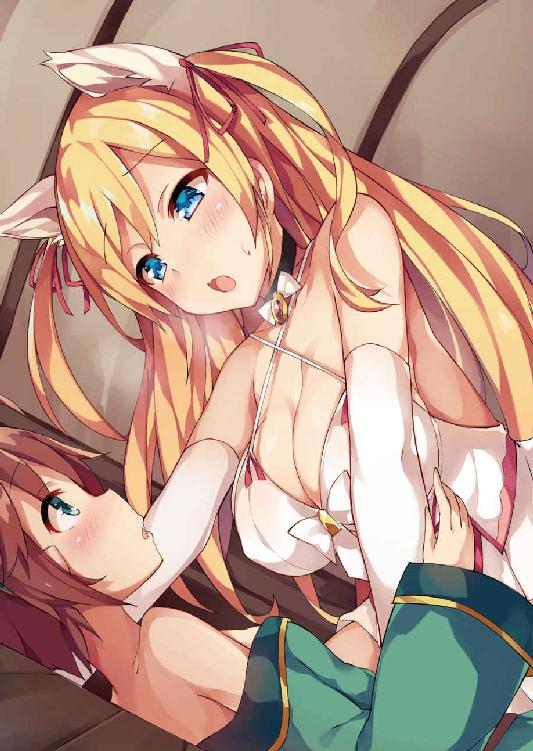
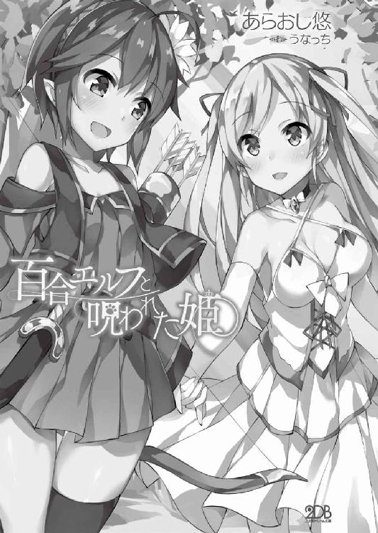
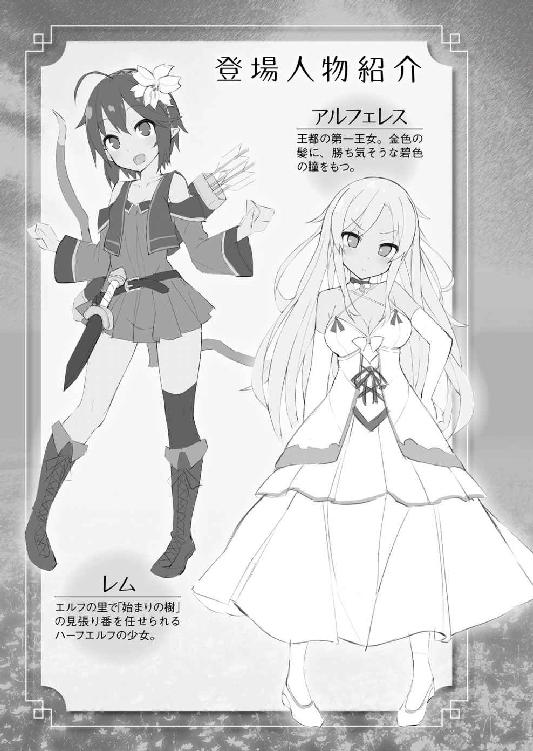
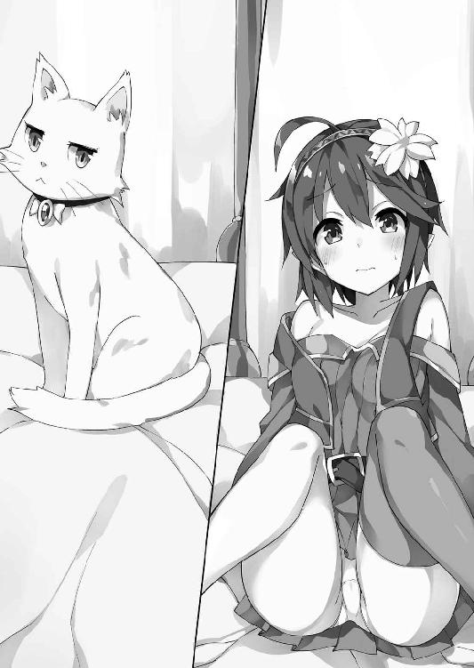
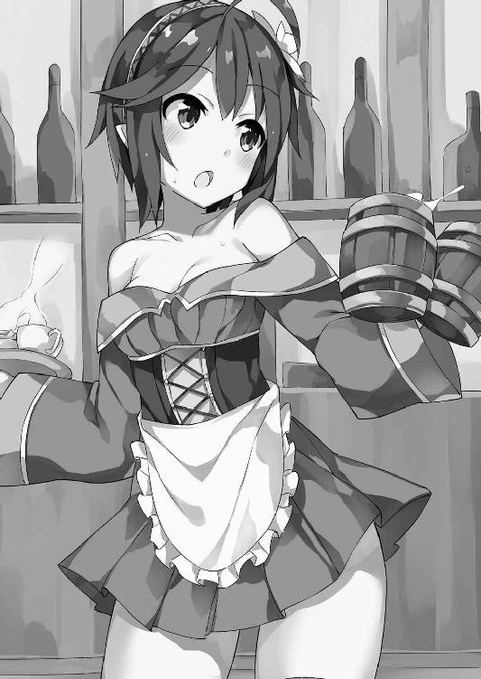
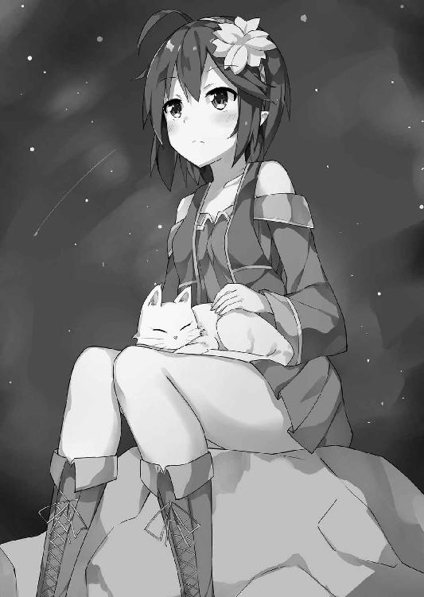
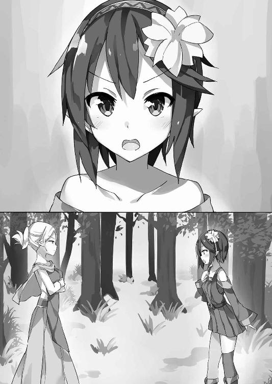
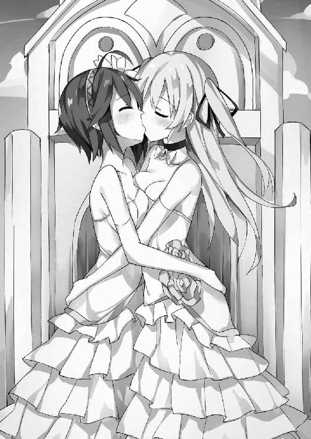

| 百合エルフと呪われた姫 (二次元ドリーム文庫) | |
| あらおし悠 | |
| 株式会社キルタイムコミュニケーション (2018) | |


※本作品の全部あるいは一部を無断で複製・転載・配信・送信したり、ホームページ上に転載することを禁止します。本作品の内容を無断で改変、改ざん等行うことも禁止します。また、有償・無償にかかわらず本作品を第三者に譲渡することはできません。
※本作品は電子書籍配信用に再編集しております。

今日も、森の緑が濃い。
レムは、天を衝くほどの巨木に寄りかかり、だらしなく脚を放り出していた。太い根元は根っこがいびつに曲がりくねり、細い身体が隙間にすっぽり嵌まる。狭いけど、そこが里で唯一のお気に入り。時々そよぐ風が、肩で切り揃えた栗色の髪と、そして、気まぐれにヘアバンドに挿してみた白い花をそよがせる。
「退屈ぅ......」
小さく呟き、わずかに吊り上がった深緑色の瞳で夕暮れの空を見上げる。もっとも、レムの住むエルフの里は、巨大な樹木の立ち並ぶ深い森。上空を枝葉が屋根のように覆って、空の色は、その隙間からところどころ覗くのみ。なのに、暗さは少しも感じない。幾筋も降り注ぐ木漏れ日は、穏やかで心地いい。
「ふあ......ふぁ～あ......」
そんな眠気を誘う環境にひとりでいたら、どうしたって大きな欠伸が出る。しかし、これでも大事なお役目の最中。居眠りなんてしていたら、里の者たちにどんな罵詈雑言を浴びせられるか分かったものじゃない。レムは腰の短剣を握り締めると、跳ねるように立ち上がり、自分がもたれていた巨木を振り返った。
身軽なエルフでさえ登りきるのが困難な巨木ばかりのこの森で、比類なき高さと枝の広がりを誇る最古の老木。長老たちが「始まりの樹」と呼ぶこれを見守るのが、レムの仕事だった。エルフが住みつく以前の遥か太古、ここから森が広がっていったという。樹皮は年相応に乾いてひび割れ、幹も、まるで書物で見た人間の老人のように腰を捩らせ、背後にそびえ立つ崖に寄りかかっている。
「こんな爺さんを守る事に、どんな意味があるっていうのさ」
森と共に生きるエルフにとって、最も古い樹が崇敬の対象である事くらいは理解している。一か月後に控えた二十年に一度の祭祀が執り行われるのも、この樹の前の広場だ。前回はレムが生まれる前なので、どんな感じなのかは詳しくは知らないけれど。それはともかく、物言わぬ年寄りが朽ちてゆくのに、どうして里で一番若い娘が付き合わされなくてはならないのか。
なんとなく嘆かわしくなったレムは、改めて自分の格好を眺めてみた。
裾の広がった深緑のワンピースに、短いベスト。短いスカート部分と編み上げブーツの間に伸びる脚は、細いけれど健康そのもの。いつ何時でも戦えるように動きやすい格好を心がけ、弓や剣の鍛錬だって怠らない。肩を出し、ささやかに若い色気を主張してはいるけれど、どちらかといえば全体的にシンプル。それもこれも、老木を守れというお達しのため。
しかし、その準備が役立つ日が来るとは到底思えなかった。
「こんなの女の子の仕事じゃないよ。どうせ、わたしも一緒に枯れさせるつもりなんだ」
その想像は、きっと間違っていない。なぜなら、レムは異端児だから。
里の者から向けられる視線はいつも厳しい。それでも、ここで生きていかなくてはならないと思っていたから、こんな死にそうなほど退屈な仕事にも、今まで文句ひとつ漏らした事はなかった。けれど、それも、そろそろ限界にきていた。里を司る最長老からお役目を仰せつかって、もう十年。ただ古木を眺めるだけの毎日に、飽きないはずがない。
「ええい、もうっ！」
苦々しい思いをぶつけるように「始まりの樹」に飛びつくと、一気に一番下の枝まで駆け上がった。他のエルフなら、もう少し上まで登れるんだろう。レムの跳躍力では、ここまでが精一杯。ここから望める景色は好きだった。そして嫌いだった。
頂上が窪んだ山に、この森はある。円形に囲む高い壁と、外側に果てしなく広がる緑の雲海。さらにその向こうには、エルフ以外の種族が住む世界があるという。
「どんなところなんだろう......」
この景色を見るたび、心が外に引っ張られる感覚を抱く。そして時折、自分の居場所はここではないと、そんな焦燥感にも襲われた。まるで誰かに呼ばれているような気がして、ふと、空に吸い込まれていきそうな気分にさえなってくる。
「おいハーフエルフ」
しかし、無粋な声がレムを現実に引き戻した。見下ろすと、一人の男性エルフが、木の根元で顔を歪めている。
「大事な樹に登るなと何度も言っているだろうハーフエルフ。早く降りろ。交代だ」
なにが「交代」だと、心の中で毒づいた。ただでさえ、レムは彼の事が苦手だった。エルフにしては珍しく大柄で長髪、無精髭まで生やしている。その清潔感に欠ける見た目もさることながら、なによりも、彼の責任感の欠如が気に入らなかった。
見張り番は、本来は二人ひと組。なのにこの男は、レムと一緒なのを嫌がって、自分の番を勝手に夜間に変えてしまった。レムが子供だから夜を引き受けてやっているんだというのが、彼の言い分。でも知っている。本来の夜番の連中と別の場所で酒盛りして、ここでの見張りなんて一切していない事を。
レムだって一日中気まずい思いをするなら、退屈の方を選ぶ。だから彼が何をしようと関心はない。ただ、ひとつだけ聞き捨てならない事があった。
「ハーフエルフって言わないで」
レムが渋々木から降りながら文句を言うと、彼は腰に手を当て蔑むような目をした。
「事実だろう。お前の耳ときたら、俺たちの半分しかない」
男が、小馬鹿にしたように自分の耳朶と指を並べてみせる。そのふたつの長さは、ほぼ同じ。それに比べてレムの耳は明らかに小さい。後は、他の女性より多少乳房が大きいくらい。人間の血が入っているせいなのは間違いないだろう。だからといって、その程度の身体の違いがなんだというのか。憤りが抑えきれず、無意識に男を睨みつける。
「なんだ、その眼は。......まったく、長老様たちも何を考えているんだろうな。こんな大事なお役目を、こんな奴にやらせるなんて」
（だったら酒盛りなんかしてないで、真面目に仕事しろ）
喉まで出かかった、そんな皮肉を飲み込んで、その代わりに気になった事を尋ねる。
「ねえ。その「こんな奴」っていうのは、わたしが子供って事？ それともハーフエルフだって意味？」
「決まっているだろう。両方だ」
間髪入れない回答に、レムは鼻を鳴らして踵を返した。一刻も早く彼と離れたくて、足元の草を踏み荒らしながら家路を急ぐ。
子供なのは仕方がない。なにしろレムは、まだ十六歳。不老長寿のエルフの中では、赤ん坊も同然の扱い。
「でも、ハーフエルフなのは、わたしのせいじゃない」
レムは、人間とエルフの間に生まれたハーフだった。
それも常の生まれ方ではない。驚いた事に、ふた親とも女性だという。
我が身の事ながら信じられないけれど、同族から漏れ聞いた話では、エルフの秘術を使えば可能らしい。ただそれは、秘中の秘。封印されていた禁忌の術。
禁を犯した母親は、生まれたばかりのレムを連れて、一度は里から逃げたらしい。しかし結局は連れ戻され、半幽閉状態の小屋で監視され続けた。まだ物心つく前だったので、その辺りの詳しい経緯は知らない。ただ、家の外には常に見張りがいたのと、いつも優しい母親が、時々、寂しそうな顔をしていたのは、はっきりと覚えている。
その母親も、数年前に帰らぬ人となった。すぐ伯母に引き取られ、「始まりの樹」の番を与えられたのも同じ頃。母親の罪を贖う意味が込められているのは間違いない。
「馬鹿馬鹿しい。何が悪いのか分かんない」
人間と子供を成す事が、そんなに罪なのだろうか。
母は、確かに寂しそうだった。でも不幸ではなかった。だって「もう一人の母親」の話をしてくれる時、彼女はとても幸せそうだった。だからレムも、自分がハーフエルフである事を恥じた事なんて一度もない。
伯母の家に帰る途中で、地面の草叢を踏みながら樹木を見上げる。そこにあるのは日常の風景。高い木々の枝に蔦で編んだ橋が架けられ、畑仕事や狩りから帰った者たちが行き交っている。彼らは忙しく働いているつもりなんだろう。けれどレムの目には、異様なまでに呑気に見えていた。
深い森と高い壁に守られた長寿の種族。異種族との交わりを怖れ、外界を知ろうともせず、永遠にも近い時を安穏と過ごすなんて、レムには耐えられない。
そんな事を考えるのは、お前が子供だからだと、年長者に言われた事がある。異端な考え方は、人間の血が混じっているせいだとも言われた。
「じゃあ自分たちは、どれだけ世界を知っているっていうのよ。そんなにハーフエルフが目障りなら、追い出してしまえばいいのに」
純潔を尊ぶ彼らにとって、混血のレムは恥。表に出せない存在、らしい。
「冗談じゃない。わたし、絶対にここを出てやる！」
この先、百年も千年も、虐げられて過ごせるものか。そうじゃなくても、老木を見張るだけの毎日はもう飽き飽き。
そして、脱出の好機は、すぐそこに来ていた。
ふと足を止め、振り返る。陽が落ちかけた薄闇の中、始まりの樹が、まるで種族を縛りつける象徴のように、巨大な影となって里を覆う。レムは、その呪縛に挑むように鋭い視線をぶつけると、家に向かって走り出した。
「ただいま、アミタ伯母さん」
「遅かったわね。悪いけど、夕食の用意をしてちょうだい」
家に戻ると、伯母のアミタが裁縫をしていた。
例の二十年祭を前に結婚が決まった娘がいて、針仕事が得意な伯母が、その花嫁衣装の製作を依頼されたとの事。アサギリ蜘蛛の極細糸を集めて編んだ、光沢のある純白の衣装は、この里の結婚式には欠かせない。
アミタは、レムの方を見ずに作業を続けた。衣装の仕上げを急いでいるせいばかりじゃない。普段から、二人の間に会話は少なかった。妹の忘れ形見とはいえ、禁忌の子を引き取るのは、相当な苦悩があったに違いない。
レムの十倍も生きているとはいえ、彼女も里の中では若い方。栗色の艶やかな髪と、切れ長の目が印象的な美しい女性。なのに、今に至るまで浮いた話もなく、いつも面白くなさそうな顔をしているのは、間違いなく不義理を働いた妹と、その子供が重荷になっているせい。レムは、自分も母も悪いとは思っていない。それでも、厄介者である自分を引き取らせてしまった事は、申し訳なく思う。
（それも、もうすぐ終わるよ）
レムが里を出ていけば、嫌な子の顔を見ずに済む。彼女も少しは気が楽になるはず。
「ねえ伯母さん。わたしの母さんは、人間と結婚したんだよね」
「......どうしたの、急に」
アミタは針の手を止め、不快そうな顔を上げた。この話題を蒸し返されるのを彼女は好まない。だからこそ、あえてレムは、折りに触れて尋ねるようにしていた。単純に知りたいのと、こうして嫌われていれば、自分が消えた時、心が痛む事もないだろうから。
「エルフって、人間と仲が悪いのよね？ でも母さんみたいに愛し合う事だってできるんでしょう？ わたしも人間を見てみたい」
「駄目よ！」
アミタに強い口調で叱責され、レムは思わず肩を竦めた。嫌われるためとはいえ、やはり怒られるのは気分のいいものじゃない。
「でも......」
「でもじゃないわ！ 人間の方も、エルフを嫌っているの。会えばきっと殺されるか、よくて奴隷にされてしまう。好奇心で身を滅ぼすのは、妹だけでたくさんよ......！」
吐き捨てるように自分の妹を罵る伯母に、レムはどうしても反発を覚えた。
「......母さんが人間と結ばれたのは、好奇心だったの？ 母さんは身を滅ぼしたの？」
「何度言えば分かるの。もうこの話はしないで」
質問には答えず、アミタは会話を打ち切った。世話になっている伯母の機嫌を損ねるのは、レムだって本意じゃない。でもこれで、目的は達せられそうだ。
そして、二十年祭を五日後に控えた夜、計画は実行に移された。
祭りの準備が本格化している中、前祝いのような結婚式に、里全体が沸いていた。そんなめでたい席に、レムは呼ばれていない。爪弾き者の参列が喜ばれるはずもない。だからこその好機。里のほぼ全員が集まっている今なら、誰にも見られず出奔できる。
レムは伯母に手紙を残し、外界と繋がっている数少ない壁の割れ目を目指して走った。腰には短剣、背中には弓矢を携え、フード付きのローブに身を包み、宵闇に落ちる里を風のように走る。
一歩ごとに、祝いに沸く声が小さくなる。寂しさはない。むしろ解放感で身体が軽くなる。速度を上げ、でも途中、危険を承知で寄り道をした。他の墓地とは離れた背の低い雑木林の中に、隠れるように佇む簡素な石の墓標。そこで眠る母に、別れを告げるために。
「母さん、さようなら。でも......でも、もし帰ってこられる事があったなら、きっと、もう一人の......人間の母さんを連れてくるよ」
きっと、向こうも会いたがっているに違いないから。それを大義名分に、家出を正当化して、後ろ髪を引かれる思いを振りきり、レムは、エルフの森から走り去った。
しかし、未知の世界への旅立ちは容易なものではなかった。
まず、森を抜けるまでに、少なくとも五日以上かかった。途中で雨に降られて太陽の方向を見失い、自分がどこを進んでいるのか分からなくなったのが最大の原因。その間に用意していた食料が底を突き、木の実を探してさまよったせいもある。
連日、夜は野獣を警戒して樹上で休み、昼は食料探し。前進している実感はないし、体力もなくなってくる。誰にも助けを求められない心細さは、どうしても否めない。それでも引き返そうとは思わなかった。それより、挫けて里に戻ったら、もっと馬鹿にされるという思いの方が強かった。
そうしているうちに、周囲の風景が変化していた。エルフの里を囲んでいた巨木に比べて、木々が相当に低く、細くなっている。それに気がついた時、森は唐突に終わりを告げた。その先の景色に、レムは唖然となった。
木が、ない。その代わりに広がるのは、どこまでも続く田園風景。地平線というものを聞いた事はあったけど、実際に目にして、その解放感をどう表現すればいいのか、混乱さえしたほど。ただ、感動に浸れる時間は短かった。野獣に警戒する日が続いたので、むしろ身を隠せる場所がない不安の方が大きい。今度は逆に、夜を待って移動する事にした。
しかし、やがてその風景にも慣れ、昼にも歩けるようになった。
初めて見た人間は、果樹園らしきところで働く農民。一見するとエルフと大差ないようだったけど、まず目に付くのが耳の形。耳朶に長さがほとんどなく、短いというより丸い。書物で知ってはいたけれど、ここまで違うとは思わなかった。
そして、意外と体格が違っていた。骨太で筋肉が多く、彼らと比べたら自分たちの身体はいかにも華奢。簡単にポッキリ折られてしまいそうに頼りない。半分は人間とはいえ、レムは、自分が相当にエルフ寄りである事を思い知った。
──人間に見つかったら殺される。
伯母の言葉が耳に甦り、その夜は一睡もできず、木の洞で小さくなって震えた。
それでも、不思議と後悔はなかった。
「そうだよ。まだ人間の姿を見ただけ。言葉すら交わしてないのに、怖がるのは早すぎるってもんでしょう」
翌朝には早くも立ち直り、徐々に慣れてゆく作戦に出た。まずは身を隠しながら人間の様子を観察。まだエルフの里にほど近いせいか、言葉がかなり理解できる。意思の疎通ができると分かっただけで、恐怖心は大幅に低減された。
最初は農家から食べ物を無断で拝借し、やがて食料を提供してくれる場所があると知った。長いローブを身に纏っているので体格はごまかせるし、フードを目深に被れば耳も隠せる。うまくパンとスープにありつけたまではよかったけれど、問題はその後。レムは、人間のお金を持っていなかった。食い逃げという不名誉な罵声を浴びせられながら、命からがら逃げおおせ、腹を空かせた状態でフラフラとさまよう事、三日。
「うわぁ......」
街道沿いの森を抜けた向こうに見えたのは、巨大な城壁。その向こうの丘の上には、とんがり帽子を並べたような、青い屋根に白い壁の大きな城がそびえ立っていた。エルフの王都にも立派な城があると伝え聞くけれど、レムの里は田舎で、自然の森を利用した質素な造りの家しかなく、こんなに大きな建造物は初めて見た。
「ま、まぁ......始まりの樹よりは小さいけどね」
圧倒されつつ強がってみる。それに、城門はそれほど高くない。この数日の旅で分かったけれど、人間はエルフより遥かに鈍重。力はともかく身軽さは比べ物にならない。この門だって、人には越えられない設計なのだろう。
「ふふーん。でも、わたしなら余裕だもんねー」
入口で、兵士が通行人を確認している。もちろん、そんなところを素直に通るつもりはない。レムは人気のない場所を探し、石組みのわずかなでっぱりに足をかけると、掛け声も軽く、高々と跳び上がった。
「よっと！」
それを数回繰り返し、あっという間に門の上まで辿り着く。内側を覗くと、背の高い茂みが並んでいる。これ幸いと、今度は一息に飛び降りて、難なく侵入に成功した。
改めてフードを被り直す。幸い、ここまでエルフと知られた事はない。耳さえ隠していれば普通に行動できると、レムは経験から学んでいた。
「この調子なら、もっと大胆に動いちゃっても大丈夫かも」
ふふふっと、思わず含み笑い。逸る気持ちを抑えきれず、早歩きで街に向かう。
「おおお......」
大通りに出たレムは、感嘆の声を上げた。そこは、エルフの里とも、これまで見た人間の村とも、まるで様相が違っていた。どこまでも連なる三階建ての石造りの家と、赤やオレンジといった色鮮やかな屋根。広い通りが緩やかな上り坂になっており、突き当たりで、あのとんがり帽子のお城が街を見下ろす。
それに人の多さが段違い。裏の路地に至るまで、どちらを向いても無人の場所がない。ざわざわと声が絶えないのも初めての経験。敏感なエルフの耳には騒がしすぎて、薄れかけていた恐怖心が再発しそうだ。
「すごーい......。これが城下町っていうやつなの？」
人工物ばかりで自然の少なさが気になるところではあるけれど、なにもかもが新鮮で、驚きに満ちている。キョロキョロと辺り構わず見渡しながら歩いていたら、急に大きな声で呼び止められた。
「姉ちゃん！ これ食っていきな！」
びっくりして跳ねるように半歩飛びのく。あうあうと口元を震わせながら振り返ると、そこは無数の果実が並んだ屋台。店主らしい髭面の大男が、真っ赤な果実を差し出していた。空きっ腹のレムは、ごくりと唾を飲み込んで、思わずそれを受け取りそうになり、でも重要な事を思い出す。
「ごめんなさい......。わたし、田舎から出てきたばかりで、お金が......」
「あはは、やっぱりな！ いかにもそんな感じの歩き方だったぜ。まあ驚かせちまったお詫びだ。こいつのお代はいらねえよ！」
「え......いいの!?」
信じられない思いで果実と果物屋を見比べる。彼が豪快な笑みで頷いたので、遠慮なくいただく事にした。
（なんだ、親切な人間もいるんじゃない）
強面だけど、ただで食べ物をくれるのだから、いい人に決まっている。
（エルフと人間が仲悪いっていうのも、案外、間違いなんじゃないの？）
伯母もみんなも、里に篭りきりだから、噂に惑わされて真実が見えなくなっているに違いない。楽しさと嬉しさで、レムは、そんな風に考え始めていた。
しかし今は、そんな事より、果物の美味しそうな色が食欲をそそった。それに、こうして会話が成立するほど言葉が通じるようになった安心感も、空腹感を加速させる。
「いっただきまーっす」
赤い皮ごと齧ると、甘い果汁が口いっぱいに広がった。あまりの美味しさに我を忘れ、大きな口でかぶりつきそうになった時、背後が少し騒がしくなった。大通りを埋め尽くしていた人が、道を譲るように左右に分かれてゆく。
「おっ。お姫様のご帰還か」
「お姫様？」
果実屋の視線の方をレムも見ると、石畳を踏む硬い音がする。そして人垣の向こうから、四頭立ての真っ白な馬車が現れた。
「綺麗な馬車......。あれがお姫様？ 旅行にでも行ってたの？」
レムが問いかけると、なぜか、果物屋は苦笑いを浮かべた。
「まあ......似たようなもんだ。嫁に行ってたんだがな、離縁されたんだよ。要するに出戻りだ。しっかし、これで三回目かぁ。一週間も持たなかったとは、記録更新だな」
「人間って、そんなに何度も結婚するものなの？」
「まさか！ 普通は一回に決まってるだろう。あのお姫様、なぜかは知らないけど嫁に行っては追い返されて......ん、人間？」
果物屋が怪訝そうな顔をした。迂闊な事を口走ったと、焦ったレムの手から果実が滑り落ちる。それを受け止めようとした拍子に、フードがはらりとめくれてしまう。
「こいつ、エルフだーっ！」
レムの耳を見て店主が叫んだ。雑踏の中でもその大音声は響き渡り、周囲の人間が一斉に顔を向ける。
「あ、あの......わたし......」
「この泥棒エルフ！ 代金払え!!」
「ええっ!? くれるって言ったじゃない！」
エルフと分かった途端の手のひら返しというか豹変というか。店主の態度の急変に、レムは激しくうろたえた。周辺を見渡せば、他の人間の顔も怖い。まるで仇敵を見るような目に囲まれ、動揺が大きくなる。
「あの......あの、ごめんなさーいっ！」
追い詰められ、ついつい謝ってしまいながら、レムは思いきり地面を蹴った。民家の屋根まで一気に飛び上がり、逃亡を図る。下では「エルフが出た」と、老若男女を問わずの大騒ぎ。武器代わりに農具を持ち出し威嚇する者も多数。
「やめてっ！ わたし、なんにも悪い事なんてしてないでしょー！」
ローブで身体を守りながら、屋根から屋根を走り抜ける。そうしたら、今度は石や物を投げられ始めたので方向転換。しかし、エルフに押し寄せた群衆は、過度に密集したせいで、その速度と急旋回についていけない。わあわあと押し合いへし合いするばかりで攻撃の手が緩む。その隙に、反対側の屋根をめがけ、大通りを飛び越える。
その時、眼下の馬車から、一人の少女が大きく身を乗り出した。輝くような金色の巻き髪が風になびく。人間の年齢はよく分からないけど、多分、レムと同じくらい。
彼女が、お姫様なのだろう。頭の上の小さなティアラや、首に巻かれた黒いチョーカーでも赤い宝石が輝くけれど、そんな飾り物よりも、まるで彼女自身が光っているように、レムの目に眩しく映る。その存在そのものが、高貴な生まれである事を証明しているかのようで、逃亡中であるのを忘れて見惚れてしまう。
こんなに美しい姫が、どうして離縁なんてされるのだろう。傷心のご帰還を騒がせてしまった事に、心の中で詫びる。
ふと、目が合った。レムよりも勝ち気そうに吊り上がり、そのくせよく似た碧色の瞳と、まるで時間が止まったように、ゆっくりと見つめあう。
（この娘......笑ってる？）
その表情に戸惑った。興味津々に輝く目と、わずかに上がった薄桃色の唇は、童女のように無邪気で、ほのかに染まった頬からも、傷心なんて微塵も感じない。
もちろん、実際には一瞬の出来事。空中で静止できるわけもなく、馬車の上を通り過ぎる。だから見間違いだったかもしれない。けれど、城壁を越え、森に逃げ込んでもまだ、彼女の好奇心に満ちた表情は、レムの脳裏に焼きついて離れようとしなかった。
「ひどい目に遭ったぁ......」
それから丸一日。レムはまだ、城下町近くの森をさまよっていた。本当は夜のうちに遠くへ移動するつもりだったのに、うっかり眠り込んでしまった。疲労が緊張を上回っていたらしい。追われる身なのに、自分の呑気さに呆れ果てる。
街の人たちが追ってくる様子はない。エルフの小娘一人に躍起になるほど暇ではないんだろう。とはいえ、もう街には戻れない。あそこまでエルフが憎悪されているとは思わなかった。初めての大きな街の雰囲気に飲まれ、浮かれて油断して、正体がばれても大丈夫だと思い込んでいた。
「怖かった......。人間って、本当にエルフを憎んでたんだ......」
直接ぶつけられた、異種族の憎悪。初めて恐怖を実感するに至って、やっと家出に多少の後悔が生まれる。
「い......いや、まだまだ。きっとわたしにも安住の地はあるはずよ」
自らの意思の固さを確かめるように、力を入れて拳を握る。しかし、そんなものを探す前にする事があるだろうと、さっきからお腹が鳴り通し。せっかくもらった果物も、逃走時に落としてしまった。
「まだ半分も食べてなかったのになぁ......」
森なら木の実くらいはあるだろうと思ったけど、残念ながら、食用に適した種類が見当たらない。普段は食べない肉だけど、この際、主義に反してでも──とも思ったのに、その決意が殺気を撒き散らしたのか、小動物すら寄りつかない。
「......あいた！」
しかも、石に躓いて転ぶ始末。妙に硬い地面におでこをぶつける。身軽さが身上のエルフにあるまじき醜態。
「どーせ、わたしは半端者のハーフエルフですよー」
拗ねてみたところで、誰も慰めてはくれない。蔑む者さえいない。里では孤独だと思っていたけど、今は本当に、誰一人として側にいなかった。家出なんてしたばかりに、こんな惨めさを味わう事に。
「............なによ、わたしが我侭だったとでも言いたいわけ？」
里にいても孤独、出ても孤独。ならばそれを脱する可能性のある方に懸けたかっただけなのに。無人の森で、誰にともなく当たり散らす。
最愛の母は他界した。伯母の視線にも親愛の情は感じない。あれは監視だ。レムが母親と同じ過ちをしないように見張る目だった。もっとも、結局は里から脱走してしまったわけだし、彼女の懸念もあながち間違いではなかったわけだけど。
それはともかく。あんな狭い里で同族からは侮辱され、肉親にも信用されない。そこから抜け出したいと思う事を、我侭だなんて誰にも言われたくない。
「どこかに一人くらい、わたしの味方はいないのー？」
ごろんと仰向けになり、力なく叫んで目を閉じる。
そこに、一人の少女の顔が浮かんだ。自分を興味津々に見ていた出戻りのお姫様。あんなに真っ直ぐな瞳で見つめられたのは初めて。おかげで、一瞬しか見えなかったはずの彼女の顔が、はっきり瞼に焼きついていた。
「なんでだろう......。あの娘の目、すっごく気になる......」
視線がすれ違っただけなのに、その瞳の光は、レムの心に強烈な印象を刻み込んでいた。目を閉じると、まるで、彼女が手を差し伸べてくれるような気がしてくる。
「............ふん。わたし、何を考えてるんだろ」
孤独すぎて幻想まで見るようになってしまったか。しかし、所詮は彼女も人間。エルフを嫌っているに決まっている。あの笑みだって、単にエルフを珍しがっていただけに違いない。だいたい、お姫様なんて完全に別世界の人。二度と会う事もない相手に、なにを期待できるというのだろう。
「もういいや......。考えるの面倒くさい......」
疲労と空腹で頭が空転していた。このまま寝てしまいたい気分だけど、さすがにこんな場所では危険すぎる。
「............おや？」
変な事に気がついた。妙に硬い地面だと思っていたら、土や草じゃない。石を敷き詰めた道が、寝ているレムの前後に伸びている。
今まで見てきた街道とは少し違う。掌ほどの色違いの石が模様を描く、綺麗で立派な造り。昨日今日完成したというほど新しくもない。なのに、ほとんど使われた形跡がないのだ。よく見れば、轍と馬の蹄の跡がうっすらと。おそらく、ここ数日のうちに馬車が一度往復しているだけ。その程度の使用頻度のものに、こんな手間はかけないはず。
「こっちはお城の方だよね。てことは、反対側に何かあるとか......」
興味を引かれたレムは、探険してみる事にした。もしかしたら今夜の宿が見つかるかもしれないし、食料だって手に入るかもしれない。城下町から離れるのも好都合。
決断したら行動あるのみ。空腹に耐え、早歩きで進む。そして陽が傾きかけた頃、その道の終着点が見えた。森が終わったわけじゃないのに、いきなり視界が開け、巨大な建物が目の前に現れる。
「......またお城!?」
急だったので驚いたけど、屋敷や館と表現するくらいが適当な規模。とはいえ三階建てだし、首を左右に振らなくては建物を端から端まで見る事ができない。
「わざわざ森の真ん中を切り開いて、こんな大きな石の建物を？」
エルフの里は木や蔦でできているし、王都も岩石山を掘り込んだものらしい。それなのに人間は、お城も屋敷も、平民の街に至るまで、切り出した石を運んで組み上げている。
「もっと楽に造ればいいのに、わざわざこんな苦労して。もしかして、人間って、すっごく頭が悪いとか？」
ともかく、この建物専用の道があるくらいなのだから、さぞかし高貴な家に違いない。寝床と食料への期待が一気に高まる。
しかし、それは儚く終わりそうだった。
白い壁やバルコニーの手すりには、凝った彫刻が施されているのに、それらは薄汚れ、蔦が巻きついている。庭の噴水なんて、落ち葉が溜まって詰まっていた。この荒れ方を見ると、誰も住んでいないのかもしれない。それはそれで、寝床とするには好都合。
「でも、いま一番欲しいのは食べ物なのにぃ......」
期待した分、失望も大きい。
「いや......待てよ？」
森の道には、うっすらではあるけれど馬車の跡があった。だとするならば、こんな状態でも人間がいる可能性はまだある。食料を得るならお邪魔しなくてはならないけれど......。欲求と危険性を天秤にかけた結果。
「要は、見つからなければいいのよ」
割と早く結論が出た。となれば、正面玄関は回避して、屋敷の裏手に回る。こちらも雑草が伸び放題。足元に気を取られながらも、侵入できそうな窓を探して回る。
「......なんか、本当に泥棒になった気分だわ」
食い逃げ、泥棒、無断侵入。次々と逃亡者らしい罪状にこの身を飾り立てられ、溜め息を漏らした。エルフの里にも不届き者はいたけれど、自分がその同類になるなんて。
「違う違う！ わたしは一晩の宿を借りるだけ！」
誰にともなく言い訳していたら、小窓の鍵が開いているのを見つけた。思わず小躍りしたくなるのを抑えて侵入。薄衣のような軽やかさで音もなく室内へと舞い降りる。
──ばこん。
しかし、着地した途端、変な音と共に床が抜けた。一瞬の浮遊感の後、何が起きたのか理解できないまま縦穴に吸い込まれる。
「きゃあぁぁぁぁ!!」
なまじ受け身を取ろうとしたのが失敗だった。身体を捻りきらないうちに、無様な格好でお尻から底に落ちる。
「あいたたた......」
痛むところをさすりながら姿勢を直す。しかし落とし穴は思いの外狭く、片手は肘が伸びきらないほど。四苦八苦し、壁に引っ掛かる背中の弓矢に邪魔をされ、やっとの思いで立ち上がる。見上げると、真上には真四角の穴。深さなんて、レムの背丈の三倍はある。
「なによ、これっ！」
思わず大声を上げた口を、両手で塞ぐ。ここが人間の屋敷だとしたら、罠にかかったエルフがどんな目に遭わされるか分かったものじゃない。
それに気づくのが、ちょっとばかり遅すぎた。声を聞きつけたのか、扉を軋ませ、誰かが部屋に入ってきた。足音が近づいてくる。燭台の明かりが穴を照らす。レムは、逃げ場はないと知りながら、息を殺し、隅で必死に身体を縮める。
「あら珍しい。女の子の泥棒さん？」
しかし、ひょいと穴を覗き込んできた人物に、驚いて目を丸くした。手にした蝋燭の灯りに照らされた姿は、女性──というよりも、まだ少女。金色の巻き髪が優雅に揺れる。その見覚えのある顔に、レムの声が裏返る。
「出戻りお姫様!?」
「いきなり失礼な娘ね。その通りですけど」
間違いない。すれ違いの一瞬でも記憶に残る、碧く綺麗な瞳と薄桃色の唇。ティアラこそ載せていないけど、赤い宝石のチョーカーは着けたまま。もう会う事はないだろうと思っていた少女と、こんなに早く再会するなんて。
ただ、なんだか昨日と印象が違う。笑みを湛えていた唇は半開きで下がり、好奇心に満ちていた瞳も輝きを失い、眠たげな重みに瞼が半分落ちている。
ひとつだけ共通しているのは、上気したように染まる頬。
「ここって、もしかして、お姫様のお屋敷？」
その変化を怪訝に思いながらも、レムは、一応確認してみた。
「そうよ、私の別邸。知らずに入ったの？ お間抜けな泥棒さんですこと」
「わたしは泥棒じゃない！」
「はいはい。悪党って、みんなそう言うのでしょう？ 知ってますわ」
猛然と抗議するも、彼女は馬鹿にしたように手をひらひらと揺らすだけ。盗賊と決めつけ聞く耳を持たないお姫様に、レムは穴の底で「ぐぬぬ」と歯軋りした。
「この屋敷には、盗賊避けの罠がいくつもあるのよ。中でも一番初歩的なものに引っ掛かるなんて、相当なお間抜けさんね」
また間抜けと言った。ついさっき人間は頭が悪いと侮ったばかりなのに、その人間に侮辱され、抑えきれない憤りで両の拳をぶんぶん振り回す。
「だから違うってば！ 話を聞きなさいよ！ こんなに可愛いエルフが悪党に見えるっていうの!?」
「エルフ？」
聞き返されて、口を滑らせた事に気がついた。しまったと口を塞いだところで、もう遅い。彼女は燭台を穴の中に突き入れて、確かめるようにレムの顔を照らした。
「あら本当。あなた、昨日、私の馬車の上を飛び越えた無礼者ではなくて？ 店の物を盗んで逃げたという......。やっぱり泥棒じゃない」
エルフとお姫様。特徴的な相手だったのだから、互いに覚えていて不思議はない。しかし、泥棒扱いされた上、異種族である事も知られてしまった。どんな仕打ちをされるのかと、恐怖のあまり息を飲む。
でもそれを表情に出さないよう、必死の形相で睨みつけ、胸を張って名乗りを上げた。
「わたしはレム！ 誇り高いエルフの血に懸け、あなたに害意がない事を保証するわ！」
本当は、自分がエルフである事に誇りを持った事なんてない。だけど、こんなところで盗賊なんかにされたら天国の母が悲しむ。しかし、そんな想いなど知る由もない姫は、困ったように溜め息を吐いた。
「やれやれ仕方のないこと。泥棒といえども、名乗られてしまったら返さないわけにはいきませんわね。......わたくしは、アルフェレス・ウィルテラ。この国の第一王女です」
「ある、ふぇ......うぃ？」
急に長い名前を名乗られても覚えられない。舌が回らず四苦八苦するレムに、彼女はますます大きな息を吐いた。
「別に覚えなくても結構ですわ。あなたが何者であろうとも、どんな誇りを持っていようと、王女の寝所に忍び込んだ事実に変わりはない。違って？」
違わない。アルフェレスに反論できず、レムの虚勢は瞬く間に萎み、拗ねたように唇を尖らせた。
「それに私、今とても機嫌が悪いの。いつまでも、あなたの相手をするつもりはありません。まったく......大事なところだったのに、とんだ邪魔が入ったものだわ」
「大事なところって......何をしてたの？」
レムは、普通に疑問を抱いただけ。だから普通に尋ねただけなのに、アルフェレスは、異常なまでに大袈裟な反応を示した。上気気味だった顔が一気に真っ赤に染め上げられ、口元がわななく。どんよりしていた瞳は大きく見開かれ、左右にせわしなく泳ぎまくる。
「な......な......なんでもありません!!」
「なんでもないって......そんな風には見えないよ？」
軽く首を傾げたら、それすら鋭い追及であるかのように、彼女はついに逆上し出した。
「うるさいうるさい！ どどど、泥棒エルフのくせに生意気よ！ 明後日には兵士に引き渡してあげますから、それまでここで大人しくしている事ね！」
「ちょっと、ちょっと......ちょっとぉ!!」
慌てて呼び止めたけど、アルフェレスはちらりと一瞥しただけ。真っ赤に染まった顔を隠すように燭台を引っ込めると、レムの視界からも消えてしまった。ドアを乱暴に閉める音がする。部屋も出ていったようだ。
「ちょっとぉ～、出してよぉ～！」
いくら叫んでも泣いたふりをしてみても、戻ってくる気配はない。宿を求めただけなのに、どうしてこんな事になったんだろう。確かに、ここでも雨露はしのげるだろう。だけど、腰も下ろせない狭い空間でずっと立っているのは、さすがに辛い。
「さて、どうしたものかなぁ。高さ的には飛び上がれない事もないんだけど......」
穴の幅が狭くて、助走も勢いもつけられない。壁も、板張りながら綺麗に磨き上げられていて、よく滑る。レムは少し考え、弓に矢をつがえた。肘が支えて満足に弦を引けないけれど、遠くに飛ばすわけではないので、これで十分。放たれた矢は風を切り、落とし穴の半ば辺りの壁に刺さった。同様に何本か、束になる感じで刺したところで、別の矢を逆手に持って、思いきり飛び上がる。
「よっ......と！」
それを力いっぱい壁に刺し、そのままの勢いで身体を持ち上げる。そして、先に放っていた矢を掴んで二段跳び。もちろん、いくらレムが軽いといっても、そんなもので体重を支えられはしない。ただ落下さえしなければいい。後は、その勢いで左右の脚で交互に壁を蹴って、軽やかに穴から飛び出した。
「ふーっ、脱出せいこーう」
ぴたっと綺麗な姿勢で床に立つ。想定以上に上手くゆき、鈍重な人間にはできまいとほくそ笑む。しかし、この部屋の中に別の罠が残されている可能性に思い至ったのは、その後。幸いそんな事はなかったけれど、迂闊に再び穴にでも落ちて、それをあの姫様に見られでもしたら、また屈辱にまみれるところだった。
「............今度は、お姫様に屈辱を味わってもらう番じゃない？」
家に入られた彼女に罪はない、というのは承知の上。落とし穴の不意打ちと、自分を馬鹿にした分だけ悔しがってもらえばいい。
「わたしを二回も間抜けと言った罪の分くらいは、償ってもらいましょうか」
腹の虫がおさまらないレムは、アルフェレスが出ていった扉を押し開きながら、自分勝手な理屈で仕返しを決意した。そんな事を考えたのも、ここには彼女を守る者がいないと確信できたから。もし護衛がいるなら「たくさんの盗賊避けの罠」なんて必要ない。それに、もうひとつ。
「わたしを兵士に引き渡すの、明後日って言ってた」
つまり、少なくともその時までは、レムを拘束するだけの戦力さえないという事。
「そんな重大な秘密を漏らしてしまうなんて、お姫様も案外うっかり者ね。わたしを馬鹿にできる立場じゃないんじゃない？」
さすがに姫様ひとりとは考えられないけれど、どうせ、老いぼれ執事とか女の召使いといった、取るに足りない連中に違いない。一応の警戒心は残しつつ、心に余裕を持ってアルフェレスがいそうな部屋を探す。
しかしながら、この屋敷は外から見た以上に大きかった。廊下は広いし部屋数は多い。しかも今度は罠に注意しながらなので、企みは遅々として進まない。
そうして、やっとの思いで三階への階段を上がり始めたのだけれど、ここに来るまで時間をかけすぎた。最初の勢いが、すっかり萎んでしまっている。そもそも非はレムにあるのだから、復讐なんて筋違いも甚だしい。
「う～。何かしないと気が済まないし......でもでも......う～！」
怒りのぶつけどころを見失って唸る。ここは、脱出を知られる前に大人しく退去するのが正しい選択。でも、気になるものが、その決断を鈍らせた。
上の方から、甘い匂いがする。身体をムズムズさせる芳香に引き寄せられる。
「うっ、あうぅぅぅン！」
三階への階段を昇りきると同時に、奇妙な悲鳴が廊下に反響した。驚くより早く身体が反応し、声の方に顔を向ける。
（え？ ............えぇぇぇっ!?）
今度はレムが、声にならない悲鳴を上げた。頭の中が混乱する。真っ先に見えたのは、アルフェレスの白い脚。赤絨毯の廊下で仰向けになった彼女は、天井に向けて立てた両膝で、薄衣の白いドレスの裾をめくり上げ、声を押し殺しながら悶えている。
「う......うん、あふ......きゅふっ......！」
それだけじゃない。しどけなく開いた脚の間には右手が挿し込まれ、股間に当てられた指が激しく動き続ける。左手は、ドレスの上から自らの乳房を握り、潰さんばかりの勢いで揉みしだく。
「な......なにを......」
レムはその場に立ち尽くし、彼女の行為を呆然と見つめた。何をしているかは、漠然と想像がつく。以前、里で他の夫婦の営みをうっかり覗いた事があるからだ。自分の身体を慰めるという行為も、知識としては知っている。ただ、エルフの交わりは淡白で、子作り以上の意味を持たない。
でもこれは、レムの知る性行為とは様相がまったく違っていた。股間からぐちゅぐちゅと粘った音が鳴り響く。彼女が指を動かすたびに、立て膝の脚が小さく痙攣する。なによりも、喉から絞り出すような喘ぎ声は、とても高貴な姫のものとは思えない。
（み、見ちゃダメ......！）
レムは慌てて自分に言い聞かせた。人間だろうとエルフだろうと、性は秘められるべき行為。見られたら恥ずかしいに決まっている。
「あん、あん......ン......あぁうン！」
そうと分かっているのに、身体が動かない。彼女の声が、まるで呪縛のように、レムの足をその場に縫いつける。そして、異変はそれだけでは済まなかった。
「あ......や、やだ......。あん、指......止まらないのぉ......！」
アルフェレスの切なげな悲鳴が耳を打つ。そのたびに、レムの身体も芯から痺れた。まるで彼女の声に共鳴するように、脚の間が疼き出す。内腿を強く締めるけど、そんなものでは鎮まらない。むしろ余計に強くなり、思わず両手でそこを押さえる。
（なにこれ......魔術？ あの娘の声が、わたしに何かしているの......？）
レムはそう思い込んだ。でなければ、他人の自慰を見たくらいで身体に異常が起きるはずがない。膝が震え、立っていられない。肩から弓矢が滑り落ちた。レム自身も、廊下に四つん這いで崩れ落ちる。
「はぁ......はぁ......」
胸が締めつけられるように息苦しい。手足にも力が入らない。そんな状態なのに、まるで彼女の声に引き寄せられるように、ジリジリと這い寄ってしまう。
「──!!」
喘ぎながら顔を上げたレムの目に、とんでもないものが飛び込んだ。大きく開いた脚の間の、秘められた器官。ぬらぬらと濡れて輝き、唇のように口を開く亀裂。それを、彼女が自らの指で掻き回している。もちろん、他人の秘部を、それもこんな間近で見るのは初めて。あまりに卑猥な光景に、苦しい息を堪らず飲み込む。
「あはぁ......あら、あなた......」
その時、アルフェレスも顔を上げた。衝撃で硬直していたレムと目が合う。彼女は、微笑んだ。あの落とし穴から逃げられたのに、驚くでもなく、怒るでもなく、唇を笑みの形に歪ませた。初めて会った時とは異質の無邪気さに、背筋が凍る。
「あ、あの......ごめんなさいっ！」
なんだか怖い。嫌な予感がする。とにかく逃げた方がいい。何に謝っているのか考える余裕もないまま、身を翻そうとする。けれど、腰が抜けたように尻もちをついてしまった。反射的に目を閉じ、そして再び開いた時、再び悲鳴を上げさせられる。
「......ヒッ!?」
眼前にアルフェレスの顔があった。あんなに悶えていたのに、いつの間に接近したのだろうか。四つん這いの格好で、レムを組み伏せる格好になっている。
「どうやって逃げたのぉ？ 悪い子ぉ」
細められた目は欲情に濡れ、まるで獲物を捕らえた野獣のように舌舐めずりするお姫様。その獲物の側であるレムは、彼女の瞳の妖しい輝きに射竦められて、動けない。
「これはぁ、お仕置きが必要ねぇ」
間延びした口調で、人差し指でレムの顎をなぞりながら顔を寄せてきた。触れられた部分がゾクゾクする。それだけじゃない。彼女の吐息から、階段に漂っていたのと同じ、甘ったるい匂いがする。それを感じた途端、思考が鈍ったような気がした。頭がうまく働かず、とにかく謝る事しかできない。
「あの、あの......それは、本当に、ごめんなさい......」
謝罪を聞いているのかいないのか。アルフェレスが、ゆっくりと覆い被さってくる。それでも逃げられず、できるのは、ただ目を閉じる事だけ。
「............ひぃっ!?」
首筋が痺れて目を見開いた。アルフェレスの舌が、首を舐め上げている。なぞり上げるように、ゆっくりと、何度も何度も。レムの身体は硬直し、絨毯に爪を立ててしまう。
「い、一体なにを......んはっ！」
レムが逃げないと見たのか、次は服の上から胸に手を当ててきた。ベストをはだけ、掌で円を描くように乳房を転がす。そこからも妖しい痺れが生じ、堪らず仰け反る。
（この娘、どうしちゃったの!?）
昨日とはまるで別人だ。落とし穴で会った時と同じ人とも思えない。淫靡な笑みを浮かべ、戸惑いと疑問で動けないレムの身体を弄ぶ。指先で乳首の辺りを捏ねられて、身体が小さく跳ね上がる。
「ふぁ......！」
「あらぁ？ あなた、胸当てをつけていないの？ いやらしい......。んふふっ、乳首が硬くなっているのが、はっきり分かるわよぉ」
「ち、ちくび!?」
お姫様が口にするとは思えない言葉に驚き、声が裏返る。ただ彼女の言う通り、レムの先端は硬くなっていた。軽く張って、痛いほど。彼女にそこを転がされると、甘い痺れが全身に広がっていく。
混乱した。戸惑った。彼女の豹変よりも、自分の身体に。性の知識はあっても、実践的な事は何も知らない。彼女が施しているのが愛撫であるのは分かっても、そこから生じる感覚は初めて。どう対処すればいいのかなんて、分かるはずがない。
「やだ、助け......あんっ」
また首筋を舐められた。そこがこんなに敏感だなんて知らない。漏れる声も、さっきの彼女の悶えに近づいて、それが堪らなく恥ずかしい。羞恥に身を硬くしていると、アルフェレスが耳に息を吹きかけてきた。
「じっとしてなさぁい。うーんと、気持ちよくしてあげるからぁ」
「き、気持ちいい......？」
彼女の吐息が、甘い。意識が朦朧としてくる。そういえば、見ず知らず同然の同性に胸を触られているのに、戸惑いこそあれ不快な感じを覚えない。
「そうよぉ。女の子の身体は、どこでも気持ちよくなれるの......」
うっとりとした囁きが耳をくすぐり、レムの意識を朦朧とさせる。彼女の濡れた瞳に搦め捕られたように、視線を逸らす事ができない。そのつもりはないのに、じっと見つめあってしまう。それだけで正体不明の痺れが甘い熱を帯び、心地よく感じ始めてしまう。
（......しっかりしなさい！ これは、この娘の魔術......）
完全に術中に嵌まってしまう前に逃げなくては。そう思っているのに、やっぱり身体は動かなかった。まるで、レムの意思に逆らい、彼女の指や舌から離れるのを惜しんでいるかのようだ。それを見透かしたかのように、不躾な指が脚の間に滑り込んだ。
「ふぁッ!?」
「こっちはちゃんと下着を穿いているのね。でも......あは、もう湿ってるじゃなぁい」
「え、湿って......なに？」
下着の中心を指先で撫で上げ、アルフェレスが嘲るように目を細める。秘部を触られた羞恥で、彼女の言葉の意味を考えられない。でも、その指が布地の内側に侵入し、くちゅりと音を立てた時、姫の濡れた女性器が、瞬くような眩しさで瞼の裏に甦る。
（わたしのも......いま、あんな風になっているの？）
自分のなんて見た事ないから、想像できない。しかしどの道、考える余裕なんてなかった。彼女の指が秘裂をひと撫でしただけで、強烈な痺れが一気に頭を突き抜ける。
「ひぁぁぁぁっ!?」
甲高い悲鳴が迸った。まるで嵐に巻き込まれたように、ふわりと背中が浮き上がる。
「な......何、いまの......」
「んふっ。ここ触ると、とーっても気持ちいいでしょう。ほら......ほらぁ」
「あん、やめてよ！ うっ、くッ......ンぐ......！」
アルフェレスが、恥裂の溝に沿って指を小刻みに上下させると、再び甘い痺れが脳天を貫いた。無数の手に肌を撫で回されているみたいだ。背中が何度も跳ね上がる。彼女が触れているのは、指先のみ。小さな一点にすぎないのに、そこだけで身体が操られているみたいに激しく悶えさせられる。どんなに暴れても、彼女の指が離れない。むしろレムの方から押しつけるかのように、腰を上下に波打たせてしまう。
「やだ......どうしてこんな......あぁぁう！」
どうして身体が勝手に動いてしまうんだろう。わけが分からなくなって、首を左右に振り立てる事しかできない。
「あ、あ......あ、あンッ！」
断続的に声が漏れる。それを自分で止められない。彼女は、そんなレムのワンピースの襟に手をかけ一気に引き下ろした。
「きゃ......!?」
しかも、いきなり乳首に吸いついてきた。まともに悲鳴を上げる暇もない。
「ふぁあぁぁぁっ!?」
乳房を見られた恥ずかしさに身体が竦む。しかし次の瞬間には、彼女の舌に口腔内で硬直乳蕾を弾かれ、先端どころか胸の膨らみがビリビリ痺れた。と同時に、その衝撃が伝播した股間で異常が起きた。内腿を液体が零れ落ちる。失禁かと思ったけれど、それとはまったく別物の、温かくてトロリとした初めての感覚。
「あはぁ。すっごく濡れてきたぁ。気持ちいいのね？ ん、ちゅ、ちゅぱっ」
「む、胸そんなに吸わないで......！ お股、掻き回さないでぇ!!」
レムの懇願を嘲笑うように、アルフェレスは乳首を激しく吸引した。股間も抉るように指で円を描き、ちゅばちゅば、くちゅくちゅと、レムの身体で粘着音を奏でる。それが堪らなく恥ずかしい。だったら彼女を突き飛ばしてしまえばいいのに、もっと責めて欲しがっているかのように、乳房を突き出してしまう。
「な、なんで......身体、こんなに熱く......あ......っ」
「んふ、いい顔になってきた......」
思考が壊れたような笑みを湛え、姫が見下ろしてきた。その口元から唾液が一筋、糸を引いて滴り落ちる。唇に触れたそれを、レムは無意識に舐め取った。
「あ......？ あ、あっ......はぁぁぁっ!!」
一瞬の静寂の後、レムの口から悲鳴が溢れた。身体の中を熱風が暴れる。それまでとは比べ物にならない熱さに淫裂が苛まれ、身悶えせずにいられない。救いを求めるように無我夢中でアルフェレスを掻き抱き、彼女の指に掻き回して欲しくて自ら大きく脚を開く。
（わ、わたし......何やってるのぉ？）
絶対におかしい。普通でない事が起こっている。そうと分かっていながら、この感覚に逆らえない。顎から頬にかけて舌で逆撫でされて、ビリビリとした痺れに酔い痴れる。
「ほら言ってごらんなさい。気持ちいいって。そうしたら、もっと楽しくなるわ」
「き、気持ち......あ、あん......あぁぁんッ！」
彼女は自分で要求しておきながら、それを遮るように淫裂を掻き回した。それも今までのように全体を撫でるのではなく、ある一点に攻撃が集中する。
「ひっ!? なにこれ、なにこれ............ひぃぃぃ!!」
性器の先端、コリコリとした小さな豆を転がされた。全身がバラバラになりそうな衝撃に、手足の先まで硬直する。
「ひっ！ やめて怖い......ひぁ、ひ、ひ!?」
「ここ、女の子が一番気持ちよくなれる部分よ。安心して感じなさい」
「そ、そんな事言われても......ひっ、ひっ......いやぁぁぁっ!!」
そんな部位の存在すら知らなかったレムに抵抗する手段はない。身体の内側で何かが膨張する。煮えたぎったものが破裂しそうな恐怖に怯えて、姫の肩にしがみつく。
「なにか......来る！ どうにかなっちゃう......！」
「ああすごい......もうすぐなのね？ イッちゃうのね!?」
「イク？ イクってなに......ふあ？ あ......あ！」
目を見開いたアルフェレスが汗まみれで指を動かす。レムの敏感な肉芽を素早く擦る。不意に、身体がふわりと浮きそうになった。視界も真っ白になって、本当にどこかへ意識が飛んでいきそうになる。あと少しで、どうにかなってしまいそうな予感に襲われる。
「や......やぁぁぁん！ 私も気持ちよくなりたいぃ!!」
なのに、悶えるレムを見て自分が我慢できなくなったのか、彼女は急に愛撫をやめてしまった。そしてドレスをたくし上げ、顔の上に跨ってくる。
「ずるい！ 私が先にしてたのに、どうしてあなたを感じさせなきゃいけないの!? 私を先に気持ちよくして！」
今にも泣き出しそうに、もどかしげな表情でレムを責める。そっちが襲いかかってきたくせに──なんて怒りは湧かなかった。頬を挟む太腿の滑らかさに鼓動が高鳴る。まるで口づけを待つような、薄く口を開く姫の女性器に視線は釘付け。唾液のように垂れる粘液は内腿まで濡らし、鼻孔を襲う甘酸っぱい匂いと淫猥な熱気に目眩を起こす。焦点が合わない目をしっかりと見開いて、無意識のうちに生唾で喉を鳴らす。
「舐めて！ 私のここ......早く......。そしたらもっと気持ちよくして......ふあぁぁっ!?」
その条件を聞く前に、レムは喘ぎながら彼女の淫裂にかぶりついていた。淫靡な匂いに酔って躊躇すら覚えない。柔らかな肉襞と熱い蜜を、嬲るように舌に絡める。
「そう！ そう、それ......気持ちいい！」
彼女の声に励まされ、レムは必死に舌と唇を動かした。何も教わっていないのに、まるで本能で知っているように、尖らせた舌先で奥へ奥へと掻き分ける。
「はぁぁぁ......っ！」
姫の喘ぎにレムまで溶かされそうだ。無意識に自分の股間に手を伸ばし、半端に放り出された性器を慰める。
「あん、いい......いいわ、あなた上手......ぅン！」
そんなものが上手くても、嬉しくもなんともない。冷静な時なら、そう思っていただろう。でも今は褒められた事に心が躍って舌を動かす。甘酸っぱい淫液の味と匂いを胸いっぱいに吸い込みながら淫襞を舐め回すと、彼女のお尻が派手に跳ねた。そこが感じるのだと呆けた頭で理解して、重点的に責め立てる。
「あぁいい......いい......イク、イク......イッちゃいそう......！」
「待って、わたしも......！」
アルフェレスが、どこかに行きそうになっている。レムは慌てて後を追った。再びあの身体が浮きそうな感覚を求めて、さっき彼女に触られた淫豆を必死に擦る。
「ふぁ！ これすごい......ここ、すごぉい！」
さっき萎みかけた浮遊感が、瞬く間に勢いを取り戻す。驚きと歓喜に沸き立ちながら、彼女も同じようにしてあげなくてはと、恥裂を舌で掻き回す。
「ふぁぁぁぁ！」
アルフェレスが仰け反った。その時が近いと感じたレムは舌と指を同時に動かす。彼女にそんな施しを与える理由も義務もないはずなのに、そんな事を考える理性すら失い、口腔に流れ込む淫蜜を夢中で貪る。
「あぁぁイク、私......すごい、私......あぁぁぁ......あぁぁぁぁっ！」
「わたしも、わたしも......イクの、イクイク、イクのぉ！」
初めてのはずなのに、分かる。身体が絶頂を迎えようとしている。
「「イクイク、い......くぅぅぅぅ!!」」
二人は、まるで示し合わせたように同じ言葉を吐きながら、まったく同時に絶頂に達した。姫の蜜粘液を顔中に浴びながら、レムは心地いい淫熱暴風にその身を任せた。
気を失っていたらしい。雨の音で目を覚ます。天井から窓へ目を移すと、外はすっかり暗くなっていた。月も見えないし、部屋には明かりもなくて真っ暗なので、夜半か夜明け近くかも分からない。ただ、変な時間に起きてしまった割に目覚めは悪くなかった。
「ここって......？」
寝心地がいいと思ったら、ふわふわのベッドの上。レムが四、五人並んで寝ても、まだ余りそうなくらいに大きい。少しくらい寝相が悪くても落ちる心配はなさそうだ。温かいのに、かけているのに気づかないほど軽い布団といい、相当に高価に違いない。
「............で、わたしは、どうしてこんなところで寝ているの？」
その疑問が、寝に入る前の状況を思い出させた。衝動的に跳ね起きる。服は着ているものの、胸は露わにはだけたまま。それが、淫らな記憶を鮮明に甦らせた。姫に押し倒されて、愛撫をされて、初めて迎えた絶頂を。
「わたし......どうしてあんな事......」
あまりに異常な、自分のものとは思えない言動に、両手で口を覆ってわななく。身体の気だるさは絶頂の余韻。口にも、彼女の性器の感触が残る。そして、彼女の残り香だろうか、ベッドの甘い匂いで、再び脚の間がざわめき始める。疼きに指が誘われる。
「......いやっ！」
シーツを強く握り締め、悪さをしようとする手を封じる。絞り出すような声で身悶え、自分でする彼女の姿は、怖かった。人間の性の営みの激しさに戦慄する。
「やっぱり人間って下品！ お姫様でアレだなんて......」
罵っているのに、どうしてだろう。彼女の、あの姿を思い浮かべると、頬が火照る。快感を素直に求める行為が、羨ましくなってくる。
そんなものは気の迷いだと自分を叱責し、頭を振る。冷静になれと深呼吸。
とにかく状況が分からない。押し倒されたのは廊下なのに、いつの間にやらベッドで寝ている。それに姫はどこに行ったんだろう。
その疑問は、若干の落ち着きを取り戻させてくれた。闇に目が慣れてきたので首を巡らすと、レムのすぐ脇に、みっつの輝き。碧がふたつと、赤がひとつの逆三角形。
「みゃあぁぁぁ」
「きゃあっ!?」
それが急に不気味な音を出したので、恐怖に駆られて大きく飛びのく。大きなベッドのおかげで床に落ちずに済んだけど、奇妙な物体から十分な距離を取れない。
「にゃあ～」
まただ。猫が欠伸をしているような声に、背筋が凍る。
「いやいや、いやぁ～......って、あれ......猫？」
よく聞いたら、まさに猫の声。怯えながらも観察すると、それは真っ白な猫だった。まるで添い寝するように、レムの隣で横たわっている。

「な、なんだ......。おどかさないでよ」
胸を撫で下ろすと、白猫は呆れたように「ふみゃ」と短く鳴いた。そして、そっちを見ろと言いたげに、若干顎を上げながら横を向く。生意気な態度にイラッとしないでもないけれど、そこには暖炉と小さな残り火が。壁の燭台の種火にしろという事らしい。指示に従い明かりを点けると、部屋がぼんやり明るくなった。
「教えてくれたの？ お前、賢いね」
感心しながら猫を持ち上げる。改めて見ると、純白の毛並みが実に美しい。碧の目は、なんだかアルフェレスに似ている気もする。首に巻かれた赤い宝石の黒チョーカーも、彼女とお揃い。
「お前、お姫様に飼われているの？ ......あ、女の子なんだ」
「ふみゃふみゃふみゃーっ!!」
性別を確認したら、すごく暴れて引っ掻かれそうになった。
「そんなに怒らなくたって。ていうか、なんだか言葉が分かるみたいだわ」
「ふみゃ」
レムの手から逃れた猫は、プイッと顔を背けてベッドに飛び乗った。そして大きな欠伸をすると、身体を丸めてしまう。寝ているところを起こされて、単に機嫌が悪かっただけなのかもしれない。
猫にさえ相手にされなくなって溜め息を吐いたら、お腹が鳴った。
そういえば、この屋敷には食料を期待して侵入したのだった。お姫様の屋敷だし、それなりにいい物があるはず。少しくらい頂戴してもいいだろう。
「変な事されたんだし、その分はもらっても問題ないよね」
勝手な理屈を並べ、レムは厨房を探る事にした。
「............なにこれ」
食料庫を覗いたレムは、怪訝そうに眉を寄せる事になった。棚に並ぶのは、乾いて硬そうなパンと、燻製肉。それによく使い道の分からない穀物の粉。野菜もあるけど、ほとんど手つかず。質素を美徳とするエルフの目から見ても、相当に貧相。
「これが人間のお姫様の食事？ さっきの猫のエサじゃないの？」
後は、やけに洗い物が溜まっているのが気になるけど、それは問題にしない事にする。なにしろレムにとっては数日ぶりの食事。パンひとつでも有難いと手を伸ばす。
しかし、それを阻止する者がいた。
「ふみゃー！」
さっきの猫が飛びかかる。そして棚の食料の前に立ちはだかって威嚇してきた。全身の毛を逆立て唸る。小動物とはいえ、気が立っている者は危険。爪や牙も馬鹿にできない。さすがにレムも迂闊な事はできず、手をこまねいた。
「やっぱりこれってあなたのご飯？ それともご主人様の物に手を出すなって意味？」
尋ねてみたところで、言葉が通じなくては、お願いも説得もできない。隙を見て掠め取ろうとしたけれど、この白猫はよそ見すらしなかった。
「わたしはねぇ、あんたのご主人様のせいで腹ペコなの。わたしには食べ物を分けてもらう権利があるし、お姫様にはわたしに与える義務があるのよ！」
気が立っているのはレムも同じ。でたらめな理屈を並べ立て、猫と睨み合う。
そして、根負けしたのはレムの方だった。
「はぁ......。分かった分かった」
食べ物の恨みは恐ろしいけど、空腹すぎて気力が続かない。敗北を認め、すごすごと寝室に戻った。その間も、白猫は監視するように後からついてくる。
「ここでもわたしは自由の身になれないのかぁ」
自分の運命を呪いながらベッドに転がった。しかし、空腹と、変な時間に起きたせいで眠くならない。レムは情けなさに苛まれながら、孤独な夜を明かすしかなかった。
「起きなさいっ、馬鹿エルフ！」
それでも、いつの間にか寝入ってしまったようだ。今回レムの目覚めを促したのは、お姫様の怒声。まだ眠いので、羽毛布団を頭から被って無視する。しかし彼女は、遠慮も容赦もなく、それを引き剥がした。
「寝たふりするな！ あなた、どうやって罠から抜けたのよ!!」
「え～。それ、いま聞くのぉ？ わたしが逃げたの、昨日よぉ？」
一日遅れの質問に呆れた目を向けると、アルフェレスも自覚があるのか、悔しさと恥ずかしさの入り混じった表情の顔を紅潮させた。
「うるさいわね！ こっちにも都合があるの！ も......もうその事はいいから、早く出てお行きなさい!!」
「えー、雨宿りくらいさせてよぉ。昨夜、わたしにやらしい事したお詫びにさー」
外は明るくなっていたけど、雨はまだ、結構な強さで降っている。ベッドでゴロゴロしながら駄々を捏ねたら、彼女は「ぐぬぬ」と低く唸りながら唇を噛んだ。
「し、仕方ないわね......。その代わり、この部屋から一歩も出ない事！ いいわね！」
「はーい」
最後の強がりで、姫がビシッとレムを指差す。雨宿りできるなら、それくらいの条件は飲んでやってもいいだろう。でも、できるなら、もうひとつの重大案件も解決したい。
「あ、そうだ。ついでにお食事を運んでくれると嬉しいな。だって、ここから出ちゃいけないんでしょ？」
彼女の出した条件を利用し、さらなる贖罪を要求してみる。さすがに意地悪が過ぎたかも、なんて心の中で反省したけれど、彼女は「ふん」と鼻を鳴らすだけ。
「嫌よ。好きなだけお腹を空かせてなさい」
そして、意地悪な答えだけを残して部屋を出ていってしまった。お姫様の想像以上の強情さに呆れ果てる。
ただ、今の会話で分かった。彼女は、昨日の淫らな行為を覚えている。まるで様子が違ったので忘れている可能性も考えたけど、あの反応を見る限りそれはない。それに彼女自身、恥じてもいるようだ。
「変な姫様だな」
顔を合わせるたび印象が変わる。子供みたいに好奇心で顔を輝かせたと思ったら、レムを小馬鹿にするし、意外と短気だし。こんなに色々な表情を見せる女の子は初めてだ。
「............肝心のお姫様らしさがないじゃない」
言動に優雅さとか淑やかさとかが足りないのは、決して、エルフとか侵入者とかを相手にしているせいではないだろう。
「それが三回も離婚する羽目になった理由だな。きっとそうだ」
ひとりで勝手に結論を出し、うんうんと何度も頷く。
ただ、それでも、我を忘れたような淫らさだけは違和感がある。他は無邪気で我侭なお姫様で納得できるけど、あれだけは、本当に別人のようだった。レムの雨宿りを簡単に認めたところを見ても、望んであの状態になっているのではないのかもしれない。
「あの娘はあの娘で、色々あるのかなぁ」
自分も他者とは違う事情を抱えている。そのせいか、彼女の苦悩を勝手に推し量ってしまう。レムはベッドで胡坐を掻き、姫の心情を想像しながら、窓の外の雨を眺めた。
しかし、想像以上に早く飽きてきた。大人しくしていられず部屋をぐるぐる歩いたり、ベッドをごろごろ転げ回ったり。
「うわぁぁぁ！ 始まりの樹の見張りより退屈だよー！」
できるだけ約束は守ろうと昼過ぎまでは我慢したけど、夕刻には限界に達した。
「なによあいつ！ 本当にパンのひとつも持ってこない！ もしかしたら可哀想な子なのかもと思って同情してあげたのに！」
彼女の知る由のない事にまで腹を立てたレムは、文句を言ってやろうと部屋を飛び出した。どこにいるのか分からないので、片っ端から扉を開ける。
「どれもこれも似たような寝室ばっかり。しかもなに？ ドレスや寝間着は脱ぎ散らかしてるし、ベッドも使いっ放し。とてもお姫様のお屋敷とは思えないわねっ。誰か片付ける人はいないのっ？」
悪態を吐きながら十も部屋を覗いた頃、気がついた。気がついてしまった。
「......本当に、誰もいないの？」
がらんとした廊下を見渡す。こんなに部外者が騒ぎ立てているのに、衛兵はおろか召使いさえ様子を見に来ない。そもそも、ここに侵入して以来、お姫様しか見ていない。
手入れの行き届いていない屋敷。思えばアルフェレスが着ているものも、寝間着かドレスか区別のつかない、一人で脱ぎ着ができそうな簡単な服。
間違いない。ここには、彼女以外の人間は一人もいない。
「どういう事？ 実はあの娘、お姫様じゃなかったとか？」
それはないだろう。何でもない普通の娘を、四頭立ての立派な馬車で送迎するわけがないのだから。離婚の事といい、これは相当に深い事情がある。
妙な胸騒ぎに襲われ、レムは彼女の捜索を再開した。でも、さっきまでとは目的がまるで違う。焦燥感に駆られながら走り回っていると、ひときわ大きな扉を見つけた。
「ここか......うわっと！」
勢い込んで飛び込もうとしたら、足元に大きな穴が口を開けた。動作音の気配を感じ、すんでのところで落下を避ける。忘れていたけど、この屋敷には罠がたくさんあるのだった。なるほど、姫様が一人でいるには必要だ。
「でも仕掛けがあるって事は、ここに大事な物があるに違いないわ」
落とし穴を飛び越えて、扉の取っ手にしがみつく。さらなる罠に警戒しながら部屋に入った。人の気配はない。見ると、二階分が吹き抜けになった書庫らしい。古そうな書物が、壁に嵌め込まれた本棚に並んでいる。
「なによ、これ......」
レムは顔を顰めた。数はそれほど多くない。問題は、それらのほとんどが、魔術書であるという事。一冊手に取り、中身を一瞥しただけで即座に閉じた。レムも初歩的な精霊術くらいは心得ている。ハーフエルフでも他のエルフと同様の身軽さで動けるのは、風の精霊の力を借りているおかげ。でもこれは、そんな生易しいものじゃない。
端的に言えば、呪いだ。他人に影響を与えるだけでなく、ともすれば自分の生死にも関わる、危険な術ばかり。
「これって、なんのためのもの？」
不穏な予感が大きくなり、さらに屋敷中を駆け回った。時々、天井から網が降ったり壁から槍が突き出されたりしたけれど、奇跡的にそれらをかわし、大捜索の末、天井裏部屋に繋がる階段を見つけた。
彼女は、そこにいた。テーブルの上に本を広げ、無心に何かの作業をしている。
「お姫様、説明してもらうからね！」
「......え？」
背後から近づき声をかけると、驚いた彼女の手からガラス瓶が滑り落ちた。床に落ちたそれが粉々に割れる。するとそこから液体が漏れ、紫色の妖しい煙が立ち昇り、どこかで嗅いだ甘ったるい匂いが部屋の中に充満する。
「ば......馬鹿エルフ！ なんて事を......」
振り返ったアルフェレスは、布切れを何重にも重ねたマスクで口元を覆っていた。怒りと困惑に目を見開き、床の液体とレムを交互に見る。
「え、なに？ わたし、何か悪い事し......」
煙の匂いが鼻を掠めると同時に、軽く意識が遠のいた。ふらついて倒れそうになり、辛うじて持ちこたえたものの、今度は身体の異常に困惑する。
「あ......あ......」
頬が熱い。身体が火照る。脚の間が、恥ずかしい脈を打ち始める。その感覚に、不本意ながら覚えがあった。
「ちょっとお姫様......これ......あっ」
昨日と同じ。いや、あれよりもっと性急に股間が疼く。全身の力が抜けて、膝から崩れ落ちた。我慢できなくて、前屈みになりながら両手で股間を押さえる。こんな格好、とてつもなく恥ずかしい。だけど必死に力を入れていないと、秘部を掻き毟りたくなる欲求に負けてしまいそうだ。昨日の比じゃない。身体の中心が熱い。胸の先端も尖り、服に擦れてピリピリ痺れる。
「ちょ......これって一体......お姫様、何とか............してっ」
「馬鹿ね。迂闊に煙を吸うからよ」
アルフェレスが憐れみの目を向ける。それでようやく理解した。
（もしかして......昨日、変になったのって、この変な液体のせい!?）
だから彼女は、マスクで鼻や口を覆っているのか。それなら真似をすればと思ったけれど、すでに荒い呼吸が胸いっぱいに煙を吸い込んでいて、身体の自由が利かない。それどころか股間に当てた指が勝手に蠢き、下着越しに割れ目を擦る。
（やだ......こんなところを見られたら......また馬鹿にされる！）
必死に指を剥がそうとすると、その意思に逆らって、本格的な自慰を始めてしまった。
「あぅ、あぅン！」
衝撃が身体を貫いた。天を仰ぎ、唇を震わせながら、レムは両手で股間を嬲った。下着の底布をずらし、指を立てて性器を直接掻き毟る。
「はう、あ、あう......ふぁう！」
「そ、そんなに乱暴にしては駄目よ。そこは、もっと優しく扱わないと......」
予想に反し、アルフェレスは馬鹿にしたりしなかった。それどころか、焦った様子でレムの指を押さえる。
とはいえ、そんな事を言われても、経験がないのだから、やり方なんて分からない。
「だ、だったら......あなたがしてよ......してぇ......！」
彼女の手首を掴んで股間に押し当てた。反射的に逃げようとするのを強引に引き戻す。
「お、おやめなさいっ。無礼よっ！ 私を誰だと思って......！」
「き、昨日は......わたしがシテあげたじゃなぁい......」
息も絶え絶えに訴える。しかしアルフェレスは困り顔。しきりに外を気にしている。屋根裏部屋の小さな窓から覗く、暗くなりかけの空を見て、彼女の瞳に焦りが浮かぶ。
「そ、そのうち治るわ、多分......。だから放し......放して......」
「多分って無責任よぉ！ あなたのせいなんだから、何とかしてぇ！」
応えてくれない姫様に苛立ったレムは、彼女の腕に股間を擦りつけた。陰唇が彼女の肌でめくれ、堪らない衝撃が頭を焦がす。
「ふぁっ!!」
もう恥ずかしいなんて言っていられない。背筋が蕩けそうな痺れに我を忘れたレムは、無我夢中で前後に腰を振り、白い腕にぬめぬめ光る蜜の筋を描いた。
「ちょ......おやめなさいっ！ あん、やぁぁぁ......」
この期に及んで往生際の悪い姫を、苛立ちまぎれに押し倒した。はずみで彼女のマスクが取れる。戸惑いを浮かべた、ぽってり小振りな、薄桃色の唇に鼓動が高鳴る。
「綺麗......」
溜め息と共に呟きが漏れ、レムは、無意識に、唇を重ねた。
そのわずかな接触が、性器への愛撫よりも大きな歓喜で胸を満たす。触れただけじゃ物足りない。レムは思考が止まり、彼女の首に腕を回して唇を擦りつけた。
「あふ、ふは......ん、ちゅっ」
「お......おやめなさ......無礼も......者......や、だめっ、そんな事したら......あ......」
激しく抗うアルフェレスと吐息が混じり合う。すると次第に、彼女の瞳も焦点を失ったようにとろりと蕩けた。液体の効果が移ったのだろうと、頭の隅の、辛うじて冷静な部分で、ぼんやりと理解する。
「だめ......だってば......。お、女の子同士で、キス......ふぁ......」
言われなくたって分かっている。異種族で、人間の女の子と口づけている事くらい。それでもレムは、わずかばかりの違和も嫌悪も感じなかった。
（この唇......なんだか、すっごく............気持ちいい......！）
レムは、初めて快感を自覚した。頭がふわふわして、唇を離す気になれない。
「りゃめ......こんなことしてる場合じゃ............あんっ！」
喘ぐ姫と、舌先が触れ合った。激しい快感が背筋を走る。揉み合いながらレムも舌を伸ばし、彼女のものに絡みつかせる。
「あふ、ふは......気持ちいい......これ、気持ちいい......！」
「駄目よ、離して......。時間が......あはぁぁぁ......」
姫も、言葉とは反対に、顔を傾け濃厚に唇を擦りつけてきた。分泌した大量の唾液が混ざり合い、ぐちゅぐちゅと卑猥な音を立てる。その下品な響きにさえ興奮し、二人はさらに深く、相手の口腔に舌を挿し入れた。
「あん、気持ちいい......キス、気持ちいい......！」
唇の快感で、秘裂の疼きも大きくなる。昂ったレムは、アルフェレスの太腿を両脚で挟むと、それに濡れ秘裂を擦りつけた。
「あうん、あは、あうっ」
息が詰まりそうな快感に背中が仰け反る。呼吸の代わりにアルフェレスの唾液を貪る。おのずと彼女も、秘部をレムの太腿に押し当てる格好になった。悶える脚が互いに相手の股間を擦り、甘い刺激で全身を引き攣らせる。
「やぁぁぁ！ ば、馬鹿エルフ！ そんなことしたら......あぁぁぁん！」
「でもでも、気持ちよくて......あん、あん！」
発情で熱くなった身体を互いに抱き締め、舌を激しく絡め合う。表面のざらつきが触れ合うたびに、頭の頂点から快感が迸る。レムは呆けた頭の中で首を傾げた。どうしてこんなに気持ちがいいんだろう。間近で喘ぐ、人間の少女に胸がときめく。
（あの変な薬のせい？ それとも......）
それ以上は思考が働かなかった。アルフェレスに舌を吸われ、頭の中が真っ白になるほど意識が飛ぶ。
「ふみゅぅ！」
「ちゅ、ちゅぅぅぅ。こ、こんな事してる場合じゃ......時間が......でも、でも......！」
彼女も自分を抑えられず、レムに唇をぐいぐい押しつける。相手の服を握り締め、快感に耐える。でも薬による強制発情は、愛撫に不慣れな二人に容赦なかった。太腿が快感で痙攣し、その細やかな振動が陰唇を限界に追い詰める。
「だめだめ、あ......ふぁうっ！ お、お姫様......わたし......変に、変に......」
「私も、私......も......ダメダメ......だめぇぇぇ!!」
頭の中で何かが弾けた。視界も思考も真っ白な光に飲み込まれる。二人はねっとりとした唾液を一筋、唇から垂れ流し、身体を仰け反らせながら絶頂に震えた。
「ふ、あ......。わたし......あ、あ......」
達したおかげで、冷静さが戻ってくる。それでもアルフェレスと一緒に迎えた絶頂はあまりにも気持ちよく、目を閉じて余韻に浸る。
「あ......あ、あ......陽が沈んでる......。いや......見ないで......」
しかし、その姫様は泣きそうな声でレムに囁きかけた。きっとエルフと愛撫を交わした事を恥じているのだろうと思い、慰めるつもりで抱き締めた。
「............ん？」
手応えがない。違和感で目を開けると、アルフェレスの姿がない。まるで煙のように消え去ってしまった。
「あれ......姫様？ お姫様ぁー？」
身体を起こしながら呼びかける。すると、それに応える者があった。
「にゃー」
レムは、目を丸くして固まった。まだ頭が呆けているのか。それとも本当におかしくなってしまったんだろうかと、何度も何度も首を傾げる。
だって、腕の中にいたのは姫ではなく、あのチョーカーを巻いた白猫だったから。
レムは、二階の窓際でカーテンに身を潜め、屋敷の裏口を見下ろした。
例の石畳とは別の道を通って現れた数人の兵士が、運んできた大荷物を無造作に置いていく。隊長らしき男の労を姫がねぎらっているけれど、傍目に見てもよそよそしい。
（身分の差もあるだろうし、他人行儀なのは当たり前としても......）
彼らからは、姫の御尊顔を間近で拝謁する栄誉、というものを感じない。
そうして兵士たちが引き返すのを見届けていたら、姫が窓を見上げて呼びかけてきた。
「エルフー、見てるんでしょー。ちょっと手伝いなさいなー」
特にする事もないので、姫様のお呼び立てに従う。厨房の入口に立つ彼女の脇に、小振りな木箱が十数個。これを中に入れるのを手伝えとのお達しだ。
「これ、なに？」
「食料とか着替えとか。生活物資よ」
「えー、重そう」
「私でも持てる重さにしてもらっているから大丈夫よ。いつも一人だから助かるわ」
まだやるとは言っていない。だけど居候の身分だし、結局は食べ物を分けてもらったので、これくらいは手伝うべきだろう。
「これも、わたしが食べる分だと思えば......とととっ」
ひとつ持ったら、よろけてしまった。それを横目で見ていたアルフェレスが、意地の悪い笑みを浮かべる。
「エルフって、見た目通りに非力なのね」
ムッとしたレムは、震える腕を必死に堪えながら反論してみた。
「でもその分、賢いのよ。人間よりもね」
「あなたを見ていると、そうは思えないのだけど」
二人で荷物を持ったまま、唇を曲げて睨み合う。
「......やめようか」
「そうね。そうしましょう」
珍しく、姫がレムに同意する。不毛な争いをしてもお腹が空くだけ。二人は黙々と作業を続ける事にした。
「それにしても、お姫様にこんな労働をさせるなんてね。ここまで持ってきた人たちが中まで運べばいいじゃない。あなたの国の兵隊さん、教育が足りてないんじゃないの？」
レムの疑問に、アルフェレスは手にした箱をぽんぽん叩いて肩を竦めた。また同意するのかと思ったら、そういう意味ではなかったらしい。
「こうして世話してもらえるだけ、有難いと思わなくては。国家にとって、結婚できない姫なんて、お荷物なだけだもの」
その「お荷物」になった原因を、レムは昨夜知る事になった。
「あのさ......聞いていいかな」
「私が猫になる理由でしょ？ 自分でも知らないわ。呪いとしか聞かされていないの」
「呪い!? まぁ確かに、あんたってどこかで恨み買ってそうだし、無理ないかも」
「失礼ね、そんなのじゃありません！ ......さて、これで最後ね。お話の続きは、お茶をしながらにしましょう」
お喋りしていたら運び終わっていた。アルフェレスが厨房の棚から茶器を取り出し、テーブルに並べていく。お茶受けは、さっき届いたばかりの焼き菓子。すっかり慣れているのだろう。見惚れるくらいに手際がいい。
「お姫様手ずからお茶を淹れてもらえるなんて、光栄ね」
「そうよ。有難く頂戴しなさい」
さすがは姫、行儀見習いは心得ているのかと感心したけれど、食料棚の様子を見るに、おそらく料理は得意じゃない。彼女の日々の食事を想像すると、寒々しい気持ちになる。
（わたしが作ってあげてもいいけど......エルフの食事なんて口にできるか！ ......とか怒ったりしないかな）
彼女は、お姫様の割に口が悪い。だけど、街の人ほど異種族へのわだかまりは持っていないように思えた。こうして気軽に会話に応じてくれるし、秘密や痴態をレムに見られておきながら、追い出すどころか宿泊を許してくれている。だから、今さら食事の事なんて気にしないだろうけど、それでもやはり、不安は拭いきれない。
「姫様。あなたは、その......わたしが憎くはないの？」
「憎い？ もちろん、勝手に入り込まれて迷惑はしているけれど......そういう話ではなさそうね。......ああ、もしかして人間とエルフの確執の事かしら？」
察しがいい。レムは、驚きと共に小さな喜びを感じた。こんなに話が早い相手は、エルフ仲間にもいなかったと思う。もっとも、里では禁忌の子として扱われていたのだから、そもそも耳を傾けてくれる者がいない。誰とも気持ちが通じなかったのは当然。一応は血の繋がった伯母でさえ、まともに話を聞いてはくれなかった。
それだけに、先回りする勢いのアルフェレスとの会話が心地いい。ちょっと小憎らしいけど、彼女の前では不思議と片意地を張らずにいられる。気楽ついでに、焼き菓子を口に放り込みながら、気になっていた事を尋ねてみた。
「人間って、エルフを憎んでいるんでしょう？ まして、あなたはお姫様じゃない。一緒にお茶なんか飲んで平気なの？」
「今さら何を。昨日なんてキスまで奪わ......」
カップを口に運びかけていたアルフェレスが、急に止まった。顔を真っ赤にして、プルプル震える手元からお茶が零れる。彼女が何を口走りそうになったのか、レムも察してしまい、お菓子を喉に詰まらせた。
女の子同士で、淫らな行為を、一度ならず二度までも。二人とも、あえてその話題には触れないようにしていたのに、意識したら顔を見られなくなった。
それだけじゃない。淫欲に染まった表情、淫液の奏でる粘着音、濡れた性器、そして、唇の柔らかさ。いやらしい光景が次々と甦る。お腹の奥が快感を思い出し、疼き始める。
（ど、どうしよう......）
動揺に視線が泳ぐ。彼女も同じだったみたいだ。熱病のように潤んだ視線が合い、慌てて逸らす。そして冷静さを取り戻そうと、二人して濁った音を立てながらお茶を啜った。
「ま、まぁ......それはともかく！」
姫が声を張り上げ、強引に話を戻す。レムもそれに安堵し、追及しない。
「あなたの事を、最初にエルフと気づかなかったせいでしょうね。普通に話せてしまう相手を、いきなり憎いなんて思わないでしょう」
確かに普通はそうだろう。しかし、人間も、エルフは信用できないと教え込まれているはず。城下町で人々が見せた反応なんて、まさに伯母が話していた通り。
その事を尋ねると、アルフェレスは自らの胸を指差した。
「知っての通り、私は普通の人間ではないの。昼はこうしていられるけれど、陽が沈むと白猫になってしまう。自分がまともな人間ですらないのに、縁もゆかりもないエルフを憎む理由が、どこにあるかしら」
彼女はきっと、呪われた我が身を自虐しているだけ。でもレムには、エルフへの憎悪そのものを否定しているようにも聞こえてしまい、ちょっと嬉しくなってしまった。
「その猫化の呪いって、生まれた時から？」
「いいえ。初めて猫に変化したのは、一年前。最初の結婚が決まった頃で、十五の誕生日よ。いきなりだったから自分でも何が起きたのか分からなくて......。猫になるたび、今度は元に戻れないかもと思うと......怖かったわ」
自分の姿が変わってしまう。その恐怖は、経験した本人にしか分からない。レムにはかける言葉すらなく、申し訳ない気持ちで俯いてしまう。それを見た彼女は、慌てて明るい声を張り上げた。
「ああ心配しないで。今ではすっかり慣れたから。むしろ、最近では猫の方が気楽な時もあるくらいよ」
後半は嘘だろう。しかし、彼女がレムに気を遣うなんて思わなかったので、つい吹き出してしまう。
「私、何か変な事を言ったかしら？」
せっかくの気遣いを笑われて、姫が頬を膨らませた。今度はレムが慌てて取りなす。
「ごめんごめん。えーっと......そう！ 誰がどうして呪いをかけたのか、興味深いね！」
「興味って......まあいいわ。久しぶりの話し相手だし、特別に許してあげます」
その前に場所を変えようと、アルフェレスが立ち上がった。しかし、茶器を流しに突っ込んだまま知らん顔で行こうとしたので、それを捕まえ一緒に洗い物をさせた。慣れない水仕事に、当然、姫がブツブツ文句を漏らす。
「どうして私がこんな雑用を......」
「あなた以外に誰がやるのよ。そういえば、どの部屋も脱ぎ散らかしていたよね」
「み、見たの!? なんて無礼なエルフなのかしらっ！」
「見られて恥ずかしいなら、ちゃんと片付けなよ」
流し台に並び、洗剤で両手を泡だらけにしながら言葉の応酬。するとアルフェレスが、急に名案を思いついたと満面の笑みを浮かべた。
「そうだ！ あなた、私の召使いにおなりなさいな」
「はぁ？ 馬鹿言わないでよ、お姫様。だいたい、エルフを雇って平気なの？」
「私は気にしないと言ったはずよ。その長いお耳は飾り物？」
耳の事は気にしているのに、そこに触れられるのは面白くない。
「お生憎様、わたしはハーフエルフなの。半分人間だから、お姫様が思っているほど出来はよくないのよ。レムは耳が悪いって、よく純血どもに笑われたものよ。ま、それでも人間よりは遥かに敏感だとは思......」
「まあ！ 半分は人間なのね。それなら問題なく召使いになれるじゃない！」
まさに敏感な耳元で甲高い声に叫ばれて、レムは一瞬、目を回しそうになった。
「半分はエルフだって言ってるのよ！ いやそうじゃなくて、なんで私が召使いなのかって話でしょう！ あなた、やっぱりエルフを馬鹿にしてるんじゃないの!!」
論点がずれてしまったけれど、問題はそこ。気にしないと言いながら、やはり種族への偏見があるのではと、不信感が頭をもたげる。
「あら、曲がりなりにも私は王女よ。あなたもエルフの王族なのかしら？」
「い、いや......。そんな偉い身分ではない......よ？」
ぐっと、間近に強気な目を寄せられた。身分の事を言われたらレムに分はない。つい弱気になって顔を引きながら口籠ったら、アルフェレスは勝ち誇ったように胸を張った。
「ほらご覧なさい。王女が自ら、平民のあなたに側仕えを許しているのよ。それを断るなんて失礼ではなくて？」
「えぇ～？」
驚いた。というより呆れた。この姫様は、本当に種族を問題にしていない。勢いでハーフエルフである事も告白してしまったけど、それすら都合のいいように解釈している。
「し......失礼っていうなら、耳の事を馬鹿にしたから駄目。やっぱりお断り！」
「あら、そういうものなの？ それは失敬。そこまで断られてしまったら、召使いの件は諦めざるを得ないわね」
悪い事を言ったと、彼女は、手が濡れていたにもかかわらず、スカートを摘んで頭を下げた。その実直な態度に驚かされる。王族だからといって建前で礼節を示しているのではなく、差別意識も、エルフに対する偏見も感じられない。
（ホントに変な姫様だな）
高慢かと思えば素直だし、分かりやすいのか複雑なのか。ともかくレムの憤りは勢いを削がれ、持続できない。
「ま、まぁ......分かってくれればいいのよ」
そう虚勢を張るのが精一杯。そんなレムを見透かすような微笑みが、また憎たらしい。
「............で。わたしたち、何の話をしていたんだっけ」
すっかり横道に逸れて本題を見失っていた。アルフェレスも忘れていたらしく、思い出そうと小首を傾げる。
「誰がどうして呪いをかけたか、だったかしら」
「そう、それ！」
洗剤の泡を飛ばしながらレムが指を立てると、彼女はあっさりと言い放った。
「実は、呪いをかけた相手は、分かっているの」
「え、そうなの？ じゃあ、早いとこ呪いを解いてもらえばいいじゃない」
意外すぎる回答に目を丸くすると、アルフェレスは困ったように微笑んだ。そして洗い物を済ませ、付いてこいと仕種で示しながら厨房を出る。
「分かっているというか......顔を見たというだけで、どこの何者かは不明ですけどね」
長い廊下を歩きながら、彼女はレムの疑問に答えた。
「私の十五の誕生パーティに、変なお婆さんが現れたのだけど......それが魔女で、姫に呪いをかけたのは自分だーって高笑い。もちろん捕まえようとしたわ。だけど、兵士たちの囲みの中から、一瞬で消えてしまったのよ」
「なにそれ。ただ自慢しに来ただけ!?」
「そうとしか思えないわ。ああもう、腹立たしいっ！」
お姫様は苛立たしげに、靴のヒールで廊下の絨毯を繰り返し削り取る。憤慨するのは無理もない。その時に捕縛していれば、今頃は猫化に苦しまずに済んでいたはずだから。
「この呪いのせいで、お城にもいられなくなったのよ！」
「まあ、夜な夜な猫に化ける王女なんて、怪談でしかないものね」
「なんですって!?」
相槌のつもりで軽口を叩いたら、すごい形相でジロリと睨まれた。その視線も、すぐに力をなくして床に落ちる。
「......でも、その通りよ。おかげさまで、この久しく放棄されていた別宅に幽閉の身となり果てたわ。三度目の離婚で、父も母も、すっかり諦めてしまったし。私はもう、ここで朽ちてゆくだけの運命なのよ」
彼女にしては弱気な発言。しかしながら、年頃の女の子が訳の分からない呪いに悩まされたら、平然としていられるはずもない。
「でもさ、どうして離婚させられちゃうわけ？ お姫様の猫姿、とっても可愛いのに」
レムが首を傾げると、アルフェレスが複雑な表情になった。怒るに怒れないでいるような。緩みそうになる頬を引き攣らせ、でも、深い溜め息を吐く。
「離婚は当たり前でしょう。あなた、猫と床入りができて？」
「とこいりって、つまり......」
「そ、子作りよ子作り。姫の役目というのは、他国に嫁いで子供を成し、姻戚関係を盤石にする事。なのにその嫁ときたら、肝心の夜に、ベッドで猫になってしまうのよ？ 夫となった男どもは、悲鳴を上げて逃げたり、猫とどうやって交わるんだと怒ったり......どうしたの、変な顔をして」
レムが立ち止まってモジモジと内腿を擦り合わせていたので、アルフェレスが怪訝な顔になった。お姫様が、こんなにも開けっぴろげに子作りや性的な話をするなんて思わなかった。聞いている方が恥ずかしくなってしまう。
すると、それに気づいた彼女が意地悪く目を細めた。
「また慰めてあげましょうか？」
「いい！ 結構です!!」
こんな場合は察しがいいのも困りものだ。唇を尖らせ抗議すると、彼女は艶めいた笑みを浮かべ、ごめんねと声に出さずに謝った。真剣さの足りない謝罪に、今度はレムが意地悪をしたくなった。
「お姫様は、結局、その......床入りってやつをしてないの？」
「そうよ」
「じゃあ、三回も結婚してるのに、処女なんだ」
そこまで王女としての自覚があるなら、役割を果たせなかった事に屈辱を感じているはず。案の定、アルフェレスの足がぴたりと止まる。
「そうよ」
しかし、悔しがるか恥ずかしがる反応を期待したのに、彼女は平然と言い放った。
「本音を言えばね、床入りをせずに済んだのは、どちらかと言えば安心しているの。だって、男性にこの身を任せるのって......正直、怖いと思わない？」
その気持ちは、なんとなく分かった。経験のない女の子にとって、男女の事なんて想像の域を超えない。里で夫婦の営みを覗き見てしまったレムでさえ、驚きよりも恐怖心が勝っていた気がする。ましてや、知識の上でしか知らないアルフェレスが「怖い」と表現するのは、自然な事のように思えた。
しかし彼女は、「ただね......」と静かに付け加えた。
「離婚させられたのは悔しいのよ。自分の価値を認めてもらえなかったみたいで」
それは、ハーフの自分がエルフの仲間に入れてもらえなかったようなものだろうか。合っているようで違う気もして、頷くのをやめた。それに、挑発したつもりが、図らずも彼女に本音の一端を吐露させてしまい、申し訳ない気持ちになった。
「姫様は......やっぱり結婚したいの？」
すると、その質問にアルフェレスは目をパチクリとさせた。まるで何かに気づいたように、しきりに首を左右に傾ける。
「どうなのかしら。そうしなければとしか考えた事がなかったから。でも......そうね、言われてみれば、今までの相手は何か違うって......そんな気がする」
深い意図の質問ではなかったのに、彼女は考え込んでしまった。唇に手を当て、どこか遠くを見ているような目で自問自答を繰り返し、でも明確な答えを得られずにいる。隣にレムがいるのも忘れている様子なので、ちょっとばかり考え事にお手伝いしてみた。
「......運命の相手がどこかで待っているに違いない、とか」
「そうそれ！」
それがピッタリ嵌まったらしく、急にアルフェレスがレムの鼻先を指差した。しかしその直後、顔を真っ赤にしてプルプル震え出す。その羞恥の理由が分かってしまい、レムは吹き出しそうになるのを必死に堪えた。だって、真面目に考え込んだ結論が、おとぎ話の主人公のように幼い願望だったのだから。
「そういうわけで！ 私は！ 呪いを自分で何とかできないかと考えたわけ！」
何が「そういうわけで」なのか分からないけど、お姫様が恥ずかしさを懸命にごまかそうとしているのは理解できた。追及するのも面白そうではあったけど、それはあまりに可哀想なので、彼女が逸らした話題の方に乗ってあげる事にした。
「呪いって、自力でどうにかできるものなの？」
「分からないわ。分からないから、研究するのよ」
歩きながら、アルフェレスが壁を撫でる。多分、罠の解除。そして彼女は、見覚えのある大きな扉を勢いよく開いた。
「ここって......魔術書がたくさんあった書庫......」
「呆れた。ここにも無断侵入？ でもよく入れたわね。入口に罠があったのに」
「何とか避けられたから。それより、この本って......」
さすがに彼女も、この期に及んで屋敷内の勝手な探索を深くは咎めない。むしろレムが本に興味を持っている方に満足し、自慢げに棚から一冊、書物を取り出した。
「お察しの通り、呪いを解く研究のために集めた魔道書の数々よ。時々お城の書庫に忍び込んでくすねてきたのだけれど、我ながら、一年でよく揃えたものだと思うわ」
「揃えたっていうか......。今、くすねたって言ったよね？」
いくらお姫様とはいえ、魔術書なんて大事な物を勝手に持ち出したら大問題のような気もするけれど、下手に関わって巻き添えを食いたくないので聞き流す。
それよりも、もっと聞くべき事がある。
「まさか、本当に呪いを解く方法が......」
「それが、さすがにそう都合よくはいかなくて......。でもね、一時的に効果を抑えられそうな薬の製法があったの！ ほらここ、ここよ！」
「そ、そんな事言われても......」
ページを開いてグイグイ迫ってくる。しかし生憎、レムは魔法薬なんかに詳しくない。薬の原料や複雑な図形を見たところで、何が書いてあるのか分からない。
「そ、それで上手く......いってたら、猫にはなってないよね？」
「そうなのよ......」
アルフェレスが肩を落とす。そして胸の間から、見覚えのある小瓶を取り出した。
「何度作っても失敗ばかり。呪いは解けなくて、どういうわけか別の効果が......」
その効果については、レムも身をもって知っている。材料か製法か、どこかに間違いがあるんだろう。
「............ん？」
そう思って彼女の示すページをよく見たら、重大な事実が判明してしまった。本に顔を近づけ、念のために、上目遣いでアルフェレスに確認する。
「いつも作っているのって、この薬？」
「そうよ、同じもの。それらしいのが、これしか見当たらなかったから」
「ああ、なるほどね......」
レムがひとりで納得しているので、姫が頬を膨らませた。
「言いたい事があるならハッキリ言いなさい！ あなた、これが読めるっていうの!?」
自分で見せてきたくせに、その文句のつけ方は理不尽も甚だしい。でも、それだけ彼女も必死なのだと思えば腹も立たない。
「一応ね。エルフも使っている古代文字だから」
そうしてレムは、冷静に表題部分を指差した。
「これ、発情薬って書いてあるよ？」
「............え？」
彼女の動きが、止まった。しかし次の瞬間、本に顔を埋める勢いで、その部分をまじまじと見つめる。
「馬鹿な！ ちゃんと解呪って書いて......」
「読み間違えたんだね。この古代文字だと綴りがよく似てるから、仕方ないかも」
「そ、そんな......」
アルフェレスは、膝から崩れ落ちた。床に手をつき項垂れる。まさか、製法どころか、根本的に違う薬を作り続けていたなんて。努力がまったくの無駄だったと知り、立ち上がれないでいる。何と言ってあげればいいのか、レムにはかける言葉もない。
「その......やっぱり、素人が魔法薬なんかに手を出すものじゃないと思うの。だって危険だし、もっと致命的な結果だって有り得たんだよ？ こうして無事でいられるだけでも幸運だって、わたしは思うな」
それでも彼女を慰められないかと、側に跪いて必死に語りかける。そんなレムに、アルフェレスは、すっかり気落ちした目を向けた。
「あなたに......何が分かるの？」
もちろん、姫の重責なんてものを理解できるはずもない。それでも、彼女が居場所を取り戻そうともがいているのだけは、痛いほど感じていた。
アルフェレスの言葉の端々からは、王家に生まれた者としての、強い自覚と責任を感じる。どこの誰に嫁ごうとも、その役目を果たす覚悟もあっただろう。そんな姫が、呪いごときで幽閉生活に甘んじるはずもない。
「分かるって言ったら怒るかもしれないけど......」
レムはぺたりとお尻を床について、姫に向かい合った。
「わたし、ハーフエルフだって言ったでしょ。里では嫌われ者だったのよ。ろくな仕事も与えられなくて、祝いの席に出るのも許されなくて」
「私が嫌われ者だとでも言いたいの？」
表情が険しくなった。今の彼女は傷ついている。レムは両手を交差させるほど大きく振り、大慌てで否定した。
「違う違う、そうじゃないよ。自分の力で居場所を取り戻そうとするなんて、偉いなと思って。わたしは、里から逃げ出しちゃったから......」
高慢な態度は気に入らないけど、呪いに負けまいとする気概は尊敬できる。上目遣いで様子を窺うと、彼女は唇をツンと尖らせ、そっぽを向いていた。
「怒った？」
「当たり前じゃない。王女の私と、平民のあなたの境遇を同列に語られたのよ？ 私は、いたく機嫌を損ねました」
「そっか。ごめんね」
レムが素直に謝ったので、アルフェレスは逆に困ったように目を泳がせる。しかしすぐに真っ直ぐ向き合い、キリッとした顔で指差した。
「お馬鹿なエルフには罰を与えます。やっぱり、私の召使いにおなりなさい！」
「だから、どうしてそういう話に......」
「だってあなた、家出してきたのでしょ。行く当てがないのなら、ここにいればいいじゃない。こき使ってあげるわ」
言葉は乱暴だけど、話し方は優しい。だからレムも、今度は逆らうのをやめにした。
「仕方ないなぁ。そこまで言うなら、姫様のお世話をしてあげる。有難く思いなさい」
「......本当に生意気なエルフね」
負けず嫌いの二人は、唇を尖らせ睨み合い、そして、目だけで笑い合った。
「とはいえ......」
召使いとしての初日に、レムは早くも音を上げた。何年も放置され、荒れ放題の屋敷を手入れするのは重労働。まずは厨房に溜まった洗い物、そして寝室の掃除へと進んだのだけれど、ここで後悔する羽目になった。お姫様は、いくつもある寝室を、その日の気分で変えていたらしい。前に見た通り、ベッドは使ったまま、寝間着やシーツは使い捨て。これでは、いつ掃除洗濯が終わるか分かったものじゃない。
「それにしても、この服は変えて欲しいなぁ」
旅装束のシャツや革ズボンではなく、ひらひらとしたメイド服。召使いになったのだから、それなりの服装をしなさいと、姫様が屋敷のどこからか引っ張り出してきたもの。これが正式なら仕方がないと了承したものの、普段は長いスカートなんて穿かないから動きづらいし、袖口の大きなカフスも邪魔。結局は腕まくりして作業している。
「慣れだって言われたけど......。人間って、よくこんなの着て家事できるな」
おかげで効率はすこぶる悪い。庭の雑草だって抜けていないのに、外壁まで綺麗にできるのは何年先になる事やら。考えただけでも気が遠くなる。もっとも、里での退屈なお役目よりは充実しているので、そこに不満はない。問題は、別のところにある。
「ちょっとアル！ 自分が散らかしたんだから、少しは手伝いなさいよ！」
レムは外に飛び出して、庭先の姫を怒鳴りつけた。わざわざ日当たりのいい場所に日傘を立てて日陰を作り、テーブルにお茶とお菓子を用意して優雅に読書中。魔法薬研究をいったん諦め、今は、基礎になる古代文字を勉強している模様。
そんな姫様は、レムの怒声にも動じる事なく、鷹揚に本から顔を上げた。
「アルって何？ 私はあなたのご主人様よ。ちゃんと姫様とお呼びなさい」
「だって、あなたの名前、長いんだもの。いちいちアルフェレスなんて言うの面倒くさいわ。アルの方が、親しみがあっていい感じでしょ？」
「親しみなんていらないの。そして、家事雑用は召使いのお仕事。主の私が手伝う道理がどこにあって？ どうも、あなたは召使いとしての自覚が足りないようね。身分の上下というものを教育し直す必要があるわ」
顎を上げ、ツンとした表情。彼女の方が座っていて位置が低いのに、まるで見下ろしているかのようだ。もちろん、そんなものに臆するレムではない。
「屁理屈はいいから手伝いなさい」
首根っこを引っ張って──と、やりたかったけど、彼女のドレスは肩まで大きく露出している。やむなく胸元を掴んで引き起こし、部屋の中まで引っ張り込んだ。
「やだ、ドレス引っ張らないで！ 乱暴よ、無礼よ！」
「偉そうにする前に、自分の事は自分でしなさいっ。......ていうかさ、前から気になってたんだけど......」
レムは、掴んだ彼女の胸元をまじまじと見つめた。
「アルのおっぱい、大きすぎない？」
「ンなっ......何をいきなりっ......！」
さすがの横暴姫も、不躾な質問に赤面。レムの手を振りほどき、両手で胸を掻き抱く。それでも半分しか隠しきれないほど、彼女の膨らみは豊かだった。
「出会う人間、みんなそれなりにあったけど、アルは格別だよね。やっぱり王族だからかな？ いいもの食べてると、そんなに大きくなるものなの？」
「し、知らないわよっ！ 恥ずかしい事聞かないで!!」
耳まで真っ赤になって怒鳴り散らす。発情薬のせいとはいえ、自分から秘部まで見せてきたくせに、同性と胸の話をするのがそんなに恥ずかしいんだろうか。
「わたし、これでもエルフの里では一番大きかったんだよ？」
「嘘でしょう!?」
今度は彼女の方が食いついた。直前の羞恥が嘘のように、躊躇なく手を伸ばして大きさを確かめにきた。
「本当にこれで里一番？ だって、私の掌に収まってしまうわよ？」
信じられないという顔で、アルフェレスの指がレムの胸を揉む。自分のものと見比べながら、まじまじと観察する。
「お......大きければいいってもんじゃないでしょっ！」
「あーら。胸の大きさは、大切な女の魅力よ」
アルフェレスは、自らの胸を誇示するように自分の手で持ち上げてみせた。自分から出した話題で勝ち誇られて、レムは歯噛みするしかない。
しかし、お姫様はそれで気分がよくなったらしい。
「いいでしょう。胸も心も豊かなこの私が、あなたの仕事をお手伝いしてあげるわ」
どうやってお姫様に掃除をさせようか悩んでいたので、それでもいいかと妥協する。
でも、やっぱりすぐに後悔した。家事に不慣れどころかまったくの未経験の彼女は、手助けどころか邪魔にしかならず、やり方を教えるだけで、その日が終わってしまった。
そんな感じで、はや三日。召使いとしての仕事を終え、入浴まで済ませたレムは、倒れるようにベッドに飛び込んだ。広大な屋敷を、足手まといを率いて掃除する疲労感は、老木を見張るだけの退屈仕事とは比較にならない。
「ぜ、全身がだるい......」
こうなると朝まで動けない。うつ伏せの姿勢を仰向けにして目を閉じる。
「ま、アルが楽しそうだから、いいか......」
もしレムが来なかったら、この屋敷は埃と雑草に埋もれていただろう。
その姫様は、夜になったので猫に変化し寝床に行った。その姿を見ると、どんなに疲れていても、目を閉じても、なかなか寝つけなかった。彼女は、いつまでここに閉じ込められなければいけないんだろう。もしかしたら一生かもしれない。
自分は里から飛び出した。それは、間違いなく先の決まった日々からの逃避。卑怯だ弱虫だと罵られても、否定はできない。だからこそ、呪いに負けず王女を全うしようとするアルフェレスを、強い人だと思った。ただ彼女は、父も母も諦めたと言っていた。ならば王女の立場を捨てて、レムのように国を飛び出してもいいはず。それをしようとしないのは、裏を返せば、王家の名に縛られているからに他ならない。
「解放されたいとか、思わないのかな」
彼女とレムは、現状こそ似てはいるけど、生まれも環境もまるで違う。考え方や選択も違って当たり前。それでも、年頃の女の子として、もっと自由を謳歌したいと考えてもおかしくない。それこそ、猫のように気ままに生きたっていいはず。
「お姫様の考える事なんて、わたしに分かるはずないか」
毎日同じ結論に至り、今度こそ眠ろうとする。するといつも、頭の中でアルフェレスが、モップを持ってくるくる踊り始める。その楽しそうな姿は、むしろレムを苦しめた。
「魔法薬の研究をやめさせたのは、失敗だったかなぁ......」
家事に楽しみを見出したのは、きっと他にする事がないから。もしかしたら、研究に没頭する事自体が、孤独な彼女の生きる気力になっていたかもしれないのに。
「何か......他にする事、見つけてあげられたら......」
翌日は、朝から街の方がやけに騒がしかった。距離がある上に、森の木々が音を吸収して明確には聞き取れない。それでもこの屋敷まで届くのだから、尋常でない喧騒なのだろう。洗濯物を干していたレムは手を止め、しばし耳を澄ませた。
「アル、あの音って？」
隣で洗濯かごを持っているアルフェレスに尋ねる。返事はない。ぼんやりと立ち尽くし、音のする方角を眺めている。
「アル、アルってば！」
何度も呼びかけ、ようやく気づいた。驚いたようにレムを見る。
「どうしたのよ、アルらしくもない。あの音は何かって聞いてるの」
「ああ、あれ......」
また少し、視線が遠くに行ってしまった。でも今度はちゃんと答えてくれる。
「お祭りよ。この辺りの風習で、収穫祈願祭というの。これから実りの時期を迎えるにあたって、悪霊を祓うために、仮装して朝まで大騒ぎするのよ」
「悪霊祓いが、どうして収穫祈願になるの？」
「昔、害鳥や害獣を大きな音で追い払っていたのが由来なんですって」
それが長い間に、馬鹿騒ぎをするお祭りへと変化していったとの事。
「ここでは収穫前にお祭りをするんだね。わたしの里では、収穫感謝祭ならあったよ」
「あら。ここでもするわよ、収穫祭。豊作の年ときたら、それはもう盛大よ」
収穫前後の短い期間で、大きな祭りを二度もするのかとレムが驚いてみせると、アルフェレスはコロコロ笑った。
「国民性かしら。この周辺は、特にお祭りが多いみたい。エルフはどうなの？」
「エルフはって言っても、わたしは自分の里の事しか知らないけど、頻繁にはないな。そういえば、家出した時は二十年ごとの大祭祀の前だったっけ。もう終わったのかな」
「............帰りたい？」
里を恋しがっているとでも思ったんだろうか。アルフェレスが、心配そうな表情でレムの顔を覗き込んでくる。
「まさか！ どうせ連中は、ハーフエルフなんて参加させるつもりないんだから」
ぷりぷり怒ってみせると、なぜか彼女は安堵した顔になった。ただ、そこにはまだ曇りがある。そして、空で花火がぽんぽんと軽い音で鳴るたび、それを遠い目で眺める。
（もしかして......アルの方こそ帰りたいんじゃないの？）
きっと彼女は、お城にいた頃からお祭りを楽しみにしていた。そしてこれは、それを懐かしく思っている目。ならば、レムが提案できる事はひとつしかない。
「ねえアル。お祭り、行ってみない？」
「......え？ で、でも......」
彼女の瞳が一瞬輝いたのを見逃さない。どうやら推測は正しかったようだ。気持ちが傾いたのに乗じて揺さぶりをかける。
「ねぇ行こうよ。むしろ、わたしが行きたい」
魔法薬作りという目的を奪ってしまった後ろめたさから、レムは彼女の気力になる事はないかと考え続けていた。お祭り見物では生き甲斐とは言えないけれど、気晴らしくらいにはなるはず。
「たまに遊びに行くくらい、いいじゃない。ここから出るのを禁じられてるわけじゃないんでしょ？」
「それは......そうだけど......」
それでもなお、アルフェレスは渋っている。なぜなんだろうと思ったら。
「私、国民に顔を知られているし......それに、数日前に嫁ぎ先から出戻りしてきたばかりよ？ 騒ぎになるのも、馬鹿にされるのも嫌っていうか......」
煮えきらない言葉の端々から、お祭り見物への未練が見え隠れする。
「それに、あなたはエルフよ。前に、街の人に追いかけ回されていたじゃない」
「あー......そう、だよね」
もちろん覚えている。ただ、アルフェレスを連れ出す事に気を取られ、ちょっと失念していただけだ。何にせよ、彼女の懸念はごもっとも。
「あ、そうだ！ お祭りでは仮装するんだよね？」
「仮装......。そうね、その手があったわ！」
レムの思いつきで、やっと、お姫様の瞳に、いつもの元気が戻ってきた。
屋敷中を駆け回り、せっかく整頓した寝室までもひっくり返して、二人は仮装に使えそうな小道具を掻き集めた。レムは衣装部屋から着古した赤いドレスを見つけ、それを借りる事に。同じ部屋の道具箱には羽仮面があったので、これも拝借。ついでに庭に咲いていた花で頭を飾って、なんだかおめでたい感じを出す。アルフェレスはレムのメイド服を着ると、四分の一ほどに裁断した白いシーツを頭から被った。
「アルのそれ......なに？」
「メイドのお化けよ。シーツだけでは味気ないと思って」
確かに、胸元辺りで糸がほつれる雑なシーツの切り口は、それっぽく見えなくもない。
「レムこそ、何が何だか分からないわ」
目についた物を手当たり次第に身に着けたので、自分でもさっぱりだ。必死に笑いを堪える姫に、レムは苦笑いで返す。前もって準備していれば、凝った衣装も用意できたのだろう。でも、いま重要なのはエルフの耳や姫の顔を隠す事なので、これで十分。
「では、しゅっぱーっつ」
何はともあれ、二人は声を揃えて、意気揚々と屋敷を出た。ただ、準備に意外と手間取って、すでに昼過ぎ。しかも馬車すらないので、森を抜ける頃には夕刻が迫っていた。夜になったら、姫が猫になってしまう。
（ま、目的はアルの気晴らしだから）
時間が限られているのは、彼女自身がよく分かっているだろう。祭りの雰囲気を楽しめれば、それでいい。
ただ、街に入るためには城門を通る必要があった。
「お姫様なら通してもらえるんじゃないの？」
「馬鹿言わないで。仮装して市井の祭りに出かけたなんて知られたら、お父さまやお母様に叱られてしまうわ」
それならばという事で、レムは、以前と同じ方法で城壁を越える事にした。アルフェレスを抱き上げ、楽々と侵入に成功する。音もなく着地すると、初めての大跳躍に姫様はいたく興奮した様子。
「すごいすごい！ エルフって、こんなに跳び上がれるものなの？」
「いつもより風の精霊に頑張ってもらったからね。それに、アルが軽くて助かった。わたしの方がびっくりしちゃったよ」
背丈はレムと同じくらいだし、手足も人間にしては細い。さすがは力仕事とは無縁の姫様だと、変な事に感心してしまう。
「でも......この胸の分だけは、ちょっと重いかな」
「もう、ばかエルフ」
アルフェレスは、微笑みながらレムを小突いた。ともかく、これで祭りに繰り出せる。そして二人は、その盛大さに目を見張った。
「うわぁ......」
初めてこの街に来た時も人が多いと感じたけれど、今日は一段と混雑がすごい。道は完全に人の壁で塞がれて、思うように歩けない。手作り細工で派手に装飾された街並みや、お化けや英雄の扮装が通りを練り歩く光景は、まるで別世界に迷い込んだかのようだ。
「レム見て。辻々や建物の軒下にランプが吊るされているでしょう。日が暮れたら温かな明かりが灯って、とっても幻想的なのよ」
アルフェレスが興奮気味に説明してくれる。そんな彼女も、いつもはお城から眺めるだけで、実際に参加するのは初めてとの事。レム以上に浮足立って、被り物に開けた覗き穴から見える瞳が、無邪気に輝いている。
「ねえレム。あっちの屋台に行ってみない？ あ、向こうの出し物も面白そう！」
「ちょっとアル、そんなにフラフラしたら......。え、ちょっとあれ何!?」
群衆が「わっ」と沸く。見上げるような人形や動物が、列を成して通りに入ってきた。
「ねえアル、あれって何でできてるの？ 木製？ すごいねー」
巨木の森に住んでいたレムも、初めて見る造形物に興奮を隠せない。見物人の波に揉まれながら、巨像行列をよく見ようと背伸びする。
「ねえアル、見える？ アルってば！ 返事くらいしたらどうなのさ」
お祭り騒ぎに浮かれまくっていた笑みが、凍りついた。隣にいたはずのアルフェレスの姿がない。
「アル？ 姫？ 姫様？」
呼びかけに応える者はいない。それでやっと、はぐれたのだと気がついた。蒼褪め、焦って周囲を見渡す。
「どうしよう......。姫って知られたらまずいって言ってたのに......」
ここで待っていた方がいいのか、それとも移動して探した方がいいのだろうか。激しい往来の人ごみの中、判断できずに立ち尽くすレムは、もっと重要な事を忘れていた。
周囲の景色が、完全に変わっている。さっきアルフェレスが説明してくれた軒下のランプが灯っている。ハッと空を見上げると、薄ぼんやりと暗くなり始めていた。祭り見物に夢中になっている間に、陽が落ちてしまったのだ。雲間には、月の形も浮かび上がる。
「............猫！」
急に声を張り上げたせいで、周囲の何人かが振り返った。怪訝そうに首を傾げて通り過ぎてゆく。そんな視線にも気づかないほどの焦燥が、レムを浮足立たせていた。
「まずい......。この暗さじゃ、すぐにでも猫になっちゃう......」
待ってなんかいられない。衝動的に走り出す。とはいえ、混雑を掻き分けながらでは思うように進めないし、探すのも困難。もしかしたら先に帰ったかもと思ったけれど、その可能性は低い。レムがいなければ、彼女に壁を越える事はできないからだ。
「アルー！ アルフェ......アルー!!」
迂闊に名前を呼べないのがもどかしい。着慣れないドレスも人波を抜ける邪魔をする。もし、猫に変化するところを誰かに見られでもしたら──。そうなったら、きっともう別宅への幽閉なんかでは済まない。国外追放、誘拐。悪い想像ばかりが頭を巡る。
「どうしよう......どうしよう......。あたしが祭りに行こうなんて言ったから......」
彼女を連れ出した責任を感じ、胸が詰まって泣きそうになる。けれど、嘆くより見つけるのが先だと、挫けそうな自分の心に鞭打つ。
月がはっきりとその姿を見せた。もう変化が始まってもおかしくない。そう思った時、裏路地の方から悲鳴が上がった。
──姫が、姫様が猫に！
──違う！ 姫様のお姿をしているけど、あれは魔女だ!!
遅かった。猫になるところを見られてしまったようだ。後悔に舌打ちし、騒ぎの方へと急いだ。しかしこの街は不案内で、どこを通れば辿り着けるのか見当がつかない。いくつも角を曲がるうち、逆に騒ぎが遠のいてしまう。
「ンもうっ！」
レムはスカートをたくし上げ、塀に飛び乗った。そんなところを走る女の子に驚き指差す者もいたけど、構ってはいられない。それよりも、アルフェレスを見つけたと思ったら酔っ払い同士の喧嘩だったりして、紛らわしさの方に腹が立つ。
「............いた！」
表通りからかなり離れた場所で、手に棒きれや鍋を持った群衆が、円を描いて何かを取り囲む奇妙な現場を見つけた。中心には、怯えたように震える、黒チョーカーの白い猫。
「やっと追い詰めたぞ！ この化け猫め、正体を現せ！」
大柄な中年男が、右手に持った長い棒を振り上げた。あの勢いで猫の小さな身体を打たれたら、一撃で叩き殺される。慌てたレムは、その隣の若者の頭に飛び降り、殴りかかろうとしている男の手に回し蹴りを食らわせた。
「うぉ、なんだ!?」
不意打ちで、中年男が得物を手離す。飛ばされた棍棒は誰かの頭に当たって、そちらの方で悲鳴が上がった。
「アルっ！」
円の中心に降り立ったレムは、白猫に呼びかけた。彼女が必死の形相で走り寄る。それを抱き上げたレムは、しかし、周囲を見渡し、戦慄した。
取り囲む人たちの敵意と憎悪、そして殺気の入り混じる尋常でない目の色に、身体の底から震え上がる。アルフェレスはたったひとり、猫の小さな身体で、こんな連中に追い立てられていた。それは、どれほどの恐怖だったろう。レムでさえ恐ろしさに脚が竦み、必死に睨み返す以外に何もできない。
「お前は仲間か!?」「猫をよこせ！ それは魔女か悪魔なんだ！」
重なる怒号と共に囲みの輪が小さくなる。その分だけ、殺気が凝縮される。
（この子はあんたたちの姫様よ！ それを殺すつもりなの!?）
そう教えたところで、信じてもらえるどころか、火に油を注ぐだけだ。この場を収める言葉が思い浮かばず、レムは猫を胸にしっかり抱えた。
（アル、震えてる......）
何としても彼女を守らなければ。そう自分を奮い立たせたおかげで、ほんの少しだけ、周りを観察できるだけの冷静さが戻る。
男も女も凶器を構えてはいるけれど、安易に襲ってはこない。姫の形をしたものが猫に変化するのを目撃したのだ。それだけでも理解の範疇外なのに、空から得体の知れない女の子まで降ってきた。彼らだって怖いのだ。この場の誰も彼もが、怖がっている。
「おい......こいつエルフだ......」
どこからか、上擦った声がした。ハッとして頭を確認する。アルフェレスを探しているうちに、耳を隠していた花も仮面も取れてしまったみたいだ。
「エルフだと!? お前が魔女を街に引き込んだんだな、この悪魔！」
「え、わたし悪魔なんかじゃ......」
憎悪がレムにまで向けられた。もはや、何がきっかけで暴力が爆発するか分からない状態。そうでなくても、ぐずぐずしていたら憲兵が来てしまう。レムは体格が良さそうな男に目標を定め、その肩に向けて飛び上がった。しかし驚いた群衆が一歩引き、着地点が狂って、さっき姫に殴りかかろうとしていた男の顔を踏みつける。
「うわっ、急に動かないでよ！」
結果的に復讐できたのでよしとして、そのまま何人かの頭や肩を渡り、囲みを抜けた。その勢いで走り抜け、角を曲がったところで屋根に登る。
「どこだ、どこに消えた！」
どよめきを背後に聞きながら、レムは必死に屋根を伝った。夜闇と祭りの喧騒が、逃亡を手助けしてくれる。それにこの混雑では、風のように走るエルフを人間が追いかけるのは不可能だろう。
「とはいえ見つかったのは二度目だし、さすがに今度は見逃してはくれないかも......」
アルフェレスに迷惑がかかる前に、この地を離れた方がいいかもしれない。でも今は、彼女を屋敷に送り届けるのが最優先。レムは、いまだ不安に震える白猫を決して落とすまいとして、改めてしっかりと抱き締めた。
予想は当たった。翌朝、朝霧も晴れないうちに、アルフェレスの屋敷に兵士が来た。もちろん目的はエルフの捜索。そしてもうひとつ、昨夜の姫の所在を確かめる事のようだ。
「姫様。祭りでの騒ぎ、ご存じでしょうか」
玄関先で、いかつい顔の中年近衛隊長が、姫を厳しい口調で問い詰める。アルフェレスの話では、猫化の呪いを知っているのは国の中でも限られた者だけ。この隊長は、その数少ない一人らしい。彼が来たからには、噂が城まで届いたという事。
「ええ、見物に行きました。だって楽しそうだったんですもの。もちろん反省はしています。エルフにまで捕まって、散々でしたわ」
下手に言い訳をするより、認めてしまった方が疑われないと判断したようだ。開き直った姫の態度を、近衛隊長の厳しい目が咎める。
「それで姫様。その不届きなエルフはいずこに」
「猫姿で引っ掻いたり噛みついたりしたら、逃げました。どこに行ったかは知りません。手に傷があるはずですから、それを手がかりに探すといいでしょう」
もちろんそんなエルフはいない。万が一、何かの拍子で手にケガをした同胞がこの辺りを歩き回っていたら謝るしかないけれど、まずその心配は必要ないだろう。
「姫様、エルフをかくまったりはしていないでしょうな」
「私がエルフを？ どうしてそんな事をする必要が？」
隊長が大きな目でギロリと見下ろす。アルフェレスは一歩も引かない。
「必要性については存じ上げませんが、食料の減りが早いとの報告を受けましたので」
「育ち盛りですから。それに、こんなところに一人でいると、他に楽しみもないのよ。あまり女の子に恥を掻かせないでちょうだい」
しばし無言で睨み合った後、隊長は引き返していった。アルフェレスは毅然と見送っていたけれど、彼らの姿が見えなくなった途端、いきなり崩れるように倒れ込んだ。
「アル！」
物陰に身を潜めて成り行きを見ていたレムは、慌てて飛び出した。彼女の身体を支え起こすと、顔が蒼い。小刻みに震えてもいるし、相当に緊張していたに違いない。
「ごめん......ごめん、アル。わたしのせいで......」
「それは、昨夜のうちに聞き飽きたわ」
強がってはいるけれど、かなり憔悴している。敬愛されるべき国民に追い立てられ、尊敬されるべき近衛隊長にまで怪しまれて、彼女が散々だったと言うのも当然だ。
「わたしの事なんて、庇う必要なかったのに......」
「なら、憲兵に捕まった方がよかった？」
「そっ......それは困る。だけど......」
口籠るレムの腕から逃れるように、強がりなお姫様は、よろめきながら立ち上がった。
「それよりレム、昨夜はたくさん走り回ったのに、汗も流さず寝てしまったわ。入浴するから手伝ってちょうだい」
「う、うん......」
曖昧な返事をして、命じられたまま浴室に向かおうとする。
「お待ちなさい。今日は天気もいいし、泉に行きましょう」
「いずみ？」
アルフェレスに案内されたのは、屋敷から少しだけ森の奥に入った場所。そこには彼女の言う通り、綺麗な泉が湧いていた。あまり大きくはなく、屋敷の寝室ふた間分ほどで、溢れた水が川になって流れている。到着するなり、お姫様はいきなり服を脱ぎ出した。
「ちょ......アル！ 誰かに見られたら......」
「心配ないわ。ここは王家の土地だもの。いるとしたら、レムみたいな侵入者くらいよ」
その不届き者が一番心配なのだけど、彼女は構わず泉に飛び込んだ。レムも、やむなく裸になって後に続く。膝上ほどの深さの水は青く透き通り、爪先まではっきり見える。
「うわっ、冷たい！」
「でも気持ちいいでしょう。時々、ここで水浴びをしているのよ」
ひとり暮らしなのに、解放的になりすぎじゃないだろうか。不用心さに眉を顰めるレムに、彼女は背中を洗うように促した。戸惑いが抜けないまま、両手で水を掬い、お姫様の昨夜の汗を流そうとする。
「きゃ......！」
しかし肌に触れた途端、アルフェレスは怯えた悲鳴を上げ、派手な水飛沫を上げながらしゃがみ込んでしまった。
「ご、ごめんなさいレム。何でもないの、私......」
最後まで言わせなかった。レムは彼女の背中に抱きついて、しっかりと腕を回した。
「レム......？」
「無理する事ないよ、お姫様。怖かったのなら、怖かったって言えばいい。ここには、わたししかいないんだから」
ビクンとアルフェレスの肩が跳ねる。彼女の呼吸が詰まるのを感じる。
「で、でも......あなたに、弱いとこなんて見せられな......。私、ご主人様......」
無意味な強がりを咎めるように、力いっぱい抱き締める。そうしながら、レムは心の中で猛省していた。
（お姫様っていったって、この娘は、ただの女の子なのに......）
呪いを受けた身でひとり幽閉され、平気でいられるわけがない。なのにレムは、この不安に怯える少女を置いて去ろうとした。彼女を再び、孤独の牢獄に閉じ込めようとした。
「ごめんアル......本当に、ごめん......」
「レム......？ あなた......何に謝って......」
二人の声が震え始める。涙声になってくる。感極まるまで、あっという間。二人は、まったく同時に大声で泣き出した。正面から抱き合って、誰はばかる事なく。
「ばか......ばかレム！ どうして私をひとりにしたのよ！ 本当に怖かったんだから！」
背中で強張る彼女の指から、感情が伝わってくる。これは、怖さより悔しさ。そして悲しさ。どうして自分がこんな目にという、理不尽さへの無力感。
「ごめんアル......。もう、ひとりになんてしない。わたしが守ってあげるから......」
「そ......！ そんな必要、ないわ......。あなたに守ってもらう事なんて......」
弱音を吐いた事を恥じて、アルフェレスが顔を横向ける。でもその頬は、甘えるようにレムの肩に乗せられた。掌も、背中に吸いつき離れようとしない。それはレムも同じ。触れ合う肌が、孤独感を溶かしていく。
「ぐすっ......」
その温もりが、落ち着きを取り戻させたのだろうか。アルフェレスが涙を啜り上げた。背中を撫でられ、レムも、彼女を抱き締めた腕に力をこめる。二人の間で、挟まれた乳房が柔らかく潰れた。その心地よさに身じろぎし、吐息を漏らす。
でも、そうしているうちに、レムは胸の奥に切ない疼きを感じた。
（なんだろう、変な気分......）
彼女を憐れんでいるんだろうか。それにしては温かくて、幸福感に満たされていく。どうしてなのか分からず、うっすらと瞼を開いたら、彼女と間近で目が合った。たったそれだけで、痛いほどに心臓が跳ねる。瞳を潤ませたアルフェレスが、名前を呼ぼうとして口を開く。レムはそれを待ちきれなかった。
「レ......んむっ!?」
彼女の吐息が心地よくて、胸がいっぱいになって、気づいた時には唇を塞いでいた。初めて自分からするキスに驚きながらも、少女の唇の柔らかさに心が震え、彼女の名を呼びながら夢中で吸いつく。
「ああ......アル、アルぅ......」
「ん、む......レム、あ、ふ......ンッ」
まるで仕返しのように、柔らかな舌が口腔に押し入ってきた。レムも歓喜しながら迎え入れ、自らも舌を伸ばし、抱擁のように絡みつかせる。
「あ......ん......っ」
アルフェレスが小さく呻いた。その吐息の微かな振動さえ、レムの身体の中心を心地よく震わせる。脚の間に恥ずかしい疼きを感じて身体を捩ると、尖り始めた乳首が彼女の乳首に擦れて鋭く痺れる。
「あんっ......レムぅ......」
「は......あ......アルぅ......」
彼女も感じてしまったらしい。潤んだ瞳でレムを見つめ、そしてさらに深く舌を挿し入れてきた。舌同士を擦りつけると、頭の中を痺れるような快感が走る。
「あ、あ......キス......舌......アルの舌、気持ちいい......」
「私も、レムの......レムのが......あっ！」
舌が動くたびに背中が震える。しっかりと抱き締め合っていないと、全身から力が抜けて泉に沈んでしまいそうだ。
「もっと......レムの、もっとぉ......」
呆けたような瞳の姫様の命に従い、レムは自分の口腔にたっぷりと唾液を含ませた。そして大量に溜まった粘液を、樋状に窄ませた舌で彼女の口に注ぎ込む。
「あぁ......あぁぁ......」
姫はそれを、伸ばした舌と忘我の表情で受け止めた。そして口の中で自分の唾液を混ぜ合わせ、レムの口に返してくれる。それを何度も繰り返し、どちらからともなく唇を合わせ、躍る舌で攪拌した。クチュクチュといやらしく粘った音と、二人分の唾液の匂いが、まるで発情薬に酔ったように思考を麻痺させる。
「あん、やらしい......。私、レムといやらしい事してるぅ......」
「いいよ、姫様......。もっと、もっといっぱい、いやらしい事しよう......」
分かっている。これは逃避だ。恐怖と悲しみを忘れるために、快感に逃げようとしている。それが何だというんだろう。自分ではどうしようもない辛さに沈むくらいなら、今くらいは、気持ちのいい事に耽っていたい。アルフェレスのためだけじゃない。レムも、彼女との快感を求めずにはいられなかった。
「はぁ......はぁ......ア、アル......姫様ぁ......」
「あ、あんっ。レムぅ......」
喘ぎながら、姫の乳房を揉み上げた。下乳を五指でくすぐると、彼女は背伸びするように身体を仰け反らせ、胸を好きなように触らせてくれる。彼女とは二度も淫らな事をしたけれど、そのいずれも薬で呆けていたし、こんなにまじまじと、しかも陽の光の下で裸を見るのは初めて。レムは、その美しさに息を飲んだ。
白く滑らかな肌に、片方だけでも両手で覆いきれない豊かな乳房。その頂点で薄桃色に咲く、小さな乳首。強気な彼女の本性を表すように、震えながら懸命に身を伸ばす乳蕾の愛らしさ。レムの胸に、さっきの切ない疼きが甦り、我を忘れてむしゃぶりついた。
「ひっ!? あぁぁん！」
不意打ちで敏感な場所を含まれ、反射的にアルフェレスが逃げようとする。レムはその細い腰と肩を抱き寄せ、口の中で硬い蕾を転がした。
「あん、あん！ そ、そんなコトされたら......ンふッ！」
震える手がレムの髪を掻き乱す。その反応が、無性に嬉しい。
「もっと感じさせてあげるね......。ちゅ、ちゅぅぅぅっ」
「ひふぁぁっ!? レム......胸、おっぱい......痺れ......はぅ！」
思いきり吸い上げると、アルフェレスは震える指をレムの肩に食い込ませた。必死に身体を支えていたけど、膝立ちでも辛くなったのか、泉の底にお尻をついてしまう。
「あう......。はぁはぁ......レムぅ......」
レムは、荒い息で胸を弾ませる彼女の上体を、泉の縁に生い茂る草に横たえた。水中でだらしなく開いた脚の間に自分の身体を割り込ませ、さらに激しく乳首を責める。舌の上で硬さを増す桃色蕾を、転がし、吸い上げ、歯を立てて甘噛みする。
「ひっ、ひはっ、んふぁっ!?」
短くて甲高い声を上げながら姫が悶える。背中を反らせ、下草を掴んで快感に耐える。自分が愛撫を受けているわけでもないのに、彼女が感じているのを見ているだけで、レムの身体も熱くなる。左右の乳首を交互に吸い上げ、豊かな双球の間に顔を埋めて、深い谷間を逆撫でするように舐め上げる。
「はひっ、ひぃッ！」
強張った彼女の脚が、レムの腰を挟んで震える。でもそこまで感じているのに、声を我慢しているせいで、さっきから喘ぎが変だ。
「ねえアル、もっといっぱい声を出していいよ。ここは誰にも見られないんでしょ？」
「で、でも............恥ずかしぃ......」
「初めてでもないのに、今さら何を言ってるのよ」
「お......お薬使わないのは、初めてだもん......」
アルフェレスが、口元を隠しながら視線を外す。発情薬の力を借りないと、高飛車な彼女もこんなにも愛らしく恥じらうのかと思ったら、レムの胸も否応なしに昂った。
「アルって、可愛いんだね......」
「な、何を言ってるの。私が可愛いのは当たり前......」
恥ずかしがっていても、強気なところは変わらない。生意気姫にお仕置きするように、レムは攻撃の手を下半身に伸ばした。彼女が身じろぎしても水面が揺らぐだけ。しかも油断して脚を開いているので、侵入は容易。右手の指を蠢かしながら、内腿を撫で上げる。
「ひあぁぁぁ!?」
奇襲を受けたアルフェレスが甲高い声で叫んだ。反射的に脚を閉じようとしたので、慌てたレムは指先を淫裂に到達させる。そこには、清らかな泉の冷水とは明らかに異質な、温かくて滑る液体が。
「アルのここ、ぬるぬる......。おっぱい吸われて気持ちよくなっちゃった？」
「そっ、そんな事......。レムごときの愛撫で感じてなんか......」
「無理しちゃって。これ、好きなんでしょ？」
彼女の肩にしっかりと腕を回し、逃げられないように固めてから、中指で秘裂を責め始める。といっても不慣れなので、繊細な女性器をどこまで嬲っていいものか、力加減が分からない。薬に操られていた時のようにはいかず、割れ目を遠慮がちになぞるだけ。
「や、やぁぁ......。そんな......焦らすなんて、意地悪............や、あんっ」
姫が、非難めいた目で見上げてくる。もちろん分かっている。これでは絶対に物足りない。レムはあえて誤解を解かず、意地悪を装いつつ、教えを請うた。
「どうして欲しいの？ どこを、どんな風に？」
「め......召使いのくせに、生意気なのよぉ！ はぁ......はぁ......。も、もっと強くして、大丈夫だから......。ひ、襞々を......震わせるみたいに......」
恥じらいと欲求の狭間で、アルフェレスが愛撫の仕方を教えてくれる。レムの指も次第に大胆さを覚え、陰唇を素早く振動させる。
「そう、そんな感じ......それ、そこ......そこをもっと......あっ、はぅッ！」
姫の身体が跳ねた。ひときわ感じる部分と直感し、そこを重点的に擦りまくる。
「う、あ......あ、あぅッ」
姫の腕がレムの首に巻きついた。激しく悶えながら唇を求めてくる。快感で震える彼女に覆い被さり舌を与えると、待ちきれないようにかぶりついて唾液を吸い始めた。
「んっ、姫......ン、むふぅっ！」
レムの背筋もゾクゾク痺れる。キスというより舌での愛撫だ。表面のザラザラが擦れ合うたび頭の中が白く染まる。あまりの快感で意識が奪われそうになる自分を叱咤し、必死にアルフェレスの淫裂を嬲り続けた。
「あ、あ......レムすご......い、すごい......気持ち......いいっ！」
「いいよ。もっともっと感じて......わたしも......すごく......あぁん......」
姫の豊満な胸の上で、レムも身体をくねらせる。乳首同士が触れ合う快感に苛まれながら、顔を何度も左右に傾ける深いキスに耽溺する。彼女の指が背中に爪を立てるけど、それすら感じてくれている証と思うと、痛みよりも喜びが勝る。
「あぁレム......レム！」
息が詰まるような姫の喘ぎ。秘裂でも、陰唇の肉襞が、まるで指をしゃぶるように絡みつく。それを激しく嬲るたび、熱い粘液が泉に溶け出してゆく。
「やだ......どうしようレム、私......私......はぁぁうンむっ！」
震える身体がレムにしがみつく。引き攣る脚が、バシャバシャと水面を蹴り上げる。もう一息だと感じ取り、陰唇を愛撫していた指をさらに一段深く押し進め、性器粘膜を直接擦った。素早い動きで膣口をなぞると、彼女の両の手足がレムに抱きつく。
「あぅ、あ......んぐっ、あぅッ！」
この期に及んで声を堪えようとしているけれど、漏れ出す喘ぎを抑えられない。レムの唇から垂れる唾液を舐め取りながら、腰を前後に振って指を貪る。
「レム、私......イク......もう、もう......我慢できない！」
我慢なんて必要ない。レムは、とどめとばかりに襞を弾くように震わせた。たった一本の中指が与える振動で、彼女が一気に昇り詰める。
「あ、あ、イク！ イク、イク、はぁぁうッ!!」
姫の身体が、魚のように何度も跳ねた。四肢でしがみつかれ、レムの細い身体が折れそうになる。それでも愛撫の手を緩める事なく、彼女をさらなる高みへと吹き飛ばす。
「それダメ、もうイッたから！ またイク、イッちゃう、ふあぁぁッ!!」
陰唇が収縮してレムの指に吸いついた。あらゆる場所で快感を表す女の子の身体に驚きながら、自分の腕の中で絶頂した姫の姿に幸せな達成感を覚える。
「はぁ......はぁ......」
荒い呼吸の中、アルフェレスが薄く開いた目でレムを見上げる。ちょっと忘れかけていたけれど、この愛撫は快感で辛さを忘れさせるためのもの。少しは目的を達成できただろうか。急に自信がなくなって俯くと、彼女は、いきなり両手で頬を挟んで唇を重ねてきた。
「んむっ!?」
キスの不意打ちに面食らっている隙に、アルフェレスが身体を入れ替え、レムを組み伏せる格好になった。太陽が真上にあり、逆光の中で吊り上がった彼女の目は、怒っているようにも恥じらっているようにも見える。
「よ......よくも私をイカせたわね。召使いのくせに生意気な」
「え～。召使いって......それ、まだ言うの？」
「当たり前よ！ ご、ご主人様に恥を掻かせたんだから、覚悟なさい！」
自分からも求めてきたくせにと、理不尽な怒りに戸惑う間もなく、姫様の逆襲が始まった。彼女はレムの脚を水中から持ち上げ、肩に担ぐ。
「何するの、覚悟って......ひぁぁッ!!」
そして、いきなり秘裂に口づけてきた。唾液をたっぷり纏った舌が、レムの割れ目をねっとりと撫で上げる。
「んふ、あなたの指使いもなかなかだったけど......私が、本当の快感というものを召使いに教育してあげるわ」
「そ、そんな......あう、あぁぁうっ！」
舌が陰唇を掻き分け、襞の隙間をくすぐってくる。チロチロと細やかな動きなのに、堪らない痺れが一瞬にして下半身を覆い尽くした。彼女の肩の上で膝が伸び、爪先までがピンと強張る。
「どう？ 気持ちいいでしょう」
「すご......すごい、何でこんな......。アル、今まで誰かにこんな事......」
「そんなわけないでしょっ！ あなたとが初めてよ。く......薬の失敗作のせいで、変に詳しくなっただけっ」
むきになって否定するけど、どう詳しくなったというのか。多分、繰り返すひとり遊びの中で、色々と妄想していたんだろう。レムという相手を得て、それを実現できるのが嬉しいに違いない。そう思うと微笑ましくなり、つい姫を温かな目で見てしまう。
「何よその顔はっ！ ンもう、私を馬鹿にしたり疑ったりした罰よ。こうしてあげるっ」
彼女の舌が、淫核を弾いた。ビリビリと強烈な痺れに、レムの全身が硬直する。強すぎて逃げ腰になる。けれども下半身が宙に浮いていてはどうにもならない。
「ふあぁっ！ そこ駄目っ、強すぎて......ひぃぃぃっ！」
もちろん罰なのだから、姫は許してくれない。レムの背中が浮くほど腰を持ち上げられ、股間が顔の上に来た。もはや、肩だけで身体を支えている状態。
「やぁぁ、こんな格好恥ずかし......っ！」
レムは、抗議の途中で目を剥いた。彼女の舌に淫裂が舐められているのが丸見え。逃げられない体勢での堪らない羞恥に頭の中が沸騰する。
「やだやだ、アルのバカ......バカ......あ、あ、あッ！」
なのに、身体が昂る。快感がゾクゾクと全身を駆け巡る。彼女の唾液と自分の恥蜜が混じり合って、絶え間なく喘ぐ口に落ちる。その生々しい味と匂いが、レムを一気に快感の頂点へと吹き飛ばした。
「イク、イク！ それすごいっ！ アル、もっと......もっと......イクぅぅっ!!」
絶頂しながら求め続ける。腰を跳ね上げながらもレムの身体は快感を欲しがり、淫裂で彼女の舌を貪った。
泉のほとりの草むらに、二人は全裸のまま並んで寝転んで、荒い息を整えた。あの後、互いにもう一度ずつ責め合って、汗を流すはずが逆に汗だくになってしまった。
「......わたし、アルのせいで変になっちゃった。女の子とするのが、こんなに気持ちいいだなんて......」
「それは私も同じよ。レムが来てからというもの、淫らな事しか考えられなく......」
嘆くレムに対抗しようとして、アルフェレスは慌てて口をつぐんだ。そのせいで、彼女の言いかけた事に違和感を覚える。
「それって、わたしと毎日こういう事をしたいと思ってたってこと？」
「うるさいわねっ！ 誰かとするのなんて初めてだったんだから、仕方ないでしょう！」
そっぽを向く姫に、レムは複雑な気分になった。もし、相手が自分でなくても彼女は同じようになったんだろうか。他の誰かでも、こんな風に肌を重ねたんだろうか。
すると、その不安が伝わったように、アルフェレスが背中で呟いた。
「だ、誰でもいいって意味じゃないですからねっ。誤解しないでっ」
彼女の怒ったような声に、レムの胸が締めつけられた。でも、その痛みは少しも悲しいものじゃなくて、なぜかは分からないけど、温かい。
アルフェレスの肩に手をかける。彼女が、怪訝そうに振り返りながら身体を起こす。
「ねぇアル。......猫、治そうか」
「何を言っているの。私が調べても分からなかったのに」
「うん。だから、一緒に方法を探す。絶対に、あなたの呪いを解いてあげる」
王女の役目とか使命とか、そんなものはレムに関係ない。ただ、この娘に、もうあんな怖い思いはさせたくない。
「それまで、ずっとアルと一緒にいる」
「え......」
レムの突然の誓約に驚いたのか、アルフェレスは声も出さずに、大きな目を見開いた。
泉で抱き合った日の夜から、アルフェレスはレムと一緒のベッドで眠るようになった。今も隣で、白い猫の身体を丸め、小さな寝息を立てている。
「甘えん坊な姫様ね。手のかかる妹を持った気分だわ」
ふと漏らした自分の独り言に、泉で感じたおかしな気分の正体が分かったような気がした。二人とも、元の居場所から弾かれた者同士。きっと同情心が変に作用し、姉妹のような感覚を抱いたに違いない。問題がひとつ解決したようで、すっきりする。
「そんな事より......」
月明かりに照らされた白猫の背中を撫でながら、レムは改めて考えた。
呪いを解く手伝いをするといっても、もちろん手だてなんてない。ただ、まったく見当がつかないわけでもなかった。自力で行うのが難しいなら、犯人を捜し出すのも手段のひとつ。聞けば、アルフェレスが初めて猫になったのは、十五歳になった当日、最初の婚約が決まった頃だという。そして犯人を自称したのは、見ず知らずの魔術師老婆。
「呪いが発現した条件は、年齢か婚約のどちらかで間違いなさそう」
そこでレムは、犯人像にふたつの可能性を考えた。ひとつは、他国による妨害工作。アルフェレスの婚姻を邪魔するのが目的で、この場合、魔術師は雇われただけだろう。
もうひとつは、犯人が本当に魔術師だけだった場合だ。しかし、幼い姫と老婆の間に、恨みつらみが介在するほどの接点があるだろうか。
「だとすると、彼女の親......てとこか」
王様かお妃様かは知らないけれど、王家との間に確執が生まれて、姫に嫌がらせをしたというのは、十分に有り得そうだ。十五歳という年齢は、この辺りの人間の姫が嫁ぐ平均的な年齢だという。恨みを晴らすには、結婚の邪魔が効果的と考えたんだろう。
「我ながら完璧な推理じゃない？」
レムは自画自賛した。たとえ細い糸でも、地道に辿っていけば必ず解決策はあるはず。
「じゃ、手っ取り早く、手掛かりをもらいに行こうかな」
夜の帳が下りた街を、レムは音もなく走り抜けた。ローブのフードで顔を隠して。ここに来るのは三度目だけど、何の障害もなく移動できるのは初めてだ。
目的は、眼前にそびえる城。
順調に進んでいたら、遠方に移動する明かりが現れた。夜間の警らに当たっている、二人組の兵士だ。気づかれる前に、路地に身を隠してやり過ごす。彼らは若干酒も入っているようで、雑談に興じ、レムの存在に気づきもしない。多分、不審者が現れる事なんてまれで、気が緩んでいるんだろう。
（どこも一緒だな......）
やる気のない見張りに、里でのお役目を思い出す。しかしレムだって、ハーフエルフなんて蔑まれていなければ、手抜き仕事をしていたかもしれない。
「でも、お陰様でお城には楽に入れそうですよ」
遠ざかる兵士に礼を言う。その後は障害には出くわさなかったものの、いざ城に近づけば、さすがに警備も厳重になる。堀にかかった跳ね橋は上がっているし、城門も高く、レムの跳躍力をもってしても届きそうにない。
「でも、抜け道があるんだよねー」
先日、アルフェレスから、城壁には穴があるという話を聞いた。数年前の災害で城壁の一部が壊れ、予算不足で手つかずになっている場所があるらしい。しかも、その辺りの堀は崩れた瓦礫が沈んだままで、部分的に浅くなっているとの事。
「あ、本当だ。隙間がある。でも......暗くて堀の中までは見えないなー」
上手くいけば瓦礫を足場に飛んで渡れると思ったけれど、そう都合よくはいかないようだ。レムは当初の予定通り、脱いだ服を頭の上に乗せ、泳いで渡る事にした。
堀を渡りきり、首尾よく城内に潜入した。後はいつも通り、屋根の上を進むだけ。さすがにここには警備の目はなく、楽々と目的の部屋に到達する。
「こんな事に慣れたくなかったなぁ。盗賊じゃあるまいし」
情けなくなるけれど、今はアルフェレスのためと自分に言い聞かせる。改めてフードを目深に被り直し、窓を叩いた。まだ明かりの点いた部屋の中で、書簡を読んでいた寝間着姿の貴婦人が、ビクリと肩を跳ねさせる。
「王妃様、ですか？」
顎の弛みで、身体のふくよかさを感じさせる中年女性。この人がアルフェレスの母親なのだろうか。
（あんまりアルに似てないなぁ）
でも、彼女から聞いていた特徴通りなので間違いはないはず。それに、レムに向ける鋭い目が、油断ならない人物である事を如実に物語る。彼女は体格に似合わない身のこなしで壁に掛けられていたサーベルを抜き、窓の外にいるレムに向けた。
「............何者、ですか」
窓を通してなので、声がくぐもって聞こえる。しかし会話はできそうだ。ともあれ、のんびりしてはいられない。人を呼ばれる前に用件に入らなくては。
「怪しい者ではありません。と言っても怪しいですよね。わたし、アルフェレス姫にかけられた「呪い」についてお尋ねしたく、夜分に失礼を承知で参上しました」
呪いという部分を強調したら、彼女の顔に緊張が走った。危険人物と判断したのだろうに、わずかに逡巡した後、窓を開けてレムを招き入れた。
「助かります。窓越しの会話は疲れそうで」
ふわりと床に降り立つレムに、彼女はサーベルの刃先を向けた。この程度の歓迎は想定内。両手を上げて、ローブの内側が丸腰である事を見せる。
「お妃様って、王様と一緒の部屋じゃないんですか？」
「あなたのような暗殺者に狙われた時、一緒に死なないようにです」
「なるほどぉ。王家ならではの用心ですねー。あ、でも安心してください。わたしは暗殺者じゃありません。言った通り、お姫様が猫になる理由を聞きに来ただけなんですよ」
あまり警戒心を抱かれないようにと思って、親しげな話し方を心がけてみたけれど、逆に怪しさ丸出しになってしまった。
（もっと誠実な感じでいけばよかったかな？）
案の定、王妃の表情が険しくなる。突きつけられた切っ先で、今にも鼻が真っ二つにされそうだ。それでも彼女が人を呼ばない事に、レムは好都合と思いながらも首を傾げた。
「名乗りなさい。いずれの国から使わされた者か」
王妃が、見極めるような目で誰何した。最初、その質問の意味が分からず、しかし理解した瞬間に、心の中で「あっ！」と声を上げた。
呪いについて知る者は限られている──なんてアルフェレスは言っていたけど、よく考えたら嫁入り先で猫に化けているのだから、少なくとも先方は承知しているわけで。つまり王妃は、以前姫が嫁いだ国の関係者かもしれないと思っているわけだ。だとすれば、夜分の不審な訪問者を部屋に入れてくれたのも、不用意に騒ぎ立てないのも納得がいく。
（そこまで考えていなかった......）
王妃の誤解がなければ、即座に殺されていたかもしれない。背中を冷や汗がどっと流れるけれど、これを利用しない手はないだろう。
「申し上げるわけには参りません。ただ、国主が姫を不憫に思い、事情によっては協力するのもやぶさかではないと、そう申しております」
なにしろ即席の密使なので、王族に対する言葉遣いもいい加減。いつ見破られるかと冷や冷やしながら、王妃の口を割らせようと、足りない頭を必死に働かせる。
「姫はなぜ呪われたのでしょうか。何者の仕業なのか。どうすれば呪いは解けるのか、ご存じの事があれば......！」
「それを知ったところで、あなた方にはどうする事もできません」
話を、王妃が途中で遮った。熱を帯びるレムの言葉に冷水を浴びせる、淡白な口調に違和感を覚える。
「しかし......姫はもちろん、王族の方々も、さぞお困りなのでは......」
「確かに、煩わしい事です。ですが仕方ありません。あの呪いは、因果のようなものですから。関わらない方が御身のためですと、お国にお伝えください」
やはりだ。王妃の言葉には熱がない。正体不明の訪問者を信用できないのは当然としても、彼女自身、どこか他人事。この問題そのものへの関心が薄い。
「それは......姫の呪いを解決するつもりはないって事？」
本当にアルフェレスの母親なんだろうか。不審と苛立ちで、偽密使の仮面が剥がれてきた。口調も元に戻ってしまう。にもかかわらず、王妃は変わらず淡々としていた。
「解決の意思がないわけではありません。手段がないので仕方がないと、単純にそれだけの話です」
どうして簡単に諦めるんだろう。お祭りの後で近衛隊長を寄こしたくらいだから、あの時にアルフェレスがどれだけ怖い目に遭ったのかも知っているはず。なのに、この冷たさはなんだろう。姫が心配じゃないんだろうか。抑えきれない苛々が怒りに変化する。我慢しきれなくなったレムは、フードを跳ね上げ王妃に詰め寄った。
「あなた、それでも母親？ 何を差し置いても娘を助けたいとか考えないの!?」
その問いに、彼女は答えない。レムの、人間よりも長い耳を、息を飲んで凝視している。
「エルフ......！」
「ええ。でもわたしはハーフエルフよ。そんな事より......！」
いま問題にしているのはそこじゃない。しかし、王妃の顔に、それまで見せなかった笑みが浮かんだ。
「ハーフエルフ......。ずいぶんと若い......。そうか、あなたが！ そうなのね。ははっ、これは傑作だわ。ふっ、ほほほっ」
そして、ひとりで納得し、まるで勝ち誇ったように引き攣った笑い声。その不気味さにレムは怯んだ。
「そ、それがどうかしたの!? 今は関係ないでしょう！」
気を持ち直そうとしたら、長話で下向きになっていたサーベルの切っ先を、改めて鼻先に突きつけられた。その鋭い輝きに、思わず一歩下がってしまう。
「いいえ、関係は大いにあります」
王妃は、さらに笑みで顔を歪ませレムに迫った。
「ハーフエルフ。確かに、あなたには姫の呪いについて知る権利が......いえ、義務があります。いいでしょう、聞かせてあげます」
王妃は、剣先を微動だにする事なく、さらに一歩、前に出た。レムはすっかり窓際に追い詰められて後がない。
「その前に、まず誤解を解いておきましょう。わたくしは、アルフェレスの母ではありません。伯母です。あの娘の母親はわたくしの妹。そして、すでに逝去しています」
「そ、そんな......聞いてない！」
アルフェレスが隠し事をしていたんだろうか。それはレムにとり、自分で思う以上の衝撃だった。出会って間もないし、種族も違う。彼女が全部を話してくれると期待する方が思い上がり。それでも、二人の思いに違いがあるなんて考えたくなかった。
すると、そんな焦りを見透かしたかのように、王妃が笑った。
「あの娘は知りません。わたくしを本当の母だと思っているはずです」
「そ、そうなの？」
そんな言葉にすら安堵し、安易に信用してしまう。完全に弄ばれていると分かっていても、一度揺さぶられてしまった心は、なかなか持ち直してはくれない。
（わたし、ここに何しに来たのよ！）
アルフェレスを助ける手掛かりを掴むため。彼女の顔を思い浮かべたら、見失いかけていた目的を思い出した。乱れた呼吸を懸命に整え、冷静さにしがみつく。
「だとしても......だとしても、肉親の情愛ってものがあるでしょう。......教えて。彼女の呪いについて、ひとつだけでもいいから」
「では、ひとつだけ。よくお聞き、ハーフエルフ」
王妃が、さらに意地悪な笑みで、指を一本立てる代わりにサーベルを直立させた。変な条件をつけるんじゃなかったと後悔する。それにしても、ここでもハーフエルフと呼ばれるなんて。明らかな侮蔑を込めた声色に眉を寄せるけど、まったくの収穫なしで帰るよりは何倍もましだろうと割り切る。
どんな些細な言葉でも聞き逃すまいと、半端に長い耳をそばだてると、その必死さを嘲るように、彼女はいびつに微笑んだ。
「あの娘の呪いはね......お前のせいなんだよ、ハーフエルフ」
「は？」
馬鹿にされたのだと思った。いくらレムの頭が悪くても、一年以上も前に露見した呪いに、つい先日アルフェレスと出会ったばかりの自分が関係しているわけがない事くらいわかる。
「変な言いがかりはやめて」
「言いがかりなんかであるものか。アルフェレスが呪いに苦しんでいるのは、間違いなくお前の責任なのだよ」
「からかっているんでしょう。わたしが子供だから？ それともハーフエルフだから？」
「大真面目よ。そして、その両方がお前の罪なのです」
里でも同じような事を言われた気がする。でも、それだけなら慣れている。我慢できないのは、本気でアルフェレスを助けたいのに、その思いが伝わらない事。
「いい加減にして！」
もどかしくて、やり場のない気持ちが大声を張り上げさせる。その途端、寝室のドアが外から激しく叩かれた。
「王妃様、何事ですか！」
王妃の護衛だ。感情的になって、自分から危機を呼び込んでしまった。
「賊です、捕らえなさい！」
しかも王妃が即座に捕縛を命じる。慌てたレムは、兵士が飛び込んでくるのと同時に窓を破って外に出た。
「ごめんなさーいっ！」
逃げ去りながら窓を壊した事を謝罪したけど、果たしてその意志が伝わったかどうか。確認する余裕なんてあるはずもなく、屋根を走る。
「これ何度目よ、もぉっ！」
穏便に話を聞くだけのはずだったのに、どうしてこうなってしまうのか。ひとつも収穫を得られなかったし、何のために危険を冒して潜入したのか分からない。
しかし、さすがにお城は街中を逃げるようにはいかなかった。あちこちから警備兵が現れ、レムを指差し迫ってくる。エルフは高所が得意とはいえ、地の利は相手にある。侵入した方角から逃げるのは、すでに難しい状況。他の経路は知らないし、かといって迷っていたら、ほどなく囲まれてしまう。
「どうしよう......」
──にゃっ。
血眼になって逃げ道を探していたら、どこからか猫の鳴き声が聞こえた。空耳かと思ったら、反応の悪いレムに苛立つように、もう一度「ふみゃっ」と鳴かれる。
「......アル!?」
屋根のてっぺんに、猫の影。気づくのが遅いと怒るように、首の赤い宝石を月光に反射させる。驚いている暇はない。身を翻して屋根の向こうに消える彼女を追いかける。
「ついてこいって事？」
白猫に尋ねるも、レムをちらりと横目で見るだけ。きっと彼女も余裕がないのだ。とにかく導かれるまま屋根を飛び、城壁の上を渡る。後ろが気になって振り返ると、かなり兵士を引き離していた。そういえば、走っているのは幅が細い場所ばかり。こんなところ、身軽なエルフか猫しか通れない。ましてや武装した人間には危険すぎるだろう。
（アル、助けに来てくれたんだ......）
先を走る小さな猫が、頼もしく見える。けれどレムは、その背中に謝罪した。
きっと、今度こそ、彼女と離れなければいけないから。
「どうしてなの!?」
朝までに旅支度を終えたレムに、人間に戻ったアルフェレスは烈火のごとく怒った。当然だ。ずっと一緒にいると言ったのに、その舌の根も乾かぬうちに誓いを翻すのだから。
「ごめん。わたしが迂闊だったんだ。アルのお母さんに、あなたとわたしが友達だって知られちゃった。多分、もうすぐ追っ手が来る。この前の近衛兵のようにはごまかせない」
母親なら協力は惜しまないはずと思っていた、レムの甘い目論見が招いた結果だ。
（本当の母娘じゃないって事は、黙っていた方がいいよね）
それに、呪いがレムのせいという事も。そもそも、王妃の話もどこまで本当か分からないし、これ以上の混乱をお姫様に与える必要はない。
「それで、どこへ行くというの。呪いを解く約束も投げ出すつもり？」
「当てはない。でも約束は守るよ。必ず方法を見つけて帰ってくる」
何の根拠もありはしない。でも断言する事で、決意を示したかった。
「だから、待ってて」
そう言い残し背を向ける。彼女の怒った顔を見るのが辛いから、振り向かずに旅立とうとする。なのに、この姫様は慈悲の心がないのか、格好をつけさせてくれなかった。
「お待ちなさい」
後ろから首根っこを引っ張られた。呼吸が詰まって「ぐえっ」と潰れた声が出る。
「げほげほっ......。な、何するのよアル！」
「それはこちらが言う事よ。レム、あなた、呪いを解く方法を探すのよね。そして帰ってくるのよね？」
「そう言ったでしょ」
わざわざ聞き直すほど面倒な内容じゃない。何のつもりか分からず、唇を尖らせ答えると、アルフェレスは不敵に微笑んだ。
「なら、帰路の分は時間の無駄ね。私も一緒に行くわ」
「............はぁ。一緒に？ え、わたしと!?」
「他に誰がいるのよ」
彼女は、さも当然という顔で、いきなりドレスを脱ぎ捨てた。レムが呆気に取られている間に、寝室と繋がった衣装部屋を、下着姿でごそごそ探る。
「もし方法が見つかった場合、その場に本人がいた方が、わざわざ伝えに戻る手間も省けるというものでしょう」
「それは......そうかもしれないけど、お姫様が旅なんて危険だよ！ それに、方法が見つかる確証だって......」
「あなたさっき、必ず見つけるって言ったわ」
それはあくまで決意であって──なんて言い訳をさせてくれるお姫様じゃない。どうやって思いとどまらせようか言葉を探している間に、彼女は脛までのブーツを履き、フード付きのマントを威勢よく羽織って、着替えを完了させてしまった。
「どう？ 格好いいでしょう」
仕上げに羽根付きの幅広帽を被り、両手を広げてレムに見せる。彼女が普段着用しているドレスも楽に過ごせる事を重視していたけれど、このパフスリーブの白ブラウスと赤いミニスカートは、格段に動きやすそうだ。腰には細身剣のレイピアまで携帯している。
「どうしたの、それ」
荷物も革袋にまとめられている。手際がいいというより、最初から旅の準備ができていたみたいだ。驚くレムに、アルフェレスは恥ずかしげに自白した。
「うん、実は......何回か魔法薬を失敗した時に、呪いをかけた魔女を探しに行こうと思った事があるの。その時は一人で旅に出る勇気がなくて、服や武器を用意しただけで終わってしまったのだけど......あなたが一緒なら話は別だわ」
迷いのない瞳に真っ直ぐ見つめられ、怯む。レムの決意が、図らずも、かつて挫折した計画を再燃させてしまったようだ。
「やっぱり駄目。どこに行けばいいのか、何が起きるか、何も分かってないんだよ？ そんな旅に、お姫様を連れていけるわけがないでしょう」
「あなた一人なら大丈夫だとでも？ 昨夜だって兵士に捕まりそうになっていたくせに。私、自分の猫姿が役に立つ事もあるなんて初めて知ったわ」
「そ、それは......」
レムも自分が世間知らずな事くらい承知している。しかし、この屋敷にいる限りアルフェレスの安全は保たれるわけで、終わりの見えない旅に出る理由はない。それでもと、彼女はレムの手を取り懇願してきた。
「ね、お願い。危ないと言うなら、レムが危険を冒す理由こそないわ。だって、これは私の問題なのだもの。無関係なあなたが巻き込まれる必要が、どこにあって？」
無関係。その言葉にレムの心は動揺した。もし王妃の言っていた事が真実なら、解呪の方法を見つける責任はレムにある。ただ、それが仮に嘘だったとしても、一人で行く決意に変わりはない。
「アル、心配しないで。これは、わたしがしたい事なの」
何とか旅立ちを諦めてもらおうと、説得を図る。しかしアルフェレスは聞き届けてくれない。それどころか、逆にレムを説き伏せにかかった。
「あなたを心配するなというのは無理だわ。だって、レムって頼りないもの。でもね、それは私も同じ。お城の中しか知らないから。でもね......でもよ！ そんな頼りない同士でも、助け合えば、きっと上手くいくって、そう信じましょう」
まるで星に祈るように、芝居がかった仕種で片手を上げて、長々と演説をする。かと思うと、いきなり飛びつくように両手を握り締めてきた。
「ア、アル............」
唇をきつく結んだ真剣な表情で、レムの瞳を見つめてくるお姫様に、心が揺らぐ。一緒に行こうと、唇が動きそうになる。
しかし、結論を出す前に、レムの耳が怪しい気配が近づくのを捉えた。
「アル、危ない！」
「きゃっ!?」
姫を抱えて床に転がる。その頭上を、数本の矢が風を切って通り過ぎた。
（もうお城からの追っ手が来た......？）
押し問答で時間を食いすぎたのか。しかし違った。壁に、綺麗な横一列に並んで刺さる三本の矢。その矢羽の形に見覚えがある。一撃でそんな矢の射方をする者を、レムは一人しか知らない。アルフェレスに覆い被さり庇いながら、戦慄する。この追っ手は、王城の兵士なんかよりも、よほど恐ろしい。
「まさか......あっ!?」
黒い影が、窓を蹴破り飛び込んできた。アルフェレスを突き飛ばし、左右に分かれて回避する。起き上がりざま、レムも弓を構えた。けれど矢をつがえる事はできない。その前に、乱入者の矢が額に突きつけられる。
「探したわ、レム」
「伯母さん......」
里の誰かが追いかけてくるかもしれないと予想はしていた。それが伯母のアミタである事も。しかし、この場所が探り当てられるとまでは思っていなかった。荒れているとはいえ、曲がりなりにも姫が住まう王家の館。そんなところに逃亡者がかくまわれているなんて、普通なら思いもしない。
「よく、ここを嗅ぎつけたね」
「森はエルフの領域よ。ハーフエルフのあなたと違って、私なら、木々の気配を細かく読む事ができるから。でも人間の森は霊気が弱くて、それなりに苦労させられたわ」
そう言いながら、アミタが弓を引き絞る。彼女に自分を射殺す意思はないと信じたい。けれど、長老たちの命ならばどうだろう。あるいは彼女自身、妹に続いて里を抜け出した血縁を恥じたなら、殺意が生まれてもおかしくはない。
「レム。あなた、こんなところで何をしているの？ 人間なんかと馴れ合って」
長年言い含めてきた、人間との確執。それに逆らっている姪に、伯母が顔を顰める。もちろんレムにも言い分はある。けれど、彼女がちょっと指を滑らせただけで命が危ないこの状況で、迂闊な事は口にできない。矢じりの鈍い輝きに、冷や汗が流れる。
「人間の世界を見て満足した？ 酷い目に遭いはしなかったかしら」
伯母の冷たい視線と言葉に、唇を噛む。まさにその通りだったから。親切そうに思えた人たちも、エルフと分かった途端にみんな掌を返した。そうでなかったのは、ただ一人。
「アミタ伯母さん、わたし......！」
「ちょっと、そこのエルフ！ レムに手を出すのは許さないわよ！」
アルフェレスの事を話そうとしたら、その当人が割って入った。腰に手を当て、両脚を広げて立ち、初対面のエルフを見下すように顎を上げて。事態の唐突さに驚くよりも、レムに矢が向けられている事に怒っている。
「あなたは？」
問われたお姫様は、自分の胸に手を当て自信たっぷりに名乗りを上げた。
「私は、この国の第一王女、アルフェレス・ウィルテラ！ あなたが何者かは興味ありません。でも、そのハーフエルフは私の召使いなんですからね。危害を加えるつもりなら、たとえレムの同族でもただでは済まさないわよ！」
アミタは姫の名前など聞いていなかった。そんなものより、もっと気に障る言葉があったから。見る見るうちに顔色が変わる。そして、怒りと困惑の混じった目でレムを見る。
「召使い......。人間と馴れ合うだけでも有り得ないのに......召使い？」
「あ、いや伯母さん。これには深い理由が......」
それを説明すると、長い話になる。この状態で、彼女が冷静に聞いてくれるはずもない。困った末に引き攣った笑いを浮かべてしまう。
「言い訳なんて聞きたくない！」
激怒に衝き動かされたアミタが弓を引き絞る。まさに矢が放たれようとした、その時。
「レム！」
アルフェレスが壁に手を当て叫んだ。彼女が何をするか瞬時に理解し、身を翻す。二人の予想外の行動にアミタが戸惑う。その隙を衝いて、姫が罠を作動させた。
「なッ──!?」
床の落とし穴が開く。落ちるアミタの上半身を横目で見ながら、二人で手を取り逃走を図る。しかし──部屋を出る直前で、レムの左腕に鈍い痛みが走った。
「うっ......」
「レム!?」
落とし穴に慌てたアミタが、反射的に放ってしまったらしい。矢が左の二の腕に刺さっている。それを抜こうとしたアルフェレスを止める。
「だめ......アミタ伯母さんに、あんな罠は通用しない......それより早く、ここを......」
「で、でも......」
風の精霊を操る事に長けた純血のエルフなら、あの程度の落とし穴を抜けるなんて造作もない。レムの怪我に蒼白となるアルフェレスを促して、二人で屋敷を飛び出した。
「レム、少し我慢してね。すぐそこに、いい場所があるの」
彼女はレムに肩を貸し、屋敷近くの洞窟に運び込んだ。森の中の、ほんのわずかな段差に開いた穴で、草に覆われた入口は、分かった上で見ないとまず見つからない。そのせいで中は薄暗いけど、広さと奥行きは十分で、怪我人が横たわっても余裕がある。
「矢を抜くわ。これを咥えてなさい」
アルフェレスが自分のマントの端を噛ませる。そうしてからレムの服の袖を裂き、腕を両膝で押さえ込むと同時に矢を引き抜いた。
「うぐぅッ！」
心の準備をする暇を与えられなかった分、むしろ恐怖が抑えられたかもしれない。それでも、気が遠くなりそうな激痛で全身が跳ね回った。彼女は全体重をかけるようにのし掛かりながら、自分の荷物から包帯を取り出した。
「旅支度がこんなに早く役立つとは思わなかったわ」
手当の経験なんてないだろうに、意外なほど手際がいい。きっと魔法薬を研究している中で、簡単な治療の知識も得ていたんだろう。ただ実践が伴っていないので、包帯の巻き方が雑であるのは仕方がない。
「ご、ごめんね姫様......。あなたを巻き込んで......」
息も絶え絶えに謝ると、アルフェレスは憤りを隠さない口調で、レムの両頬を挟むように軽く叩いた。
「まったくよ。私にはエルフ同士の喧嘩なんて関係ないのに......どうして、レムがこんな怪我をしなくちゃいけないの!?」
レムは首を傾げた。言っている事に脈絡がない。しかし、朦朧とし始めた意識の中で、愛らしい唇が震えているのが見えた。彼女も動揺し、混乱している。エルフ同士で争う事になったのを、自分の責任だと思っている。
「アルのせいじゃ......ないよ？」
「分かってるわよ！ 怪我人は大人しく寝ていなさ......レム？ ちょっとレム!?」
アルフェレスの声は聞こえている。けれど応える事ができない。身体が熱くて、息が荒い。噴き出す汗で全身がびっしょり。なんだか視界も暗くなってきた。傷はズキズキ痛いのに、叫び声すら出ない。意識が遠のきかけている。その理由に心当たりはあるけれど、もう口が動かなかった。
「レム、返事をしなさいレム！」
次第にアルフェレスが涙声になってくるのに、慰める言葉すらかける事ができず、まるで真っ暗な穴に吸い込まれるように、レムの思考は、ぷっつりと途切れた。
どれくらい眠っていただろう。目を覚ましたら、気分は意外なほどすっきりしていた。傷の痛みはあるけれど、汗は引いている。まだこの洞窟にいるという事は、アミタに見つからずに済んでいるのだろう。
「アル......？」
身体を起こして、アルフェレスを探す。地面についた手が、そこに散らばる包帯に触れた。あれから、何度か巻き直されたようだ。改めて姫の姿を求めると、人間の彼女がレムのすぐ横で寝息を立てていた。しかしその格好に、安心するより目を見開く。
「............な、なんで裸？」
毛布代わりに羽織ったマントから、丸いお尻が丸出しだ。全裸である事は間違いない。なぜそんな格好で寝ているのかと首を傾げる。でも周囲をよく見れば、他にもおかしなところがあった。地面に落ちているのは包帯だけじゃない。真新しい薬の袋や瓶、そして麻袋から零れ落ちた、いくつもの細かな宝石の粒。
「ん......。あ、レム。目を覚ましたのね！」
気配に気づいたアルフェレスが跳び起きた。裸の乳房が、重そうにぷるんと揺れる。目のやり場に困ったレムは、お礼より先に文句を言ってしまう。
「ちょ......お姫様、何か着なさいよ！」
「そんなのいいから！ 痛くない？ 熱は？」
心底心配そうな顔で、レムの額に手を当ててくる。そして異常がないと分かると、脱力したように「は～っ」と長く息を吐いた。
「レムったら、あんな重傷なのに声も出さずに寝ているし......私、てっきり......」
てっきり何だと笑おうとして、口をつぐんだ。まるで泣きはらした後のように、彼女の目が赤い。そこまで心配してくれて、しかも気を失っている間に看病してくれたであろう人に、安易な軽口は失礼。するとアルフェレスは、冷静さを取り戻すように胸に手を当てながら、恨めしそうな上目遣いで呟いた。
「あなた、三日も寝ていたのよ？」
「三日!?」
その間、よく追っ手に発見されなかったものだ。彼女の隠れ家の優秀さに感心する。とはいえ、実のところ、眠り続けていた事に関しては、レムにはそれほど驚きはなかった。
「大丈夫。ずっと寝てたのは、きっと矢に塗られてた眠り薬のせいだろうから」
「ね、眠り薬!?」
今度は彼女の声がひっくり返った。あまりの甲高さに、つい吹き出しそうになる。それを懸命に堪えて、真面目な顔を取り繕った。
「うん。エルフの秘薬のひとつでね、森に迷い込んだ他種族をこっそり追い出す時に使ったりするんだ。伯母さん、わたしの意識を奪って連れ帰るつもりだったんだろうね」
「そうなの？ 私、このままレムが死んじゃうんじゃないかって......」
安心して半泣きになるアルフェレスを、大袈裟なと笑う事ができない。こんな姿を、どこかで見た気がする。
（あ、そっか。母さんが死んだ時だ......）
あの時のレムは、もっと派手に、誰はばかる事なく大泣きした。ただ、今のアルフェレスほど素直な気持ちではなかった気がする。里の者たちがみんな、厄介払いできたとでも言いたげな顔をしていたから。だから、自分だけでも悲しんであげなければという義務感が、どこかにあった。
（変な事、思い出しちゃった......）
何にせよ、彼女のおかげで伯母に捕まらずに済んだ。ちゃんとお礼を言いたいところだけど、それよりどうしても気になるのが、チラチラと目の端に映る彼女の乳首。まずはそれを質さないと、他の事に気が回らない。
「ねえアル......。どうして裸なの？」
落ち着きを取り戻し、ようやく彼女にも羞恥が戻ったらしい。今さらながらに顔を真っ赤にして、マントを胸元で掻き合わせる。
「こ、これはその......。薬の持ち合わせがなかったものだから、ちょっと街まで......」
「街に!? お姫様が薬を買いに来たら、騒ぎになるんじゃあ......」
そう口にしてから、どうして地面に宝石が散らばっているのかが分かった。彼女は街まで戻って薬屋に行き、それを代金として置いてきたんだろう。ただし、お姫様としてではなく、夜中に人目を忍んで、猫の姿で。裸で寝ていたのが、その証拠。
「姫の私が、城下の店から盗みを働くわけにはいかないでしょ」
そんな不名誉な真似ができるかと、彼女は唇を尖らせた。店への無断侵入はいいのかとも思ったけれど、あえて問わない事にした。
「で、でも......伯母さんやお城の人に捕まる危険だってあったのに」
「猫姿なら、大概は大丈夫よ」
アルフェレスはそう言ってのけたけど、薬瓶や包帯の数から見て、街に行ったのは一度や二度ではない。
「ごめん......。ありがとう、わたしのために......」
「べ、別にあなたのためじゃありませんっ！」
それなら誰のためだというのか。恥ずかしがったアルフェレスの妙な強がりに、レムはついに耐えきれなくなって吹き出した。
「うん、じゃあ......それでいいや」
自分でも何がいいのか分からない。とにかく感謝を表すように両手で抱きつくと、彼女は恥ずかしそうに顔を逸らすばかりだった。
アルフェレスの治療と看病のおかげで、本格的な旅立ちまでに時間は要さなかった。どうせ、手掛かりが薄い旅。急ぎたくても急ぎようもないので、焦りはない。ただ、追っ手にだけは気をつけなければいけなかった。
「そんな事より、レムの伯母さんは追いかけてくるかしら？」
まだ完全には癒えていないレムの傷を心配してか、道中、アルフェレスが何度も同じ事を尋ねてきた。
「分からない。普通のエルフは森から離れたがらないものだけれど、アミタ伯母さんは精神力が強いからな......」
姿を現さないという事は、少なくとも今のところは上手く撒けているんだろう。
「アルの方こそ、どうなのよ。お姫様が屋敷にいないと知れたら、それこそお城は大騒ぎじゃないの？」
「本当は書置きでもしていくつもりだったのよ。でもほら、あなたの伯母さんに追い立てられる格好になってしまったから......」
「そっか......ごめんなさい」
「あ、レムが悪いんじゃないのよ。ただ、結果的にそうなってしまったというだけ」
アルフェレスが慌てて言い直す。しかし、話の流れで謝ってしまったけれど、姫が行方不明になったら、書置きがあろうとなかろうと同じじゃないだろうか。
つまり、二人とも追われる旅になってしまったわけだ。しかも、問題はそれだけにとどまらなかった。レムは人間の世界に詳しくない。だからアルフェレスが頼りだったのだけど、彼女は彼女でお姫様。旅路は常に馬車だから道なんて知らないと言いきる始末。
「えーっと......どっちに向かっているのだったかしら」
さらに、お姫様も地図がまったく読めなかった。一応、魔女が多くいるといわれる地方を目指してみたものの、上下を何度ひっくり返しても、現在地すら分からない。
「地図はわたしが見るよ」
「............お願いするわ」
人間界の道をエルフに案内させる事に抵抗を示していた彼女も、役に立てないと自覚したのか、割とすんなり諦めた。そんな調子で、迷子同然の二人組は一昼夜歩き通し、最初の宿場に着いた時には、すでに真夜中だった。
「あのー、この子も一緒に泊まれます？」
猫になってしまったアルフェレスを見せると、宿の主人である老婆は、動物連れなど珍しくもないとケタケタ笑い、部屋に案内してくれた。その晩は疲れですぐに寝てしまい、今後の方針を決める会議ができたのは、翌朝、食事を済ませてから。
（夜に話し合いができないのは不便だな......）
と思っても口には出さない。これはアルフェレスのせいではないし、まさにそんな状況を何とかしようという旅なのだから。
「さて姫様。わたしたちは、これから宿代と路銀を稼がなければなりません」
レムが改まった口調で言うと、彼女はベッドに腰かけたまま不思議そうに首を傾げた。
「そのために、この宝石を持ってきたのよ。これをお金に替えれば......」
「そんな高価な物を売り歩いたら、お姫様はここですよーって教えて回るようなものでしょ。だからそれは、最後の手段にしか使えない」
「そう......」
アルフェレスががっくりと肩を落とした。せっかくの準備が役に立たないと言われて、ひどく落胆している。怪我の薬代に関しては緊急で仕方なかったとして、今後は注意深く行動しなくては。旅はまだ始まったばかり。こんなところで躓いてはいられない。
「というわけで、わたしがどうにかしてきます。アルはこの部屋でお留守番ね」
「どうして？ 私も何か......」
立ち上がりかけた彼女の肩を、レムはそっと両手で押し返した。
「お姫様が働いてたら、街の人がびっくりしちゃうでしょ」
「それはそうかもしれないけど......でも、それを言うならエルフだって......！」
「まあ......何とかするよ。それにね、実はもっと重大な事があって......」
「な、何？」
レムが声を潜め、静かにしろと口の前で人差し指を立てたので、彼女はどんな大事な用件だろうかと息を飲んだ。
「実はね......この宿、一人分の料金しか払ってないのよ。ほら、ここに着いたのって夜だったじゃない？ アルは猫って事になってるから」
そのためベッドもひとつだけ。後は小さなテーブルがあるだけの狭い部屋。壁板はそれなりの厚さがありそうなので、普通の会話程度なら問題はないだろうけど、しばらくは息を潜めて過ごしてもらう必要がある。
「それじゃ屋敷にいるのと変わらないじゃない！ 宿代なら私が......」
「だから、その宿代を稼ぐために働くんだってば。ひとところに長逗留するのは危険だけど、できるだけ魔術師婆さんの手掛かりは得たいし、先を考えて少しでも稼がないと」
レムだって、アルフェレスに不自由をさせるのは本意ではない。だけど、お姫様を出歩かせたら騒ぎになる。そう説得すると、彼女は渋々承知した。
「王女って不自由なものなのね」
「じゃあ、帰る？」
「いや。一緒にいる」
拗ねたのか開き直りか、アルフェレスは唇を尖らせ横を向いてしまった。怒らせるつもりなんてなかったのに、胸が重くなる。
「お待ちなさい、レム」
しかし、項垂れて出掛けようとしたら、彼女に背後から呼び止められた。
「袖、破けたままでしょう。どうせ暇だし、繕っておいてあげる。私の替えを貸してあげるから、それを着ていくといいわ」
レムは浮かれ気分で街頭に立っていた。怒らせたかと思った姫様が服を貸してくれた。胸の辺りが豪快に余り気味だけど、今はそれも気にならない。
「さーってと、アルのためにも頑張らなくちゃ」
何をしたら手っ取り早く稼げるだろう。情報も得なければいけないし、やる事は山積みだ。フードを目深に被り、まずは歩きながら街の様子を観察する事にした。
城下ほどではないけれど、かなり大きな街のようだ。立ち並ぶ石造りの建物の様子もよく似ている。ただ、明らかに商店が多い。表通りだけでなく、裏道も何らかの店ばかり。しかも、荷車や馬車いっぱいに商品を乗せての往来も珍しくない。
「こういうの、なんていったかな......。交易都市ってやつ？」
だとすると、様々な地方から人が来ているはず。情報を得るにはうってつけだ。そして重要な事がもうひとつ。あちこち歩いてみた限り、姫の捜索隊らしき兵士は見当たらなかった。油断は禁物だけど、しばらくは大丈夫そうだ。
ぶらぶらしていたら中央広場らしい場所に辿り着いた。円形の空間の中心に、アルフェレスの屋敷のものより大きな噴水。その何か所かに人だかりができていて、時々、盛大に歓声が沸く。
「......あれは何事ですか？」
騒ぎの外縁にいる背の高い女性に話しかけると、気さくに答えてくれた。
「ああ、あれは大道芸よ。旅の芸人が、小遣い稼ぎに技を見せているの」
妙に声が太いと思ったら、男性だった。スカートを穿いて綺麗に化粧もしているけど、筋肉の付き方が女性とはまるで違う。面食らって一瞬言葉を失ったけど、悪い人には見えなかったので、ついでに聞いてみる。
「あれって、誰でもやっていいの？」
「おや、お嬢さんも何かできるの？ だったら好きにやって大丈夫よ。よその宿場じゃ届け出だの場所代だのが必要な所もあるみたいだけど、ここは自由だから」
それは好都合。レムは女装男性に礼を言い、適当な空き場所に陣取った。
「さて......風の精霊さん、ちょっとだけ手伝ってね」
小声で風に呼びかける。王都に比べて精霊の力が弱い。ハーフエルフのレムが苦もなく跳べた事を考えると、おそらく王城には魔術的な守りがあって、それなりに魔力が高まっていたんだろう。この街は、感覚的にだいたい半分。逃走時には苦労しそうだ。
「ま、今はこれでも十分すぎるけどね......」
ポケットから手巾を取り出し、それを立てた人差し指に乗せる。ローブを纏って立っているだけの小柄な少女に、数人が訝しげな視線を向ける。六、七人ほどこちらを見ているのをフードの下から確認したレムは、微風で手巾を浮き上がらせた。
「......おや」
さっきの太い声がする。レムが何をするのか興味を持ったんだろう。さっきの女装の人が一番前に陣取っていた。ただ、それだけかとでも言いたげに首を傾げている。もちろん本番はこれから。レムは指先を小さく動かし、浮いた手巾をひらひら舞わせた。
「おおぅ」
今度は、他の見物人からも少し驚いた声。指と掌だけで、宙に浮いた手巾を自由自在に操ってみせる。直立して手首以外は微動だにせず、顔を半分隠した怪しげな風貌も手伝って、次第に客が増えてくる。最後に、高々と飛ばした手巾を見物していた女性の手に着地させると、大きな拍手が起こった。足元に小銭が投げられて、レムは深々と頭を下げた。
「お嬢さん、面白かったよ」
小銭を集めていると、さっきの女装男性が近寄ってきた。
「ありがとう、色々と教えてくれて。これ、お礼」
銀貨を何枚か渡そうとしたら、彼は苦笑いしながら首を振った。
「そんなのいいよ。それよりさ......」
女装男性が急に辺りの様子を窺う。周囲に人がいないのを確認し、レムの肩に手を回して囁いてきた。
「あなた、エルフでしょ」
「──!?」
いきなり見破られて蒼褪める。大慌てで逃げようとしたけど、ガッチリと肩を抱えられて動けなくなった。細身なのにすごい力だ。非力なレムでは振りほどけない。それでもじたばたと暴れたら、耳に息を吹きかけられた。
「ひぃッ!?」
身体を竦ませると、彼は愉快そうにケラケラ笑った。
「あははは。心配しないで大丈夫。どうにかしようってんじゃないの。あんた可愛いからさ、うちの店で働いてくれないかなって」
「お、お店？」
「まぁまぁ。騙されたと思って、ついてきてよ」
「いやあの、わたしは遠慮して......は、放してぇぇぇ」
ひと目でエルフと見抜いた人間に騙されでもしたら、ろくな事にならない。しかし彼はレムを小脇に抱えると、大股で裏路地へと入っていった。そして、薄汚れた木の扉を開ける。
（ああ、わたしはここまでみたい......。アル、強く生きてね......）
とうとう危険な場所に連れ込まれてしまったと覚悟して、心の中で別れを告げる。
「あ、あれ......？」
レムは戸惑った。店内は、いたって普通の酒場だ。人間の店をたくさん見たわけではないけれど、内装におかしな雰囲気はない。テーブルに着いていた五、六人の男女も、いきなり入ってきた女装男性とレムを見ても動じる事なく、食事や酒を楽しんでいる。
変わっているのは、その客の方だった。
「ここがワタシの店。見ての通り、お客は主に人間とかドワーフ。稀にエルフが来る事もあるわ。要するに、誰でも大歓迎って事」
彼が言った種族のうち二種類と、何らかの獣人。それに全身を蛇のウロコのようなものに覆われた見た事もない種族が、すでに店内にいる。彼らは仲違いするでもなく、かといって過剰に親密にするでもなく、いたって普通に接している。
「今は昼間だからこんな感じで静かだけど、夜になったら大忙しなの。なのに最近、給仕係の娘が田舎に帰っちゃって、人手が欲しいところだったのよー。お嬢さん、いきなり芸を始めたって事は早急にお金が必要なんでしょ？」
よく回る舌に圧倒されてしまったけれど、すべて彼の言う通り。だからといって、いきなり信用できるものでもない。それが顔に出てしまい、苦笑いされた。
「そうよね。まあ、今夜また来てよ。それで嫌でなければ手伝って。あ、ワタシ店長ね」
そう言って自分を指差す女装男性は、やはり怪しい人にしか見えない。
半日考えた末に、レムはこの店で働く事にした。店長が少々変わっている事に目をつぶれば、これほど好都合な場所はない。堂々とエルフとして振る舞えるし、様々な種族が来るのだから、何かしらの情報を得られる可能性が高い。
「おい姉ちゃん、こっちに酒だ！」
「はーい、ただいまー！」
しかし、そう都合よくはいかないもの。店長が言っていた以上に夜は多忙だった。満席以上の客で溢れ、あちこちで立ち飲み立ち食い。しかもみんな長居して、特にドワーフは浴びるように酒を飲む。レムは、注文を厨房に届けるまではできたけれど、出てきた酒や料理がどの客のものか、すぐに分からなくなってしまう。
「おい、それはこっちだ」
「あ、はい！ すみません！」
トレイに乗せた注文の品は、いつの間にか客が勝手に取ってしまう。代金は、客が帰りがけに適当な場所に置いていき、それを回収するのもレムの仕事。一瞬たりとも立ち止まる暇がなく、目がぐるぐる回り始める。
「店長ぉ～。お勘定、こんなので大丈夫なんですかぁ～？」

ふらふらになってカウンターに寄りかかり、厨房で大鍋を振る店長に、素朴で根本的な疑問を投げかける。
「あー、平気平気。ズルした奴は鉄拳制裁の上に出入り禁止だから」
この乱痴気騒ぎの中で誰がそれを監視しているのか甚だ疑問だけど、他ならぬ店長がそう言うなら考えない事にした。そうして朝まで働きづめ、残ったのは大量の洗い物と床に散乱した大量のゴミ、そして酒の匂いだけで酔ったレムだけだった。
「はーい、お疲れさん。大変だったと思うけど、すぐに慣れるわよ。後片付けはワタシがやるから、今日はもう上がっていいわ。はい、今日のお手当」
「ふぁ～い、ありがとうございまふぅ～」
疲労と酔いで呂律が回らない。その分を補って余りあるほど視界が回る。自分でもどこを見ているのか分からない状態で賃金を受け取り、店を後にする。
奇跡的に無事に宿へと帰りつくと、待っていたアルフェレスが大声で出迎えた。
「ど、どうしたのレム!?」
「静かにしてろって言ったれしょぉ～。聞き分けのないお姫様だにゃあ～」
「悪かったわね！ ほら、ちゃんとベッドで寝る！」
彼女の文句を聞き流しながら、レムは、身体がどろどろに溶けるような感覚に包まれて、深い眠りに落ちていった。
そんな風に疲労に負けていたのも、ほんの数日。次第にコツを掴んできて、効率よく店内を動けるようになっていた。初日のレムの疲れ方に驚いて、働く事に反対していたアルフェレスも、日ごとに文句が少なくなる。
そうしているうち、店内を見渡せる余裕も出てきた。客の大半は、やはりドワーフと人間。エルフは一度も見かけない。その事を店長に尋ねてみると。
「確かに少ないわね。エルフってさ......あんたに言うのもなんだけど、気難し屋が多いでしょ？ ましてや、お国を出たエルフっていうのは、元々、はみ出し者が多いみたい。たまに店に来ても、あんまり他の客と交流しようとしないのよ」
レムがまさにその口なので、話を聞きながら胸がズキズキ痛んでしまう。しかしそうなると、同族からの協力を得るのは難しいかもしれない。人間の問題は人間に狙いを絞るのが近道ということか。
「接客にも慣れてきたし......そろそろ噂のひとつでも聞ければいいな」
合間を縫って、それとなく魔女の噂を客に尋ねてみる。それでも成果はなかった。慣れてきたとはいえ、厨房と客席の往復が忙しくて、のんびり話をする余裕がない。情報収集にはうってつけの場所なのに、ウエイトレスになったのは失敗だったかもしれない。客として通っていればと後悔もしたけれど、そうなると毎回の食事代が必要。現状、両立は不可能なので、やむなく稼ぎに軸足を置かざるをえなかった。
七日も過ぎる頃には、最初の頃にあった疲労もあまり感じなくなり、余力を残して宿に帰れるようになっていた。そして、明日は初めての休み。
昨晩は明け方まで雨だったせいか、客足も少なかった。早上がりできた事もあって、宿に戻るレムの足取りは軽い。状況は停滞しているけれど、何よりもアルフェレスと一緒にいる時間を作れるのが嬉しかった。何日も息を潜めて宿に篭っている彼女は、屋敷にいる時以上に退屈しているに違いない。罪滅ぼしの意味も込めて、我侭を聞いてあげよう。
「ただいまー......」
周囲の部屋を気遣って、音を立てず部屋に入る。アルフェレスも人間に戻っている頃合いだけど、まだ寝ているようだ。頭から毛布をすっぽり被り、身じろぎひとつしない。
「ふわぁ～。わたしも、ひと眠りしよっと」
服を脱いで下着になり、姫様を起こさないように気をつけながら毛布をめくる。
「............」「............」
アルフェレスと目が合った。それだけなら、起きていたのかと思うだけ。全裸なのも、猫から戻ったばかりと思えば不思議はない。しかし、紅潮した頬と、乳房を鷲掴みにした右手、それに股間に挟んだまま固まった左手は、容易に言い訳のできる姿勢ではない。
追及したら可哀想だ。そう思ったレムは、無言で彼女に背を向け横たわろうとした。
「ちょっと、何か言いなさいよ！ 逆に恥ずかしいじゃない!!」
しかし、せっかく気を利かせたのに、アルフェレスが背中をポカポカ殴ってくる。
「ご、ごめんごめんっ。ぶたないで、聞いてあげるから！」
「な......何を聞き出すつもりよ、いやらしい!!」
身体を起こすと、今度は一転、彼女は胸を隠して飛びのいた。その態度にカチンときたレムは、正座して向かい合う。
「アルが聞けって言ったんじゃない。さあ思う存分、話してもらいましょうか。わたしがクタクタになるまで働いている間、お姫様が何をなさっていたのかを」
「う......。ひどぉい......。私に働くなって言ったのはレムじゃない」
彼女は両手で自分の胸を抱いたまま、うっすらと涙を浮かべた。
「それに、こんな狭い部屋に何日も閉じ込められているのよ？ 一冊の本すらないのに、レムの事を考える以外、何をしろというの」
反撃されて、レムは「うっ」と答えに窮した。何もかも彼女の言う通り。不自由を強いておいて、文句を言える筋合いはない。放置し続けた責任に胸が痛む。しかし、行き場を失った憤りの感情は、胸の中で燻って、素直にさせてはくれなかった。
「わ......わたしの事を考えると、ひとりでしちゃうんだ......」
「そッ............それは、だって......」
アルフェレスの声が震えてきた。自慰を見られた羞恥がぶり返してきたのか、レムと目を合わせられずに視線を泳がせる。
「他にする事がないんだもの！」
ついには開き直って、ぷいっと背中を向けてしまった。さすがに意地悪が過ぎたと反省し、拗ねる彼女の背中を抱き締める。
「ごめんね、アル。ずっとひとりにして......」
「その通りよ。レムったら、私といるより、お店で働く方が楽しいんでしょ」
「そんなわけないじゃない！ わたし、ずっとアルの事ばかり考えてるんだよ？」
前は彼女を手のかかる妹とか思ったのに、今は自分が恋人に言い訳する駄目男になった気分だ。でも本当の事なので、自信を持って言いきった。すると、気持ちが通じたのか、彼女はくるりと正面を向き、真っ直ぐに瞳を見つめてきた。
「......なら、許してあげます」
「ありがと、姫様」
その真剣な表情に、レムの背筋も自然に伸びて、恭しく頭を下げる。
「......本当は、私だって分かっているの。レムが、私のために頑張ってくれている事は。今のは、ちょっと寂しくなった私のわがまま」
いきなり素直になった。ともかく大喧嘩にならずに済んだ事に安堵する。しかし、それは不意打ちの前触れに過ぎなかった。
「だから、頑張るレムに、ご褒美をあげます」
「ご褒美？ 嬉しいな。何を............ンむっ!?」
安堵に眠気が手伝って、気が抜けたレムの頬を、彼女の両手がいきなり挟んだ。その意図を察するのと同時に唇が塞がれる。膝立ちになって、上向いたレムの唇に覆い被さるようにして舌を捻じ込んでくる。
「ん、アル何を......あふっ」
「言ったれしょ、ちゅ。頑張ってる、ご褒美をあげて......ん、ちゅ、ちゅるっ」
「んッ、きゅふぅっ！」
搦め捕られた舌が、激しく吸引された。ゾクゾクと背筋が痺れる。引き攣る指で彼女の肩にしがみつき、快感で背中を波打たせる。
「だめ......アル、わたし......あぅ、ン、んッ」
どんなご褒美かは何となく想像はついていたけど、寝るつもりでいた身体にこの快感は酷だ。睡眠欲と性欲がレムの中で葛藤する。もし、ここで押し倒され、ベッドに横たわったら、あるいは眠気の方が勝っていたかもしれない。しかし彼女は、吸いついた舌で引っ張るように、自らをレムに押し倒させた。
「あぅんっ」
キスをしたままアルフェレスの上にのし掛かる。彼女は小さく喘ぐと、レムの首を抱き寄せて、唇を捻じるように押しつけた。
「あの、アル......？」
「ンもう、察しの悪い召使いね。私の身体がご褒美。す......好きなように触るのを、許してあげます」
もしかして、さっき半端に終わった自慰の続きをしたいだけじゃないだろうか。退屈が過ぎて、欲求不満が暴発しているのではと苦笑する。
それでも構わなかった。だって、屋敷を出てから初めてのキスに、レムも欲情を止められなくなっていた。疲れて眠いはずなのに、身体の火照りは強まるばかり。唇の快感だけでは飽き足らず、重なる乳房を捏ねるように身体をくねらす。
「あ......ふ......」
乳首が擦れ合って、アルフェレスが喘ぎながら首を反らせた。その白く細い首筋に吸いつくと、震えながらレムの腕を掴んできた。
「だめ、そこ......感じすぎて......」
「だめじゃない。わたしの好きにしていい約束でしょ？ ......ちゅっ」
「はぁうっ」
強く弱く吸うたびに、レムの下で白い肢体が悶えた。反射的に押し返そうとする両手を掴み、指を絡めてベッドに押しつける。そして再び唇を重ね、その口腔を舌で舐め回す。
「あ、レム......。そ、そんなにしたら......駄目、ンふぅっ」
駄目と言いながら、アルフェレスも積極的に舌を絡めた。螺旋を描くような動きで、唾液を塗りつけてくる。舌の表面のざらざらが、ねっとり粘液で滑らかになっていく。
「わたしも、これ......すっごく気持ちいい......はぁ、アル......アルぅ......」
レムも快感で背筋を震わせた。しかも二人して悶えるものだから、擦れ合う肌が過敏に反応して、ヒリヒリするような快感が頭から爪先まで行き渡る。もがくアルフェレスの太腿が、レムの脚の間に入った。彼女の身じろぎで膝が上下するたびに、下着越しに恥裂を擦られ、堪らない快感が頭を直撃する。
「あふ......ふあ、あふぅ......っ」
今度はレムが唇を震わせ首を反らせた。気持ちよさで涎が垂れる。アルフェレスは、その粘液の糸を啜って、耳朶に塗りつけてきた。彼女よりも少し長いそれを、先端から根元まで、舌先でくすぐるように舐め回す。
「あぅ！ アル、それ感じすぎて......あう、あぁぁっ！」
我慢できずに仰け反った。しかし彼女はそれを許さず、絡めていた指を振りほどいてレムの肩を抱き締めた。脚も使って全身で搦め捕ってから、改めて耳朶を舐め上げた。クチュクチュ卑猥な粘着音に、頭の中を掻き回される。
「ダメッ！ アル、それホントに......ひぃぃぃッ！」
「あん、レムこそ駄目よ。そんなに騒いだら、他の人に聞かれてしまうじゃない」
「そ、そうだけど......ンッ！」
自分から静かにしろと言った手前、必死になって唇を噛む。しかしこれは、そんなもので耐えられる快感じゃない。しかも彼女は脇腹までくすぐり始めた。敏感な部分を同時に責められる快感と辛さで、どうにかなってしまいそうだ。
「んんっ......あ、ふぁっ。た、助けてアルぅ......！」
ついには救いを求めてしまう。しかし意地悪なお姫様は、愛撫をやめようとしない。それどころか、身体をひっくり返して上下を入れ替え、レムのお腹に跨った。
「あぁ......もう堪らない......」
彼女は自分の指を舐めながら、うっとりとした目で見下ろしてきた。細い腰は柔らかくうねり、見上げる大きな乳房は圧巻。濡れた瞳に見つめられるだけで、レムの鼓動も早くなる。姫様の全身から匂い立つような色気に、胸も股間もゾクゾク疼く。この雰囲気は、彼女と初めてした時を思い起こさせる。
「アル......まさか、まだあの薬を？」
「そんな無粋なもの、使ってないわよぉ。レムが可愛いのがいけないのぉ。......えいっ」
「ひぁぁぁっ!?」
両の乳首を、指先で同時に弾かれた。激しい痺れに腰が浮き、お腹の上のお姫様を跳ね飛ばす。彼女はちょっと驚いた顔をして、しかし、もっと下の方に狙いを定めた。
「レムったら、まだこんなものを穿いていたの？ はーい、脱ぎ脱ぎしましょうねー」
「あ、ちょっと......やんっ！」
姫の指が下着にかかる。恥ずかしいのに、口先でしか抵抗できない。両手で顔を覆っている間に、頼りにならない布切れは、あっさりと足首を通り抜けてしまった。
「はーい。これでレムも一緒のはだかんぼー」
アルフェレスが子供みたいにキャッキャとはしゃぐ。しかしその目は欲情にまみれ、性欲を隠そうともしない。卑猥な色の舌で唇を舐める様は、本当に発情薬を使っていないのか疑わずにいられないほど。
（あ。もしかして、すっごく恥ずかしがってるとか）
欲求は本物だろうけど、それを露骨に表すのはお姫様としての自尊心が許さない。それならいっそ、発情薬に酔ったふりをしてしまえと、おおかた、そんなところだろう。
でも、そんな理屈なんてどうでもよかった。彼女の指が恥裂にあてがわれただけで、下半身が淡い悦びに包まれる。息を吐いて感じる準備をする前に、陰唇をくすぐられた。縦筋を擦り上げられ、甘美な痺れに内腿が強張る。無意識に脚を開いてしまう。
「はぁぁ......あぁぁぁん」
「んふ、いい子。もっと開いてごらんなさい」
姫の囁きに操られ、レムは膝を立てて腰を浮かせた。彼女の指の動きが縦から円に変わり、陰唇の奥の粘膜を掻き回す。
「んあっ！ ひ......んンッ！」
声を出そうとして唇を噛む。瞼の隙間で、アルフェレスが微笑んでいる。レムを大声で喘がせてやろうと企んでいる意地悪な笑み。負けまいと思うのに、また脇腹を蠢く指でくすぐられて、お尻が跳ねる。
「あは、いっぱい濡れてきた......。ほらレム聞こえる？ あなたの音よ」
言われなくても分かっている。さっきから股間がグショグショだ。それを強調するように彼女に掻き回されて、はしたない音が耳を辱める。
「あ、あん！ アル......わたしが、あなたを好きにしていいって話じゃ......あぁうっ！」
「だから、こうしてレムが好きそうなところを可愛がってあげているでしょう。これも私からのご褒美よ。有難く頂戴しなさい」
「そんな......やぁぁぁぅン」
理屈の通らない言い分に困惑しながらも、気持ちよくしてくれるのを、どうして断れるだろうか。体内で淫熱が上昇し、浮ついた腰が円を描いて踊る。身体の隅々まで行き渡る甘美な痺れに酔い始め、震える手指がシーツを掴む。
「はっ、あっ......き、気持ちいい......アル、それ......すごく......いいっ！」
「はぁ......。感じているレム、やっぱり可愛いわ......」
快感に耐えるレムを見ながら、アルフェレスが覆い被さってきた。脇腹の手が、お腹、そして乳房へと昇ってくる。顔の上で、彼女が小さく舌を出した。それが欲しくてレムも首を伸ばす。しかし、触れる直前で、彼女はスッと上体を引いてしまう。
「私のこれ、欲しいの？」
「欲しい......欲しいぃ」
アルフェレスが舌をひらひら見せつける。レムも懸命に舌を伸ばす。
「私とキスしたいの？」
「キス、したぁい」
「いいわ、キスしましょ」
レムは歓喜に顔を綻ばせた。ちょっとばかり焦らされたけれど、やっとキスできる。なのに、彼女の唇がお腹の方まで遠ざかってしまった。嘘を吐かれたのかと思って上体を起こす。けれど、浮きかけた背中は、あえなくベッドに叩き落とされた。
「ヒッ、ひぃっ!!」
甲高い悲鳴が迸る。アルフェレスは約束通りキスしてくれた。唇ではなく、脚の間の、もうひとつの唇に。本当の口づけのように陰唇を啄み、舌全体で舐め上げる。その動きに合わせるように、自分でも信じられないほどの甘い声が漏れる。
「ふぁ......ぁぁン」
「ん......レム、静かに。他の人に可愛い喘ぎを聞かれてしまうわ。ん、ちゅ、ちゅぷっ」
「ひぃぃぃッ!!」
言葉とは裏腹に、彼女の舌愛撫は容赦がない。先端で鼠径部をくすぐり、唾液の跡を残しながら内腿を撫で上げ、そして再び淫唇を抉る。
「アルだめっ！ き、気持ちよすぎて......声......声、出ちゃう......は、あっ、あんっ!!」
手の甲を噛んだり両手で塞いだり、毛布を噛んでも効果はない。すると、アルフェレスが身体の向きをくるりと変えた。綺麗な丸みを帯びたお尻が、レムの顔の真上に来る。その光景に、目を奪われた。まるで吐息を漏らす唇のように、彼女の性器が濡れて綻んでいる。お姫様が最も秘すべき場所を間近で魅せられ、生唾を飲み込む。
アルフェレスが、チラリとレムを見た。これで口を塞げと言いたいのだろうけど、その目に淀む欲情を隠しきれていない。その証拠に、淫裂からは一筋の涎が垂れ、内腿に光る跡を残す。もっとも、そうでなくてもレムには関係なかった。
「はぁ......」
前に舐めた時の感触が舌に甦る。そして思い知る。自分は、もう一度あれを味わいたかったのだと。そして待ちきれなくなったように降ってくる淫裂を、レムも自分から迎えにいった。彼女のお尻を掴んで引き寄せ、舌を押しつける。
「はぁんっ！」
キスと同時に、アルフェレスが吐息を漏らした。掴んだお尻が震えている。舌先で秘裂の襞を震わせると、とろりとした蜜が流れ込んできた。それを躊躇もなく喉に流し、吸いつくように口づけしては、さらに舌を使う。
「あ、レム......レム、それ......気持ちいい！」
アルフェレスは歓喜に声を上擦らせ、仕返しのように愛撫を再開した。膝を甘噛みし、内腿を舐め、性器に舌を突っ込んでくる。さっきのような余裕はない。とにかく舌を動かしまくり、レムの性器襞を掻き回す。
「ひっ、あっ、アル......っ、んあ、あぷっ！」
ビリビリ痺れる快感に、腰がくねくね踊らされる。アルフェレスの舌が、それを執拗に追いかけてくる。レムも、お返しに、小刻みな舌の動きで彼女の陰唇を舐め上げた。そして奥へ奥へと進むうち、滑らかな性器の底に膣口の窪みを見つける。
「ひぃぃン！」
そこを突いた途端、アルフェレスの背中が仰け反った。ここが彼女の感じるところなのだと思い、尖らせた舌先を抉り込む。
「ひッ、レムすご......そこすごい！ すごく感じて......あぁぁぁう!!」
その言葉に励まされ、さらに奥へと突き進む。といっても、舌の長さはたかが知れている。せいぜい入口近くを舐め回すだけ。それでも、彼女のお尻は信じられないほど激しく痙攣した。逃げ腰になるそのお尻を必死に引き寄せ、膣口の縁を何度もなぞる。
「ひぃぃぃッ!!」
まるで絶頂したように彼女の腰が跳ね回る。しかし姫様も負けていなかった。激しすぎる反応にレムが驚いている隙に逆襲を図る。両手で淫裂を大きく開いて、剥き出しになったレムの淫核を舌で弾いた。
「きッ......ひッ!?」
快感を通り越した、強烈な痺れに声も出ない。自分の方こそ達してしまったのかと思うほど、足の指がピンと伸びる。アルフェレスはその反応に怯む事なく、レムの内腿に手をかけて、さらに大きく開いた。
「やだアル、恥ずかし......ンあぁ！」
大股開きに羞恥を感じる余裕すらない。アルフェレスの舌が淫核を包み、舐め上げ、弾き飛ばす。レムの身体は指先まで痺れて言う事を聞かない。それでも彼女のお尻を鷲掴みにして、膣口を嬲りまくった。
「ふぁ、あ、あ......あんっ！」
膣口責めに、姫様が耐える。そしてレムの淫核を攻撃してくる。もう、相手を感じさせるというより、どちらが早く陥落するかの勝負の様相を呈してきた。
「ふぁぁ......アル......アル......ちゅ、ちゅぱ、じゅるるっ」
彼女の淫裂から、大量の蜜が溢れ出た。それを飲むたび身体が熱くなる。まるで発情薬に冒されたように欲情が抑制できない。
「あぁ......アルのこれ美味しい......。もっとちょうだぁい......」
「私も、レムの、もっと欲しい......。ん、ちゅ、じゅるじゅる、じゅるっ」
アルフェレスもお姫様とは思えない派手な音を立てて、レムの淫蜜を貪った。淫粘液の卑猥な味と音が二人を酔わせた。
（あぁ......わたしたち、こんな朝っぱらから何をしてるの？）
その背徳感さえ身体を熱くさせる。舌と性器で繋がった二人の身体で快感が循環し、やがて、自分で自分のものを舐めているような錯覚さえ覚える。ひと舐めごとに頭の中が空っぽになっていく。身体がどんどん軽くなる。
「あぁレム、レム！ 私......私......あ、むぅぅっ！」
アルフェレスの切迫した声に、レムは自分も絶頂が近いと悟った。この期に及んで変な競争心が再燃し、先に相手をイカせてしまおうと攻撃を激化させる。しかし彼女も同じ事を考えていたようで、一層激しく淫核を弾いてきた。
「あ、あ......アル！ それ......それ、そんなにしたら......あう、あう！」
「レムこそ、そんなに、そんなに激しく......はぁはぁ、ンぐぅぅ！」
とどめと放った一撃は、まったくの同時だった。膣口と淫核を激しく弾かれた二人の身体が硬直する。
「あぁぁぁイッちゃう！ レム、私......だめイク、イッちゃう......イクぅ！」
「アル、わたしも、わたしも......もう、あ、あ......ふぁぁぁぁ!!」
絶叫が重なる。アルフェレスの淫裂が収縮し、噴水のように勢いよく淫蜜を吐く。レムは、顔に浴びせられるその「ご褒美」を、激しい悦びに震えながら受け止めた。
「は、あ......あ......アル......」
震えながら、それでも懸命に身体の向きを変えた姫様が、唇を求めてきた。もちろんレムも舌を差し出しそれに応える。
（あぁ......。そういえば、今日はお休みなんだっけ......）
快感に呆けた頭で、そんな事を思い出す。気晴らしにどこかへ出掛けても、とも思ったけれど、絡めた舌が気持ちよくて離す気になれない。貴重な休日は、快感三昧で終わりそうだと予感しながら、レムは、再び淫裂に伸ばされたアルフェレスの指に、小さな嬌声を上げさせられた。
酒場でのレムの給金は、初日は手付金のようなもので、後は十日ごとにもらう約束になっていた。そして今日は二度目の十日分。
「店長、これ多すぎませんか？」
硬貨の入った袋を受け取ったレムは、その重みに驚いた。前回の二倍とはいかないまでも、それに近い。いきなりこんなに増えるなんて、絶対に数え間違いだと思った。
「間違いじゃないわよ。レムちゃんが来てくれてから、店の喧嘩がすっかり減って。お皿とかテーブルの壊れ物も少なくなって大助かりよぉ。それにね、ワタシから誘っておいて何だけど、最初は様子見の意味もあったから、これが本来の額だと思ってちょうだい」
そういう事ならばと、有難くいただいた。これから先の事を考えると、遠慮なんてしていられない。
給料袋を懐に入れていたら、店の扉が開いた。黒いマントに幅広帽。見るからに旅人といった風体の、白い無精髭が似合う初老の男性。明け方のこの時間に、客が来るのは珍しい。レムだけでなく店長も少し驚いた様子で、両手を合わせながら来訪者に近づく。
「ごめんなさぁ～い。今日はもう閉店なのよぉ～」
すると男性は「そうか」と短く呟き、引き返そうとした。しかし、横目でレムの姿を捉えて向き直る。
「もしかして......君が件のハーフエルフか？」
レムは自分を指差して首を傾げ、そして、この二十日ほどですっかり鈍っていた警戒心を叩き起こした。
「アルアルっ、アルー！」
息を切らして宿に舞い戻る。一刻も早く、アルフェレスに朗報を伝えるために。
「どうしたの、レム。今日は帰りが遅かったじゃない」
ドレス姿でベッドに浅く腰かけていた姫様が、優雅な仕種で振り返った。膝の上には、彼女の退屈しのぎのために、先日レムが街の書店で見つけた初級の魔術本。そして確かに彼女の言う通り、もうすぐ昼前。いつもの朝帰りが早いか遅いかは解釈の分かれるところとして、そんな些細な問題なんてどうでもいい朗報を、ついにレムは掴んだのだ。
「見つけたんだよ、アルに呪いをかけた魔術師を！ あ、いや、正確にはね、呪いを得意にしている術者を知ってるっていう人間の旅人が、さっき酒場に来て......」
黒ずくめの旅人は、見た目は怪しかったけど、ハーフエルフの女の子が魔術師を探しているらしいという噂を隣町で聞き、わざわざ足を運んでくれたのだった。そんな事があれば、どうしたって興奮気味になる。
なのに──レムは違和感に首を捻った。アルフェレスの反応が薄い。待ちに待ったはずの有力情報にも、それほど興味を示しているように見えない。
「ねえアル、聞いてる？」
「え、ええ。もちろん聞いているわよ」
疑われたのが気に入らなかったのか、彼女はことさらに背筋を伸ばしてみせた。それでも、旅に連れていけと食い下がった時ほどの熱気は感じない。
「うーん。アルの事だから......本当なの!? すごいわレム！ ......ていう感じで、大袈裟に喜んでくれると思ったのに」
「あなた、私をどんな目で見ているのよ」
身振り手振りも加えて真似をされ、当の本人は呆れたように苦笑いした。元気がないわけではなさそうだし、だったらもっと分かりやすく褒めて欲しい。
もしかしたら、突然すぎてどんな反応をしていいか分からないのかもしれない。むしろそれくらい驚いてくれた方が、頑張った甲斐があるというもの。
（それとも......）
宿に来てからのアルフェレスは、監禁生活も同然。刺激のまったくない環境に置かれ続けたせいで、感動や感情が希薄になってしまったのだとしたら。急に悪い考えに取り憑かれたレムは、罪悪感に苛まれ、崩れるように跪き、彼女の膝にすがりついた。
「ど......どうしたの!?」
興奮していたレムの急変に、アルフェレスもさすがに驚く。
「ごめん、アル。わたしがもっと早く魔術師の事を掴んでいれば......」
「どうして手遅れみたいな言い方をするの？ 早すぎて、びっくりなくらいなのに」
コロコロと明るく笑う様は、いかにも姫らしく上品だけど、それでもまだアルフェレスらしくない。すると、自分でも本調子ではないと感じたのか、彼女は目を閉じて大きく息を吐くと、真っ直ぐに立ち上がり、座り込んだままのレムを見下ろした。
「じゃ、行きましょうか」
「行くって......どこに？」
「もちろん、詳しいお話を聞きによ。言ったでしょう。私があなたに同行するのは、また聞きの手間を省くため。自分で行くのが一番早いわ。さあレム、その人間とやらが待っているお店に案内してちょうだい！」
そして腕を大きく伸ばし、扉の外を威勢よくビシッと指差す。やる気を出してくれたのは結構だけど、残念ながら少し勘違いがある。
「いや、酒場はもう閉まってるから。その人、夕方ごろにまた来るってさ」
ぺたりと床にお尻をつき、指を立てながら間違いを訂正する。するとアルフェレスは、納得いかないように渋い顔で見下ろしてきた。
「......魔術師の居場所を聞き出したのではないの？」
「それは、ほら。たった今、アルも直接聞きたいって言ったじゃない。その人にも二度も同じ話をさせるのは悪いと思って、いったん帰ってもらったんだ」
「どうしてよ！」
怒られた。姫様の意図を汲んだはずなのに。
「アルが上の空だったから、そこまで報告が進んでなかっただけだよ」
唇を尖らせたレムが筋の通らない叱責に反論すると、アルフェレスは、さらに嵩にかかって責め立ててきた。
「う、上の空なんかじゃないわっ！ というか、どうして待たなくちゃいけないのよっ。今から聞きに行けばいいんだわ！ その旅人さんの宿はどこ？」
「え......それは聞いてない」
「もうっ、気が利かないわねっ！」
あんなに興味なさそうだったのに、恥を掻かされたとでも思ったのか、その途端、握った両手をぶんぶん振り回し、すごい早口でまくし立てる。気まぐれというか気分屋というか、彼女が猫になったのも納得がいってしまう。
（まあ......もっと喜べって言ったのは、わたしだしね）
想像していた反応とはかなり違ったけれど、元気がないよりはよほどいい。
約束の時間になるのを待ち、レムはアルフェレスを連れて酒場に出勤した。彼女には再び騎士風の装束になってもらって、可能な限りお姫様に見えないようにする。
「じゃあ、ついでに荷袋も持って、私も旅人を装うというのはどうかしら！」
日中ずっと拗ねていたアルフェレスも、出掛ける頃にはすっかり機嫌が直って、そんな提案までしてきた。レムたちは実際に旅人なので、変装でも何でもないのだけれど、彼女にとっては久々の外出。せっかく楽しそうにしているので、好きにさせた。
いつもよりかなり早目の時間。なのに、店長は、わざわざ店を開けてくれた。
「店長、ありがとうございます。わたしたちのために......」
「気にしないで。あの黒い旅人さんにも、酒と料理をお出ししないとね」
レムは苦笑した。親切心からだと思ったら、ただで場所を貸す気はないらしい。せっかくだから酒代はいただこうという魂胆なんだろう。
しかも、どこから聞きつけたのか、開店と同時に常連客が押し寄せてきた。いつも以上の勢いで、瞬く間に席が埋まってしまう。
「............これが酒場なの？」
喧騒と酒臭さで満たされた店内に、アルフェレスが顔を顰める。酔っ払いしかいない空間なんて、エルフの里やお城に篭っていた女の子たちには未知の世界に等しい。レムでさえ慣れるのに時間を要したのに、お姫様には刺激が強すぎたようだ。
「ここで待ってて」
例の旅人がまだ来ていなかったので、アルフェレスを隅のテーブルに案内する。しかしレムが仕事を始めようとすると、服の裾を掴んで「行くな」と目で訴えた。
「わ......わわ、私をこんなところろろに、ひひひひとりにするちゅもり!?」
面白いほど舌が回っていない。確かに、柄の悪そうな連中が馬鹿騒ぎをしている中、わずかな時間でも放置されるのは不安で堪らないだろう。
「仕方ないな。店長に頼んで厨房にでも............あ、来た。ほら来たよ、アル」
店の扉を開け、黒マントの旅人が入ってきた。レムが手を振ると、混雑した店内を器用にすり抜け近づいてくる。そして、脱いだ幅広帽を胸に当てながら挨拶してきた。
「ごきげんよう、ハーフエルフのお嬢さん。話を聞きたいというのは、そちらの方かな」
そしてアルフェレスと向かい合った席に座る。すると、さっきまであんなに動揺していた彼女が、急に落ち着きを取り戻した。いつになく低い声で、男性に問いかける。
「あなたは、どちらかの王宮にお仕えしていたのですか？」
彼女の言葉でレムも気がついた。今朝は突然の事に慌てるばかりだったけど、男性の物腰は、ただの旅人にしては上品だ。
「はい。いずこかは申し上げられませんが、元は騎士でした。引退したので、今は気ままな旅暮らしというわけです。その国では魔法研究も盛んで、ハーフエルフのお嬢さんがお探しという魔術師にも心当たりがあったというわけです」
なるほどと、レムが素直に感心する。すると男性は、指を立てて酒を注文してきた。
「酒場に来て何も頼まないというわけにはいきませんからね。情報料として、一杯だけおごってもらえませんか」
アルフェレスがそれを承諾する。レムが注文を伝えに厨房へ行くと、店長が渋い顔で腕組みをしていた。何かを思い出そうとするように、うんうんと唸っている。
「店長、どうかしたんですか？」
「いえね、あの人、前にどこかで見た事あるなーと思って......」
そう言って、黒マントの元騎士の方を視線で示した。
「このお店って、旅の人も多いし、前に一度見たとか、似た人じゃないですか？」
「うーん、店じゃなかった気がするんだけど......思い出せないって気持ち悪いわねぇ」
「それより店長。わたし、あの人の話を聞かなくちゃいけないので、その間だけ注文取りをお願いします」
「はーい......って！ ワタシ、厨房もあるんだけどぉ！」
ちょっとだけですよと詫びを入れ、アルフェレスの待つテーブルに急いで戻った。男性の前に、なみなみと酒の注がれた木製の大ジョッキを置くと、彼はその「情報料」を一気に腹に収める。その豪快な飲みっぷりにアルフェレスは目を丸くし、レムも棒立ちで凝視する。呆れ顔の女の子たちを尻目に、彼は悠然と語り出した。
「お探しの魔術師ですが、おそらく、ケドロス山に住む、ガリナという老婆で間違いないでしょう。呪いを得意とし、報酬次第で、どんな汚れ仕事も厭わないと聞き及びます」
レムは驚いた。それだけの条件が揃った人物が他にいるだろうか。しかし、さぞ喜んでいるだろうと思ったアルフェレスは、あまり嬉しそうな顔をしていない。どちらかといえば、渋い顔。寂しそうに見えなくもない、微妙な表情。
「ケドロス山のガリナ、ですね。ありがとうございます。まさか、そこまで詳しい名前が聞けるとは思ってませんでした」
動かないお姫様に代わって、レムが深々と頭を下げる。男性は、それを制するように軽く手を上げ微笑んだ。
「礼には及びません。これは、あなた方への詫びのようなものです。せめて、少しくらいの希望は持たせてあげなくては思いまして」
「詫び？ 希望？」
いきなり意味が分からない事を言う。レムだけでなく、アルフェレスも首を捻る。
「実は、お嬢さん方とは別の依頼も受けていましてね。報酬のひとつとして、ハーフエルフの方は好きにして構わないと言われているんですよ」
その意味するところを理解するよりも早く、男性が剣を振り下ろした。彼の言い回しに気を取られていたレムは、頭上に迫るそれを避けられない。
「──!!」
しかし、斬られる事はなかった。後方から飛んできたトレイがレムの頭を掠めて、男の手首に命中した。彼は剣を落としそうになりながら、激痛に顔を歪める。振り返ると、店長が次のトレイを投擲しようと構えている。
「レム、そいつは殺しもやる何でも屋よ！ 騎士なんかに化けるから思い出すのに時間がかかっちゃったじゃない！」
男が「ちっ」と舌打ちした。自分を知っている者がいるとは思わなかったんだろう。そしてレムに向かって剣を構え直す。
「その通り。俺は王妃に雇われて、あんたらを探していたんだ。おっと、心配はしなさんな。魔女の話は本当だ。だがお姫様は俺と一緒に城に帰ってもらう。ハーフエルフは......そうだな、たっぷりと慰み者にして............ぐぇ！」
レムの身体を見て舌舐めずりをしていた男が、今度こそ剣を床に落として頭を抱えた。
「いま殴った奴ぁ誰だっ............ですか......」
涙目で振り返った彼の威勢は尻すぼみに。なぜなら、棍棒を持ったドワーフを先頭に、数十人に及ぶ酒場の客が、全員で男を取り囲んでいたからだ。
「お前、レムちゃんを慰み者にするとか言ったな？」
「そんな事が許されるとでも思ってんのか、あぁ!?」
呆気に取られたのはレムも同じ。みんなが自分を守ろうとしている。どうして、と口にする前に、店長が肩をぽんと叩いた。
「ワタシの店の店員に手を出して、ただで済むと思ってたのかしら。そうでなくたって、荒くれ者の多い宿場の裏酒場で喧嘩を始めるなんて......情報屋風情が、騎士の真似事をして気が大きくなっちゃったのね。さぁ、あんたたち！ 遠慮なくやっちゃいな！」
店長の合図で男が袋叩きに遭う。別の武器を取り出しても、多勢に無勢であっさり奪われる。偽騎士が「勘弁してくれ」と泣き言を叫ぶのに、時間はかからなかった。
しかしその時、扉を蹴破り数人の兵士が店内になだれ込んだ。即座に男を助けようとしたところを見ると、元から外で待機していたのだろう。どんな計画になっていたのかは知らないけど、彼が失敗したと判断して実力行使に出たようだ。しかしそれも、戦況をひっくり返せるほどの増援ではなかった。鎧でも着ていたら違っただろうけど、旅用の軽装だったものだから、男を助けるどころか、気が立った客たちから一方的な攻撃を受けてしまう。料理や酒が宙を舞い、瓶や椅子の破壊される音が響き渡る。
「レム、これ......大丈夫なの？」
「わ、分かんないよっ」
アルフェレスが怯える。喧嘩は日常茶飯事だけど、こんな大乱闘を目の当たりにするのはレムだって初めてだ。立ち尽くして震える二人を、すごい力が厨房に引っ張り込んだ。
「あんたたち、何をぼんやりしてるのよっ。早く逃げなさい！」
「でも店長、こんな事になったのって、わたしたちが原因だし......」
「いいえっ。原因はレムではなく、このアルフェレスにありますっ。それに、城の兵士なんかと争ったら、後々面倒な事になるわ！」
「ンもう！ 変なとこで真面目な娘たちねっ！」
責任を感じてその場を動こうとしないレムとアルフェレスの背中を、店長は力ずくで裏口まで押し出した。
「ワタシらより、自分たちの身を心配しなさい。何でも屋や兵士なんかに狙われているなんて、それなりの事情があるんでしょ？」
店長が、今までにない真剣な表情で扉を閉める。それでも聞こえてくる激しい怒号や破壊音が、レムたちをそこに縛りつける。
「おっしゃる通り、私たちには目的があります。でも、みなさんを巻き添えにして逃げるわけには......きゃあっ!?」
なおも食い下がろうとするアルフェレスをひょいと持ち上げ、一頭立ての幌馬車の荷台に放り込んだ。店長が遠方の仕入れに使う商売道具で、前に自慢された事もある代物だ。彼は続けてレムを抱え上げ、御者台に乗せる。
「店長！」
馬車から飛び降りようとするレムを、彼は立てた人差し指で押し留めた。そして、片目をつぶり、唇の端を笑みの形にニッと上げる。
「いい？ 兵隊なんかとのイザコザは、ここじゃ珍しくもなんともないの。それに、あなたたちが悪者じゃない事くらい見たら分かる。裏酒場店長の眼力を舐めんじゃないわよ」
「そんな......こんな迷惑をかけてしまったのに......」
レムの後ろから、アルフェレスが申し訳なさそうな顔を出す。その頭を撫でながら、店長は硬貨の入った袋をレムに手渡した。
「これは給料の前払い。あと、馬車の分もきっちり払ってもらいますからね。ほとぼりが冷めたら戻ってキリキリ働きなさい」
「......店長さん」
彼らを置き去りにして逃げていいんだろうか。迷いで、手綱を握った手を動かせない。アルフェレスを振り返る。彼女も悲痛な顔を浮かべている。しかし、覚悟を決めたようにレムの肩を叩いた。
「行きましょう、レム。彼らの好意を無駄にしてはいけないわ」
そう言う彼女が、一番胸を痛めているはず。レムに責任を感じさせないように、あえて好意を甘受したんだろう。それが分かったから、レムも唇を噛んで迷いを振り切った。
「またね」
笑顔で手を振る店長に、二人で揃って頭を下げる。そしてレムは手綱を操り、陽が沈みかけた街に馬車を走らせた。
店長たちが奮闘してくれたらしい。途中で野宿となったけど、偽騎士たちは追ってこなかった。馬車の中で、王家も姫の家出なんて不祥事は表沙汰にしたくないはずだから、喧嘩で重い処罰はされないはずとアルフェレスが言った。今はそれを信じるしかない。
「でも、いい場所があってよかった」
街道から大きく外れた山の麓。草に覆われた大岩が迷路のようにゴロゴロと転がる場所を、今夜の寝床とした。大昔に山崩れでもあったのだろう。いい感じで目隠しになってくれているので、ひとまず追っ手の目から逃れるには都合がいい。
「全部終わったら、ちゃんとお礼をしに戻ろうね」
焚火に当たりながら、猫になったアルフェレスに話しかける。彼女は同意したように、短く鳴いた。その声が気落ちして聞こえたのは、きっと気のせいじゃない。気まぐれに見えて、姫という立場を嫌というほどわきまえている彼女の事だ。自分の願いに多くの人を巻き込む事になり、相当に胸を痛めているに違いない。
（この娘は、何も悪くないのに）
身に覚えのない呪いを解きたいという願望に、罪なんてない。もし、それは我侭だと責める者がいたとしても、自分だけは味方でい続けよう。そう思いながら、レムは慈しむように白猫の頭を撫でた。
「ちょっと散歩しようか」
馬車に残っていた野菜で馬に食事を摂らせ、アルフェレスを気晴らしに誘った。最初は気乗りしない様子だった猫姫様も、歩き始めたら素直についてきた。草や木が生えた岩の上を、遊ぶように跳び回る。ひときわ大きな岩を見つけて腰かける。すると、その膝に、小さな身体がぴょんと乗ってきた。
静かな星空を眺めていると、あんな騒ぎがあったとは思えない。太腿に感じる猫の重みさえ心地いい。猫姿にもすっかり慣れたせいだろうか。こうして彼女を膝に乗せたり撫でたりしていると、不思議なほどに安らぎを感じるようになっていた。
「そういえば、母さんに抱っこされてる時も、こんな感じだった気がするなぁ。......変だね、少しもアルと似てないのに」
くすりと笑みが零れて、胸の中が切なくなった。ただ、母親の事を思い出したのに、なぜなのか、悲しさよりも幸福感で満たされる。
「アル。わたし......ずっと、あなたとこんな風に触れ合っていたい」
自然に言葉が溢れ出る。今は彼女は返事ができないけれど、きっと朝になったら馬鹿にされる。それでも、夜の雰囲気がレムの口を軽くさせていた。

「ねえ......。もし、あなたがずっと猫のままだったとしても、わたしは......」
だからなのか、つい、言わなくてもいい事まで漏らしてしまった。慌てて両手で口を覆う。彼女は少し顔を傾け、そして首を伸ばしてレムの手の甲をぺろぺろ舐めた。言葉が使えないので、それがどんな気持ちを表しているのかは、よく分からない。ただ、怒っているわけではなさそうで、迂闊な言葉を反省しつつホッとする。
「ごめんね、変な事を言って。協力してくれた店長たちのためにも、頑張らないとねっ」
星空を見上げて、決意を新たにする。しかし、肝心のアルフェレスから返事代わりの鳴き声がない。顔を覗き込むと、寝息を立てていた。よほど気が張っていたに違いない。レムは、彼女を起こさないように静かに抱き上げる。そして焚火まで戻ると、馬車から持ち出した毛布を草むらの上に敷いて、温め合うように添い寝した。
異変は、その翌朝に起きた。
「ふみゃあ～あ」
アルフェレスの猫っぽい欠伸の声で、レムは目を覚ました。寝ぼけ眼を開けると、消えた焚火が見える。昨夜寝た時のまま、毛布の上で抱き合った状態。ただ、腕の中の彼女の感触に、違和感がある。さわさわと背中や髪を撫で、眠気が一気に吹き飛んだ。
「アル、どうしたのそれ!?」
慌てて跳び起きると、それに続いて彼女も、もう一度大きな欠伸をしながら、のんびりと身体を起こした。改めてその姿を見たレムは、口をあんぐり開けてしまう。
「......ん？」
彼女も自分の身体を触って、ようやく異変に気がついた。ピンと立った耳と、ぱたぱた動く尻尾が残ったままだ。
「どうなってるのよ。人間に戻る途中って、こんな感じだったっけ？」
人間に戻りきっていない。一部分が猫のまま。でも、もう陽は十分に高い。いつもならとっくに人間体になっている時間帯だ。どうしてこんな半端な姿なんだろう。
混乱するレムの頭を、王妃の言葉が掠めた。姫の呪いはお前のせいだと責める言葉を。
（わたしのせい？ わたしが昨夜、猫のままでも──なんて言ったから？）
果たしてそんな独り言が影響するんだろうか。呪いにまったく詳しくないので、判断できない。昨夜の幸福感が嘘のように狼狽する。
そんなレムとは反対に、耳と尻尾を確かめていた姫様が、パッと顔を輝かせた。
「なにこれ、面白ぉい！」
その明るく能天気に張り上げた声に、緊迫していたレムは呆れ果てた。
「何よそれ、自分の身体の事でしょっ。怖がるとか、どうしようとか思わないの!?」
「少しは思うけど......不思議ね、そこまで深刻な気持ちにならないの。猫気分が残ってるのかしら」
アルフェレスも、一応は首を傾げてみる。だけど、大きく広げた目は興味深げにクリクリ動いているし、口元には笑みまで零れている。
「ほら、レムも触ってみなさいよ。ふわふわで気持ちいいわよ」
挙句に、自分の尻尾を手に取って差し出してきた。
完全な猫姿の時は平気だったのに、なまじ半端に混じっていると、触って大丈夫なのか不安になる。姿が変わった本人の方が平然としているのは、なんとも奇妙な感覚だ。彼女は毎晩変化しているし、変な薬の実験でずいぶんと酷い目にも遭ったようなので、もしかしたら、多少の異変には動じなくなっているのかもしれない。
そんなアルフェレスが、まるで楽しくて堪らない子供のように、早くしろと目で急かす。促されたレムは、何度も触れたはずの尻尾に、恐る恐る手を伸ばす。
「ふみぁっ！ はわぁぁ......。背中、ゾクゾクするぅ。レムぅ、そこ敏感なんだから、気をつけなさいよぉ」
「あ、そうなの？ ごめん......」
自分から触れと言ったくせに、涙目になって責めた。でも慌てて手を引こうとしたら、彼女はその手首を掴んで引き止める。
「私はぁ、優しくしなさいって言ったのぉ。離していいなんて言ってないでしょお」
どうして欲しいのか分かりにくい。でも、とにかく姫様がご所望なので、尻尾を掴んでさわさわ撫でる。優しく逆撫でするのが気に入ったのか、彼女は、くすぐったいのを我慢するように顔をムズムズさせながら、伸ばした背中を小さく左右に捩る。
「ふみゃっ。レム、それ......なんか......気持ちいいよぉ......」
「へ、変な声出さないでよ......」
声だけじゃない。アルフェレスが、甘えた仔猫のように身体を擦り寄せてくる。それに釣られて尻尾の根元をくすぐると、彼女は心地よさそうに身体を震わせ、頬と頬を合わせてきた。甘い匂いに鼻孔をくすぐられ、レムも変な気分になってくる。
「はぁ......レムぅ......」
唇に、吐息が囁きかける。柔らかな裸の巨乳を、ねだるようにして腕に押しつける。レムの脚の間も疼き始め、彼女が何を求めているか、今度は嫌になるほど分かってしまう。
「だ......だめだよアル。こんな朝から......外でなんて......」
「でもでもぉ、我慢できないのぉ。私......発情期なのかなぁ」
「は、発情期っ!?」
お姫様の口から出たとは思えない言葉を囁かれ、レムの方が赤面してしまう。しかし確かに、彼女の濡れた瞳は、まさに欲情している時のそれ。半開きの誘うような唇に、生唾を飲み込む。
「待ってアル......。準備を......あんっ」
乱れた毛布を直していたら、背後から抱きつかれ、うつ伏せで倒れ込む。
「レム......レムぅ......」
「ちょっと、アル......まだ、あんっ」
はぁはぁと劣情の吐息と共に、首筋を舐められた。せっかく綺麗に敷こうと思った毛布を、堪らず握り締める。背中に重い乳房がのし掛かる。服を通しても、彼女の硬く尖った乳首を感じる。円を描くように押しつけられて、レムの腰が疼きながら浮き上がる。まるでそれを待っていたように、緩んだ脚の間をアルフェレスの指が襲った。
「んふふふ......レムぅ」
「あん、やんっ。ふやぁぁぁん！」
下着の中心を擦られて、レムの背中が震えながら仰け反る。なおも首筋や耳朶を背後から舐られて、四つん這いの格好で甲高い喘ぎを漏らされる。
（やぁぁぁ......。これじゃ、わたしの方が猫みたい......）
彼女の指が身体の中心を擦り上げるたび、切ない快感がお腹で渦巻く。淫裂が、とろとろと蜜を流し始める。腰も勝手に、卑猥な動きで前後に波打った。少し彼女に触られただけで、こんなにも身体が反応してしまうのが恥ずかしい。
「えい、このぉっ」
やられるばかりなのが悔しくて、身体を返してアルフェレスを押し倒した。そのまま彼女に覆い被さり、胸を掴みながら唇を重ねる。
「あは......レムぅ......。ん、ちゅ、れろっ」
「ふぁ!?」
自分から襲ったのに、舌同士が擦れた瞬間、背筋を快感の痺れが走った。アルフェレスの舌が、いつもよりザラザラしている。
（そういえば、猫の舌ってヤスリみたいになって......あんっ）
耳や尻尾と同じように、今はそこも少しだけその状態になっているのかもしれない。痛い手前の心地よさが癖になって、レムは自分から夢中になって擦りつけた。
「ふあ......あん、レムすご......あふ、ふみゃあぁぁぁ」
アルフェレスも首を傾け、レムの口腔深くに舌を挿し込む。絡め合ううちに多量の唾液が溢れ出し、ねっとり感が増していく。キスの快感に身じろぎしながら指先で乳首を捏ねると、彼女は眉間を寄せながらレムの舌に吸いついた。
「ふぁ!?」
激しい吸引にレムも呻き、無意識に彼女の猫耳を撫でた。さっきは触るのが怖いくらいだったのに、思いきり指を蠢かしてくすぐると、アルフェレスが激しく悶えくれた。それが、楽しくて、無性に嬉しい。
「ふみゃあっ。そこ......そこ駄目......」
「あは。アルの猫耳、とっても敏感......。ほら、内側もくすぐっちゃお」
「ひぁ、ひっ、ふぁん、みゃあぁぁぁん」
姫の甘い喘ぎに、意地悪したい気持ちが芽生えたレムは、堪らず猫耳を甘噛みした。
「ふひっ!?」
そんな事をされると思っていなかったんだろう。予想外の攻撃に、奇妙な声を上げて激しく身悶えする。レム自身、そこを口に含めるなんて思っていなかった。猫耳の毛を繕うように舐め回す。彼女が震える両手で抱きついてくる。
（そうだよ。少しくらい姿が変わったって、アルはアルだもん）
耳を舐めながら、再び尻尾を軽く握った。アルフェレスはビクンと肩を跳ね上げながらも、その目で、また撫でてくれるのを期待している。でも残念ながら、そうじゃない。
「ひみゃあぁぁぁ!?」
猫姫が悲鳴を上げる。レムが、尻尾の先端を刷毛にして彼女の淫裂をくすぐりまくったから。耳舐めなんかよりも想定外であろう愛撫に、彼女が悲鳴を迸らせた。慌てて閉じようとする脚を両膝で阻止し、大股開きの状態を確保。身体を起こして彼女を見下ろしながら、じっくりと淫裂を嬲る。
「ほらほら。自分の尻尾で苛められちゃう気分はいかがですか、お姫様？」
「やだやだ、それ感じしゅぎて......おかしくなっちゃう！」
「おかしくなっていいんだよ、アル。ほら......ほらぁ」
「ひっ......みゃあぁぁぁっ！」
嬲っているうちに、尻尾が淫液で湿ってきた。なおも恥襞を掻き回すと、ぱっくり開いた淫裂から溢れ出し、粘りながらお尻の方に流れ落ちる。それを見たレムは、喉を鳴らしながら、淫猥な泉へと口を近づけた。
「はぁ......」
彼女の恥裂から尻尾を離すと、蜜が重そうに糸を引いた。まずは先端に付着したそれを舐め取ってから、淫液まみれの性器に吸いついた。
「ふあっ！」
アルフェレスのお尻が跳ねる。レムは、もう一滴も逃すまいとして、舌全体で恥液を啜った。甘酸っぱい味と匂いに酔い痴れて、その勢いのまま淫核を弾く。
「ひきっ！ レムそこ......そこはまだ......ひぃぃン」
彼女の要望なんて聞く耳持たない。だってレムは、この蜜が欲しいのだから。淫核を弾いては蜜を流させ、舐め取っては淫核を刺激する。その循環に、お姫様は耐えられない。
「待ってレム！ それ強すぎて......ふぁ！」
「あん、待ってアル！」
アルフェレスはついに身体を翻し、四つん這いになって逃げ出そうとした。まだ舐め足りないレムは必死にそれを捕まえた。驚いたように尻尾が跳ね上がる。その根元に、可愛らしい窄まりが隠れていた。何の疑問も持つ事なく、蜜でベタベタになった舌を、その小さな穴に押し当てる。
「ひっ!? レム、どこ触って......ひぁっ!?」
中心を突くと、アルフェレスが背中を反らして全身を強張らせた。さらに円を描いて縁をなぞる。すると今度は「ふにゃあ」と弱々しい悲鳴を上げて、へなへなと上半身が崩れ落ちる。自分でもお尻に触れるなんて思わなかったけど、過剰に反応してくれるのが楽しくて、ついつい愛撫が激しくなる。突っ伏してくれたおかげで突き上げる格好になったお尻を掴んで大きく広げ、穴の周囲を唾液でベタベタになるまで舐めまくる。
「ふみゃあ！ バカバカ、馬鹿レム！ はぅ、あうぅぅぅ......」
尻尾がぺちぺちレムの頭を叩くけど、苦になるどころかむしろ嬉しい。レムはお尻を舐めながら、右手の中指で彼女の秘裂も同時に責めた。数回亀裂をなぞっただけで粘液が滴り落ちて、上向いた掌に水たまりを作る。
「はひっ、ひあっ。何これ......お尻......お尻がムズムズして......はぁぁ......」
アルフェレスの抵抗は徐々に弱まり、お尻の快感を受け入れ始めた。レムも我慢ができなくなって、自分の股間に手を伸ばす。
（あぅ......っ。わたしも、もうこんなに......）
レムの下着の中は、驚くほどの洪水だった。淫液のあまりの多さに、指先が泳ぐような錯覚を起こす。それを自分で掻き混ぜると、突き上げるような快感に貫かれる。堪らず溢れた涎を、そのままアルフェレスに塗りつける。
「ふぁんっ、ぬるぬるぅ......気持ちいい......！」
猫の尻尾が、くるりと巻き上がって恥部が丸見え。彼女はもう、お尻を舐められる違和感よりも快感を求め、ねだるように腰を振っていた。それに応えて舌を激しく跳ね上げる。淫裂と淫核も指先で素早く振動させる。
「い、いつもと違う......違うけど......気持ちよくて......私、身体、浮いちゃう......！」
「イッてアル、お尻でイッて！」
アルフェレスの身体が、まるで猫の欠伸のようにピンと伸びる。薄目でそれを見たレムは、自分のものも擦りながら、彼女のお尻の穴を捻るように舌先で抉った。
「ひぃっ！ 何これ、何これ、変......お尻、変に......やだお尻気持ちいい、いい、イク、イッちゃう、ふみゃあぁぁぁっ!!」
彼女の上体が、乳房を突き出すように大きく反り返る。ぷるぷる震えていた裸身は、やがて、一気にすべての力を失って、毛布の上に崩れ落ちた。
「ふみゃあぁぁ......お、お尻でだなんてぇ......」
いまだ痙攣の治まらない身体を丸め、アルフェレスは恨めしげな目でレムを見上げた。
「そんなに、お尻、気持ちよかったの？」
「聞かないでえっ。レムのばかぁ」
意地悪な質問をすると、彼女は怒りながらレムにのし掛かってきた。そして仕返しとばかりに、エルフの耳を甘噛みしてくる。
「ひゃんっ！ ア、アル......いま、イッたばかりなんじゃ......」
「レムが変な事を聞くからよっ。罰として、あなたの耳を気持ちよくしてあげるから、覚悟なさいっ」
「そんな、無理しないで......ひゃっ!? あ、あん......あんッ！」
絶頂直後で過敏なはずなのに、アルフェレスは胸や太腿を擦りつけながら、耳を舐め回してくる。少し戸惑ったものの、あまりの気持ちよさに考える余裕をなくしたレムは、彼女の身体を抱き締めて、痺れるような快感に身を委ねた。
途中の街に立ち寄って、魔女が住むというケドロス山への地図を入手した。馬車は可能な限り街道を避け、森の中を進める。近道どころか、馬を走らせる事さえままならないのがもどかしい。いつかは解決するだろうと、のんびり構えた旅のはずだったのに。
「一刻も早く、アルの呪いを解かなくちゃ......」
理由が変わった。猫耳尻尾も大問題だけど、今のアルフェレスは、とても人目に晒せる状態じゃない。先を急ぎ、しかし、荷台の彼女を揺らさないよう静かに進む。
手綱を握りながら、ちらりと横目で背後を窺う。でも、見ていられなかった。
「あ、うん......みゃあぁ......。レム、触ってレム......。あん、ふぁん、ふみゃあぁぁん」
全裸の姫が、悶えていた。彼女がこの姿になってから、約三日。夜はいつものように普通の猫に。しかし、朝になっても完全な人間には戻ってくれなかった。しかも断続的に発情し続け、何度絶頂させても飽き足らない。今も自慰に耽り、レムを求めている。
「みゃあぁぁ......気持ちよくなりたいよぉ......。レム、レムぅ......ふみゃあぁぁん」
喘ぎ声まで猫っぽいのは、レムの焦りがそう聞かせるのだろうか。でも、憎たらしいほどの頭の回転は影を潜め、言葉遣いまでが幼児並みになっている。
「これって、どういう事？ 何が起きているの？」
発情が完全に治まる事はあるんだろうか。そもそも、この半端な猫化は戻るんだろうか。教えてくれる者のいない事が、レムの不安と焦りを一方的に煽り立てる。
もっと早く気づくべきだった。猫耳化が、呪いの進行によるものだと。でも、恐怖心が事実から目を背けさせていた。こんなにも分かりやすい異常事態を直視できず、大丈夫だと思い込もうとしていた。
──お前のせいだ。
また王妃の声がレムを責め立てる。アルフェレスなんてお姫様、屋敷で会うまで存在すら知らなかった。関係なんてあるはずがない。それなのに、完全な自信を持って違うと否定できないのはなぜだろう。
「わたしは......責任を負いたくなかったの？」
たとえ呪いそのものには関係なくとも、今の彼女のこの状態は、レムのせいかもしれないのだ。アルフェレスは、自分の呪いに他人を巻き込んだ事に責任を感じた。そこに、猫のままでもいいなんて言葉をかけられたら──。
「ねぇレムぅ。しよぉ」
「うわっ、アル危ないっ」
全裸猫姫が、いきなり背中に抱きついてきた。驚きのあまり手綱を思いきり引いてしまい、急停止した馬車が危うく横転するところだった。
「レムぅ。我慢できないのぉ」
「け、今朝もしたばっかりじゃない......」
だんだん発情の間隔が短くなっている。まだ昼過ぎだ。明るいうちに進めるだけ進んでおきたい。でも、この調子で絡まれ続けたら、馬車の操作に支障をきたす。レムは仕方なく、求めに応じる事にした。
嘘だ。
延々と自慰の喘ぎを聞かされ続け、レムもとっくに限界だった。抑えつけていた肉欲が罪悪感を超えただけ。適当な木に馬を繋ぎ、服を脱ぐのももどかしく、荷台で身悶えしている姫の裸身にむしゃぶりつく。
「あはぁ」
アルフェレスは満面の笑みで両手を広げ、レムを迎え入れた。抱き合うやいなや、舌を絡めながら彼女を押し倒す。
「あんっ、レムぅ......」
アルフェレスの嬉しそうな嬌声が耳をくすぐる。それだけで背筋が震えるような快感を覚えてしまう。森に響くその声をキスで遮りながら、彼女の股間に手を挿し入れる。いきなり激しく震わせると、彼女は蕩けるような笑みで、自ら大きく脚を広げた。
数日後、馬車は寂しい場所をゆっくりと進んでいた。これでもかつては、緑豊かな森だったのだろうか。霧の立ち込める不気味な岩場に、枯れて白く朽ちた木々の残骸が無数に転がる。霧の中を進んでいくと、やはり枯れ木に覆われた山が姿を現した。
「これが、ケドロス山か......」
御者台から降りて、麓から見上げる。歩いても半日かからず峰の向こう側に辿り着けそうな高さしかないけれど、ゴツゴツと険しい荒削りな岩肌は、馬車では登れそうにない。中腹にある大岩の陰に見える屋根らしきものが、魔女の館で間違いなさそうだ。
「こんな生き物の気配もない場所に住む酔狂が、他にいてたまるもんか」
険しい岩場も、レム一人なら苦もなく登れるだろう。問題は、あの万年発情猫姫様をどうやって運ぶか。ここは宿場町以上に精霊の力を感じない。以前のように彼女を抱えて飛び上がるのも難しいだろう。今は荷台で寝ているお姫様を振り向き、思案する。
「夜になるのを待つ......？」
猫になったアルフェレスなら、運びやすくなるだろう。もちろん、夜の山登りには危険が伴う。それに魔女が門番代わりの魔獣でも飼っていたら、猫連れのハーフエルフに戦える自信はない。急いでここまで来たのはいいけれど、魔女と対峙するための策を、レムは持ち合わせていなかった。
「呪いを解いてくださいって言ったところで、簡単に聞いてくれはしないだろうし......」
目的地を前にして、いきなり手詰まり。だいたい、何年もかかると覚悟していたくらいなので、考えつく暇もなかった。
「さて、どうしたものか......おや？」
アルフェレスが目を覚ましたのか、荷台で動く気配がする。寝ている間にドレスは着せたけど、すぐに脱いでしまうだろう。そうすると、やはり猫姿での移動が無難か。
結論が出そうになった時、不自然に風が舞った。こんな荒涼とした地で、精霊を操る者がいる。一瞬で緊張が走った。レムは振り返りざまに短剣を抜き、音もなく振り下ろされたレイピアを受け止めた。
「まさか、ここに来るなんて思わなかったわ」
襲撃者が、忌々しげな声で剣を押し込んでくる。
「それは、わたしが言いたいわ、アミタ伯母さん」
飛びのきながらレムも唸った。ずっと捜索し続けていたんだろう。アミタの服は、あちこちほつれていた。表情にも疲労が滲み、口調ほどには攻撃に力がない。
「伯母さんもしつこいな。わたしが人間と仲良くしたのが、そんなに気に入らないんだ」
「そういう問題じゃない！」
軽口を怒鳴り返されて、さすがに怯む。でも、ここまで来て邪魔されるわけにはいかない。それに、彼女の言葉も気になっていた。
「伯母さん......もしかして、ここがどんな場所だか知ってるの？」
「......あなたたちが魔女に会ったところで、何もできないわ。諦めなさい」
やはり知っているようだ。しかも、この期に及んで隠し事をしている。でも、それを確かめている時間はない。
「邪魔をしないで伯母さん。話なら、後でいくらでも......」
「そのお姫様の呪いを解きたいのでしょう。それが無駄だと言っているの」
強行突破しようとしたレムの脚が、止まった。アミタはアルフェレスの事情を知っている。戸惑うレムをさらに足止めするために、彼女はもっと戦慄する事実を告げた。
「レム。あなたを里に閉じ込めていたのは、そのお姫様と会わせないようにするためよ」
「............ど、どういう事？」
隙あらば逃げてしまおうとしていたのに、身体が動かなくなった。なぜアミタが王妃と同じ様な事を言うのか。その疑問が、先を急ぐ気持ちを引き止める。
（やっぱり、わたしとアルは何かの関係があるの？）
混乱するレムを見て、伯母が深く息を吐いた。そして、優しく手を差し伸べる。
「帰りましょう。里に戻ったら、何もかも話してあげるわ」
その言葉に従ってしまいそうになる。知りたい欲求が大事な事を忘れさせ、その手を取ってしまいそうになる。
（......待って！ このままわたしが帰ったら、アルがどうなると思ってるの!?）
レムは自分を叱咤した。そして、力なく落ちていた剣先を、再び彼女に突きつける。
「ごめん伯母さん。やっぱり里には戻れない。アルと約束したんだ、呪いを解いてあげるって。あの娘は苦しんでるの。放ってはおけないよ！」
「余計な事をしないで！ レムこそ、どうしてその娘にこだわるの!?」
どこまでも聞き分けのない姪に、ついにアミタも我慢の限界を迎えた。見た事のないほど目を吊り上げて激昂する。それに釣られて、レムも考えるより先に叫び返す。
「当たり前だよ！ だってわたし、アルの事が好きなんだもん！」
それをどんな意味で言ったのか、最初は自分でも理解できなかった。衝動的に出た言葉にレム自信が戸惑う。アルフェレスの事は、確かに好きだ。友達だと思っているし、妹のように感じた事もある。彼女の苦悩や心の内を知って、同情もしている。
（でも......それだけ？）
そのいずれも正確じゃないと、自分の心が訴える。答えはすでに見えているのに、それに気づいていないようで、もどかしい。
（違うよ。わたしは......とっくに分かっていたはず）
自分の言葉に、素直に向き合ってみる。すると、まるで霧が晴れたように、急に心が軽くなった。胸の中で彼女への愛おしさが膨らんでくる。今度は衝動なんかじゃなく、自然な気持ちが、穏やかな微笑みと一緒に言葉となって零れ落ちる。
「ごめん、伯母さん。わたし、アルが好き......。本当に、心から、好きなの......」
「あなた......自分が何を言っているか分かっているの？」
アミタの顔が、真っ蒼になった。無理もない。女の子同士、それも人間とエルフの恋という母親の過ちの再現を、彼女が受け入れられるはずがない。
でもレムは、彼女の言葉の意味を、本当に分かっていなかった。
「わたし、もうアルがいないと我慢できない！ あの娘と添い遂げたい！」
「馬鹿を言わないで！ あなたとあの娘は、双子の姉妹なのよ!!」
アミタがハッと口を覆う。暴露するつもりのなかった秘密を口走ってしまったように。
その驚き方に、レムも止まった。無言で頭を振って否定する。
信じられない。そんな話、信じられるわけがない。
でも、感情とは別のところが、不思議なほど自然にそれを受け入れていた。ずっと気になっていた王妃の話はこの事だったのかと、心ならずも腑に落ちてしまう。何より、伯母の目に走る緊張が、強い説得力となってレムの心に突き刺さる。
「わたしとアルが......姉妹？」
それが事実なら、双子で淫らな行為を繰り返した事になる。全身から力が抜けて、短剣を持つ手がだらりと垂れ下がる。呆然となるレムに、アミタは、無念そうに首を振った。
「ずいぶんと長く一緒にいたのに、気づく機会がなかったのね。まあいいわ。知らなかったのなら今の話は忘れて。嫌だというなら......力ずくでも連れて帰るわ」
伯母も剣を構える。レムも短剣を前に大きく突き出す。弓矢は馬車の中だ。アルフェレスが普通の状態なら手伝ってくれと頼めるけれど、今は難しい。こんな時に発情しないか気になって、ちらりと彼女の方を見る。その一瞬の隙をアミタは逃さなかった。地面を蹴って跳びかかる。ただし、レムではなく馬車の方に。
「この娘がいなくなれば憂いはなくなるでしょう！」
虚を衝かれて反応が遅れる。体術でも精霊を使役する力でも彼女には敵わない。出遅れたほんの一歩の差が致命的な距離となって、レムを絶望に叩き落とす。
「だめぇぇぇっ!!」
アミタの剣が幌を貫こうとした時、視界が歪んだ。涙のせいじゃない。目の前の光景が左回りに渦を巻き、それに巻き込まれるように、レムの身体も上下の感覚を失う。
「な......なに？」
すべての色が混ざったような渦巻きに目が回る。お腹の底から吐き気を催す。あと一回転したら限界だったかもしれない。そうなる寸前で、渦巻く風景が元に戻る。
でも立っていられず地面に膝をつく。その感覚に違和感を覚えた。胸のむかつきを我慢して目を開き、驚いた。地面が岩じゃない。綺麗に磨かれた石の床だ。慌てて周囲を見渡せば、明らかに建物の中。薄暗くて寒々しい、石造りの館。天井が高く、広々とした玄関ホールに、レムはいた。
「いつの間に......どうやって移動したの......？」
「レムぅ......？」
何が起きたのか分からず混乱していると、寝ぼけた声に呼ばれた。アルフェレスが床に寝転がっている。馬車はない。アミタもいない。移動したのは二人だけのようだ。慌てて駆け寄り、抱き起こす。派手な発情はしていないようだけど、いきなり見慣れない場所に連れてこられて怯えている。震える手でレムの腕を掴んで放さない。
「大丈夫だよ、わたしがついているから......」
レムだって不安で堪らない。しかし、必死の思いで恐怖を抑え、アルフェレスの肩を抱く。彼女の震えは小さくなったものの、余計にぴたりと身を寄せてきた。何にせよ、少しは落ち着いてくれたようなので、次にここがどこなのかを把握しなくては。
「だ......誰かいませんかー!?」
「人の家で騒ぐんじゃないよ」
呼びかけるや否や、返事があった。中央の大階段の上に、小さな人影。ぼろぼろのローブを纏い、腰の曲がった老婆が、曲がりくねった杖をつきながら降りてくる。
「これは変わった組み合わせだ。ハーフエルフと人間かい」
老婆のフードから、乾いた白髪が覗く。身なりからして、いかにも魔術師。いきなりの不審人物の登場に身構える。しかしレムは、すぐにその正体に思い当たった。
「もしかして......あなたがケドロス山のガリナですか!? わたしたちは......」
前のめりになるレムが不快だったのか、老婆はあからさまに顔を顰めた。
「知ってるよ。聞こえてるから連れてきたんだ。まったく、庭先で大騒ぎしやがって」
やはり、探し求めた魔術師のようだ。それにしてもと、レムは驚かずにいられない。麓から中腹の館までは、相当な距離があったはず。それなのに、アミタとの会話が聞こえただけでなく、それをうるさいと感じたなんて。
「どんな地獄耳よ......」
「聞こえてるよ！」
小さく呟いただけなのに、すごい大声で怒られた。魔術によるものなのだろうけど、何にせよ、思った以上の地獄耳だ。
「あんたらの用件は分かってる。その猫になるお姫様の事だろう」
「そ、そうです！ お願いします、この娘の呪いを解いてください！」
策も工夫もありはしない。ぺたりと座り込むアルフェレスを抱き寄せて、愚かしいほどに真っ直ぐ懇願する。
「無理だね」
しかし魔術師は、冷たく、簡単に言い放った。
「どうして、あなたがこの呪いをかけたんでしょう!?」
「その通りだけどね、アタシでも解けないようにっていう依頼だったんだ。悪く思わないでおくれ」
「依頼......？」
そうだ。アルフェレスの事情を知って、最初に思った疑問。誰が、何のためにこんな呪いを彼女に施したのか。
「ククッ、いいね。その、なーんにも分かんないって目。それじゃ、呪いは解いてやれないけれど、その面白い愚かな顔に免じて、色々と教えてあげようじゃないか」
老婆が杖を振る。すると、壁際に置かれていた長椅子が、滑るように移動してきた。レムたちに座るように促して、彼女も自分用のソファを、向かい合せに用意した。魔術師の業に驚嘆し、一方で訝りながらも、遠慮なく腰を下ろす。アルフェレスが、ひどく疲労した様子だったからだ。レムの腿を枕にして、彼女を猫のように横たわらせる。
それを待って、老魔術師は、杖に顎を乗せた前屈みの姿勢で、ニヤニヤ笑った。
「さて、どこから話そうか。......ハーフエルフ、お前さん、自分の両親については？」
「エルフと、人間の女性という事だけ......。それ以上は聞かされていない」
そうだ。人間側の母親が誰かなんて、今まで本気で考えたことはなかった。女性同士の間に生まれたという事実が信じ難かった事もあるけど、エルフの母親と、自分自身の不幸な境遇にばかり気を取られ、そこに思い至る余裕がなかった。
「それが......アルフェレスの母親だっていうの？」
「そうさ。どうやって出会ったかなんて、そんなところまでは知らないよ。人間がエルフの森に迷い込んだか、好奇心旺盛なエルフが人間の街に遊びに行ったか、どちらかだろうけどね。ともかく、種族を異にする二人が出会って、恋に落ちましたというわけさ」
老婆がヒヒヒと、女の子同士の恋話を、下卑た笑いで馬鹿にする。腹が立ったけど、真実を知るために、怒りをぐっとお腹で抑える。
「さてさて、ここで問題だ。人間とエルフ、しかも女の子同士だ。普通なら子供なんてできやしない。お前さんたちは、どうやって生まれたと思うね」
「エルフの......秘術？」
伯母にもそう聞かされていた。でも、どんなものかまでは知らない。すると老婆は、またもヒヒヒと引き攣るように笑い転げた。
「まったく......お前さんの種族の自尊心の高さときたら......。当人に何もかも隠し通すつもりなのかね？ 傑作だ。笑わずにはいられないよ！」
レムは笑えない。頬を膨らませて睨みつける。もちろん、小娘の怒りに動じるほど、この魔術師は純粋じゃない。
「ハーフエルフ。お前さんの里に『始まりの樹』と呼ばれている老木があるだろう」
驚いた。言っては何だが、レムの里はエルフの国でも田舎の方。始まりの樹なんて大層な名前はついているけど、きっと地方の名所みたいなもので、そんなに有名なものだなんて思っていなかった。しかし、その老木が何だというのだろう。
「その木の裏側が入口さ。......神の力が宿るという、秘密の泉のね」
「神の......泉？」
「おうよ。そこでなら、どんな願いも、ひとつだけ叶えてくれるそうな」
初耳だ。聞いた事がない。レムは唖然となった。自分が退屈な見張り番をしていたあの大樹に、そんな秘密があったなんて。
「本来は、長老連中にしか知らされない秘密らしいがね。魔術師の間じゃ有名な伝説で、一部のエルフにも伝わっていたらしい。ま、秘密なんて、いくら守ろうとしたって漏れるものだからね。......で、後は想像がつくだろう」
またもヒヒヒと老婆が笑う。
「つまり......母さんたちは二人とも、その泉の力で身ごもった......」
「それなりに手順はあるらしいが、その通り。一族の秘密の泉に、若いエルフが勝手に人間を連れ込んだわけだ。女同士で交わっただけでなく、禁忌を犯して子を孕んだ者たち。その行く末は......ヒヒッ、想像できるな？」
女同士。ましてや、人間の少女はお姫様。二人は引き離され、二度と会う事を許されなかった。そこは、レムも母親を見て知っている。
「エルフの母親はお前さんを生み、人間の母親は、ほれ、そのお姫さんを生んだ。お前さん方は、いわば腹違いの双子というわけさ。当然、人間の王とエルフの長老は大激怒。それぞれの母娘を会わせない約束をした。事はそれで済むはずだったんだが......」
レムが里から出してもらえなかった理由もそれで分かった。しかし、アルフェレスと会わせたくなかったというからには、それ以上の何かがあったはず。怪訝な顔をすると、老魔術師は、愉快そうにニヤリと笑った。
「あんたの里の最長老が、アタシにお願いしてきたのさ。生まれた人間の姫さんを、嫁入りのできない身体にしてくれってな！」
「どうして!? 禁を犯したのはエルフ側も同じでしょう？」
「エルフとしては、一族の娘が人間にそそのかされたと思ったのかもな。後は、秘密の泉を知られた腹いせかもしれんね。それを知った人間の王は、まぁ怒り狂ったさ。それであることないこと噂を流して、エルフは敵だ、憎めと、国民に刷り込んでいったのさ」
「人間はそれを信じたの!?」
エルフと人間の不仲に、そんな背景があったなんて。自分にぶつけられた憎悪を思い出し、悲しい気持ちで老婆に詰め寄る。
「元々、人間とエルフは長いこと表立った交流がなかったからね。人間世界側に噂話を否定する者がいないんだ。どんな嘘も、簡単に真実として広がっていったよ。たった二十年足らずの間にね」
「そんな......」
暗澹となるレムに、魔術師はさらに追い打ちをかけた。
「分かったかい？ 小娘どもが戯れに禁を犯したばかりに、ふたつの種族は憎しみ合う間柄になったのさ。お前さん方は、その罪を背負わなけりゃいけない。姫さんは、猫になった。ハーフエルフは......さて、何をもって贖罪とするつもりかな。ぜひとも聞かせて欲しいもんだねぇ」
ケラケラと老婆が高笑いする。犬がいいか、それともいっそ、芋虫にしてやろうかと嘲笑う。しかし、レムは聞いていなかった。
（戯れ......？ 母さんは、遊びでわたしを生んだというの？）
そうは思わない。だって、もう一人の母親の事を語る時の彼女は、寂しそうではあったけど、とても幸せそうだった。とても穏やかで、優しそうで。あれが罪を犯した者の笑みとは思わない。
（そうだよ......。二人とも、本気だった。本気で相手の事を愛したんだ）
だからこそ、禁を犯してまで子を欲しがった。きっと、双方の王や長によって引き離されそうになったから、そうなる前に、愛の証を残したかった。その感情を、レムは痛いほど理解した。アルフェレスを愛する、今ならば。
なのに、そんな気持ちを赤の他人に蔑まれて、両手を痛いほど握り締めた。何も知らないくせにと、初めて会った魔術師に憎しみさえ覚えた。
「ふみゃ、アルぅ......」
すると、その殺気に反応したように、アルフェレスが怯えた声を漏らした。
（そうだ。わたしがイライラしている場合じゃない。アルを助けないと......！）
握りすぎて血の気の引いた手を開き、膝の上の髪を撫でる。彼女と、自分を落ち着かせるために。そして、彼女のこの状態について魔術師に尋ねた。
「アルの......アルフェレスの猫化が進んだのは......」
「それについては、アタシの呪いの範疇じゃないよ。この姫さんが猫でもいいとでも思ったんじゃないのかい？ 言えるのは、そのくらいだよ」
「じゃあ......猫になったまま戻れないなんて事に......」
「だから分からないって。でもこの有様を見ると、考えられなくはないかもね」
「そんな......そんな事って......」
またも目の前が暗くなった。呪いをかけた本人が解けないと言っているのに、さらに呪いが進行したら、この先、どうしたらいいのか。
（魔術師を探し当てても、意味なかった。わたしとアルの秘密を知っただけ......）
それ自体も重要で、こんな状況じゃなかったら、もっと衝撃だったはず。けれど、今はアルフェレスを助けるのが最優先。双子の件で悩むのは、その後でいい。
「本当に、方法はないの？」
最後にもう一度、アルフェレスを抱き締め食い下がる。老婆は、レムの真剣な目に白けたのか、急に興味を失ったように「よいしょ」と立ち上がった。
「人に聞いてばかりじゃなくて、少しは自分で考えな。さて、年寄りは昼寝の時間だ。お客様にはお帰りいただこうかね」
「ちょ......待って、話はまだ......！」
しつこいレムを振り払うように、老婆が杖を横に薙いだ。身体がふわりと浮き上がる。あの渦巻きが、また目の前に現れる。
「やだっ、これ駄目ぇぇぇ」
気持ち悪い。それに、さっきより長いんじゃないだろうか。必死にアルフェレスを抱いて耐えていたら、いきなりどすんと、お尻から落ちた。
「いったぁい！」
二人分の体重を受け止めたお尻を、鈍痛が襲う。思わぬ被害に涙目になる。その怒りのぶつけどころを求め、とにかくレムは無闇に怒鳴り散らした。
「何なのよ、あの婆さん！ 呪いが解けないんじゃ、まったくの無駄足じゃない！」
尻もちをついたまま手足をぶんぶん振り回す。信じられない事と許せない事の連続が、怒りを際限なく湧き上がらせる。
「しかも呪いをかけたのが長老!? 好きな人の子供を欲しがるのって、そんなに罪!?」
「......子供ぉ？」
叫び狂うレムを、半猫のアルフェレスが見上げていた。寝ぼけた子供のように、目を擦りながら。その無垢な瞳が、冷静さを取り戻させてくれた。自分たちがどこに飛ばされたのか、今さらながら確かめる。
「ここって建物......じゃない、わたしたちの馬車の中！」
ハッとなって、荷台に転がしてあった弓を手に取った。もし山の麓に戻されたのなら、アミタが待ち受けているはずだ。あんなに叫んだ後では、警戒しても無意味だろう。それでも一応、幌から半分だけ顔を出して外の様子を窺う。
「いない。......え？ ここ、どこ？」
館に飛ばされる前と、風景が一変している。どこか深い森の中だ。枯れ木しかなかったケドロス山とは違い、濃い緑の枝葉に覆われている。場所を確かめようとして馬車を降りたレムは、その足元にあるものを見て驚いた。
「この石畳の模様......アルの屋敷に行く道じゃない！」
帰ってきてしまった。レムとアルフェレスだけでなく、馬車まで一緒に、こんな遠方まで一瞬のうちに運ぶなんて、あの老婆の力に、今頃になって戦慄する。これだけの魔力を操れるなら、女の子を猫に変えるくらい、造作もないわけだ。
何にせよ、家に戻れるなら、それに越した事はない。馬車を進めると、ほどなく、懐かしい屋敷が見えた。初めて見た時より庭が荒れた気もするけれど、そんな事より、今はとにかく、ベッドで休みたい。
「色々な事がありすぎたよ。ねえアル、わたしたち、姉妹なんだって」
レムの話をどこまで理解しているのか、不思議そうな顔をするだけのアルフェレスに苦笑する。つい、本当に子供を相手にしているような話し方になるけれど、そんな経験がないので、こんな接し方でいいのか悩ましい。
ともあれ、そんな彼女をよいしょと抱き上げ、屋敷への帰還を果たした。
「おうちだー。ただいまー」
猫耳を動かしながら無邪気にはしゃぐアルフェレスと一緒に、適当な寝室を探す。アミタに襲われ慌てて出ていったきりだけど、メイドとしてこき使われた時に懸命に清掃をしていた甲斐があって、どの部屋も割と綺麗だ。
「今日は、この部屋にしよっか」
寝室が選び放題という贅沢な環境さえ懐かしい。アルフェレスをベッドに下ろし、自分も横になろうとしたら、彼女が上目遣いで服をツンツンと引っ張った。
「ねえレムぅ。子供って？」
小首を傾げて幼女のように尋ねてくる。そういえば、さっきも聞かれたのに、答えてあげていなかった。レムもベッドに上がって、彼女と向かい合う。
「わたしたちのお母さん、わたしたちを生んだから、みんなに怒られちゃったんだって」
「何それ、よく分かんない」
回りくどい言い方に、アルフェレスが眉を顰める。そんな彼女の頭を、レムはそっと抱き寄せた。
「分からなくていいよ。好き同士が責められるなんて変な話、分かる必要なんてない」
異種間で、女の子同士。母たちへの周囲の反発は、想像以上だった事だろう。しかも、自分たちは姉妹だという。母親の時以上に、周囲に関係を認めさせるのは難しい。不可能と言っても過言ではない。
「でも二人は、子供を作ってまで繋がり続けようとするほど、愛し合っていたんだ......」
そこまでの強い想いと願いで生まれた自分たちを、誰にも否定はされたくない。しかし今のレムでは、アルフェレスにかけられた呪いさえどうにもできない。無力感に苛まれ、これから先の事が不安になって、無意識に彼女を強く抱き締める。
「子供ぉ？ 私も、レムとの子供、欲しい......」
耳元におかしな事を囁かれ、レムは「え？」とアルフェレスの顔を見た。すると彼女は猫耳を楽しそうにピクピク動かしながら無邪気に微笑み、いきなり唇を重ねてきた。
「ふみゃぁ......。レムぅ、赤ちゃん作ろぉ」
「ちょ、アル！ あなた自分が何を言ってるか......きゃあ!?」
キスをしたままベッドに押し倒される。アルフェレスが、仔猫のようにレムの首筋や耳を舐めてくる。こんな場合じゃないと思っても、不安と焦燥が快感への逃避をそそのかしてくる。彼女の愛撫を擦り込まれた身体は、いとも簡単に、その誘惑に搦め捕られた。
「あ......んッ......」
喘ぎながら、無意識に彼女の頬に手を当てキスを求める。猫姫様は嬉しそうな笑みを零し、舌を挿し入れてきた。彼女は理解力が低下しただけで、記憶を失ったわけじゃない。慣れた動きで口腔内を掻き回し、舌の表面同士を擦り合わせる。レムが感じるところを確実に突いてきて、瞬く間に性感を高められてしまう。
「あ......あん、あふ......ふぁあぁぁぁ......」
キスだけで頭が真っ白になりそうだ。二人は唇を啄みながら、もどかしげに服を脱ぎ捨て、全裸になって抱き合った。今度はレムが上になって、互いの胸を押しつけ合う。
「あぅん、ふあ......アルのおっぱい、柔らかくて......気持ちいい......」
「うふン......。レムのもぉ、先っぽコリコリして......気持ちいいよぉ......」
快感で身悶えすると、脚が絡み合い、軽く擦れた肌がピリピリ痺れる。それが我慢できなくて、彼女の太腿を内腿で挟み込む。アルフェレスの左手がお尻を撫でてきた。丸い谷間をするりと滑り落ち、その中心の恥ずかしい穴に指先が触れる。
「ひぁン！」
思わず変な悲鳴を上げて仰け反った。円を描くようにそこを撫でられると、ムズムズする違和感と同時に、我慢できない疼きが生まれて、お尻を振ってしまう。
「前に、私のお尻、舐めたでしょお。レムも、お尻で気持ちよくなっちゃえー」
「やだアル、ちょっとやめ......ふぁ......はふ、ふあっ......」
息が断続的に漏れる。身体の震えを止められない。しかも下から乳首を咥えられ、気持ちよさにお尻が跳ねる。レムの方が上になっているのに、完全に受け身になっている。
「わ、わたしも......アルを......ふぁあぁぁっ!!」
反撃しようとアルフェレスの乳房に伸ばした手が強張った。遊んでいた彼女の右手が、淫裂を掻き分けいきなり膣口を突いたのだ。指先を押し込み、入口付近の淫肉を搦め捕る。
「ひはっ、あひっ、ひぃぃぃン」
前後の穴を同時に責められ、レムは情けない鳴き声を上げさせられてしまう。その反応に気をよくしたお姫様が、明るく声を弾ませる。
「私、知ってるんだー。赤ちゃんって、ここから生まれてくるんだよ」
「そりゃ知ってるでしょうよっ。あなた、何度も結婚してるんだから......」
「うん。だからぁ、今度は、レムのお嫁さんになるのぉ。今度こそ、幸せになるんだぁ」
無邪気な姫様の戯言に、快感に悶えていたレムの息が詰まった。それは、まさにレムが望んだ事。そして、母親たちと同じ運命を辿るかもしれないという事。今のままでは、その行く先には悲劇しか見えない。それでも、胸は歓喜で締めつけられた。何気なく漏らした「今度こそ」に、何度も婚姻と離婚を繰り返した彼女の本音が表れた気がしたから。
（姉妹だって構わない。この娘を......手離したりするもんか......！）
悲痛で、それでいて幸福感に包まれた決意で、レムはアルフェレスの髪を撫でた。
「うん。幸せになろうね、アル............あ、あっ」
下半身の愛撫に気を取られていたら、乳首を強く吸引された。まるで母乳を求めるように、ちゅぱちゅぱと音を立てて激しく吸われ、腰から力が抜けていく。
「ちゅ、ちゅ、ちゅうぅぅぅ。あん......レム、おっぱい出ないよぉ」
「で、出るわけ、ないでしょおぉ......。それは......子供ができてから......。それに、これじゃアルの方が赤ちゃんみたい......」
「ふみゃっ。じゃあ今日はぁ、私、赤ちゃあん」
開き直ったアルフェレスが、さらに強く乳首を吸った。同時に膣口も撫で回されて、力が入らないのに全身が強張る。耳を嬲る粘着質の水音は、彼女が乳首を舐める唾液か、それとも自分の股間が漏らす愛液か。羞恥が湧くと共に、お腹の奥が切なく疼いて歓喜する。
「あ......あ......い、悪戯っ子な、赤ちゃん、ね......」
余裕を見せようと思って吐いた言葉も、声が震えて様にならない。
（......そういえば、わたしたちも子供って作れるのかな）
もちろん姉妹で子作りをするつもりはない。ただ、エルフの泉は、何でも願いを叶えてくれる場所だという。そんないいものがあるとも知らずに毎日に退屈していたなんて、なんて間抜けだったのだろうと思う。
しかしレムは、自分の呟きに、何かを閃いた。
「............ちょっと待って！」
微かに見えた光明を確認したくて、アルフェレスに愛撫の中断を求める。しかし、レムが何を思いついたのかなんて知る由もない彼女は、乳首にカリッと歯を立てた。
「ひぃン！」
痛みが下半身に伝わる頃には快感に転換し、恥裂からどろりと恥液が漏れる。内腿を垂れ落ちるほどの量に自分でも驚く。しかもそれを、姫様が、泡立ちそうな勢いで嬉しそうに掻き回した。
「んふふぅ。レムのここ、ぐちゃぐちゃだぁ」
「そ、そんな事、言わなくていいの！ ねえ、ちょっとでいいから話を......あん、あん」
痛みに感じてしまった事が恥ずかしくて、せっかくの思いつきを忘れそうになる。
「ねえアルっ。エルフの泉なら、何でも願いが......。そこでなら......も、もしかしたら、あなたの呪いも......あんっ、聞きなさいってば、あん、あぁぁんッ！」
頭から飛んでしまう前に、必死で一気にまくし立てる。しかし彼女は五本の指を蠢かして、淫裂責めに熱中している。自分の大事な話なのに、全然聞こうとしてくれない。
「あぁぁ......やぁぁぁ......！」
脚の間から耐えられない快感が湧き上がり、レムも、もう考えるのをやめた。難しい事は後にして、彼女の猫耳をくすぐり返す。
「ひッ、みゃあぁ!?」
ぶるるとアルフェレスの肩が震えた。やはり耳が敏感なようだ。加えて乳房を揉み上げ、唇を重ねる。さっきからの喘ぎで、レムの口の中にはたっぷりと唾液が溜まっている。激しく舌を絡めながら、それを彼女の口腔に流し込む。
「んぁ......はみゃあん。レム、もっとぉ」
唾液のおかわりをねだりながらベッドを転がり、今度はアルフェレスが上になった。
「にゃお」
そして可愛らしい鳴き声と共に覆い被さり、レムの耳を舐めてきた。ゾクゾクする快感に、思わず彼女の両肩にしがみつく。耳朶をたっぷりと舐った後は、首筋をぺろぺろ逆撫でする。もうそれだけで達してしまいそうなほど、身体の中を激しい悦びが駆け巡る。
「アル......アルの舌......すごい、すごいよぉ......」
震える声で悶えると、彼女は嬉しそうに目を細めた。その無邪気で妖しい瞳の輝きに魅了され、キスせずにはいられない。レムの口腔をたっぷりと舐め回し、唾液を補給した姫様は、さっきの続きとばかりに乳房を舐め始めた。猫舌に麓から頂上までを舐め上げられると、あまりの気持ちよさに、乳首の先から快感が吹き出るような錯覚に陥る。
「ふぁあぁぁぁ......！ アル、おっぱい気持ちいい......そこ、先っぽも、ふぁうっ！」
願い通り、舌に乳蕾が弾かれる。しかも今のアルフェレスの舌は半猫状態。適度なザラザラに乳首を擦られるたびに思考が剥ぎ取られ、頭が真っ白になっていく。
（き、気持ちいい......けど......）
もし泉の力で呪いが解けたら、この特殊な快感ともお別れ。本来そうあるべきなのに、快感に負けて、ここだけでも残らないかなんて気の迷いを起こしてしまう。
（おかしな事考えるんじゃない！ わたしはアルを助けるんだ。普通のお姫様に戻してあげるの！）
懲りもせずに快感に溺れそうな自分を叱責し、必死に誓いを新たにする。
（でも、元に戻ったら......わたしはこの娘の隣にいられるの？）
普通の姫になったアルフェレスは、この屋敷にいる理由がなくなる。王家の役目に自覚的な彼女は、今度こそ普通に嫁に行ってしまうかもしれない。その時、ハーフエルフの自分に、居場所は残されているんだろうか。
不安と寂しさが襲ってくる。胸が重くなる。ずっと一緒にいたいという願いと、呪いを解くという約束は、もしかしたら両立しないんじゃないだろうか。
「それって......はぅ、うぁう、ンあぁぁぁ!?」
考え事をしている間に、猫の舌は下半身に侵攻していた。恥毛を掻き分け、無意識のうちに大きく開いた脚の間を滑り落ちる。寂しさからくる焦燥感が、お漏らしをしそうな熱さで股間を疼かせる。性器が吐息を感じ、快感への期待に昂るけれど、彼女が触れる直前で、本能的に恐怖を覚える。
「ま、待ってアル！ その舌でそこを舐められたら......」
制止が間に合わない。ザラザラの猫舌が淫裂に押し当てられたと思った瞬間、一気に肉襞を舐め上げられた。
「ひぃぃぃぃッ!!」
予想を遥かに超えた、凶暴なほどの快感が頭から突き抜けた。一気に絶頂に押し上げられ、弓なりに反った背中がベッドから浮く。しかし彼女は愛撫をやめない。仔猫がミルクを飲むように、溢れる淫蜜を舐め続ける。
「だめ、少し休ませて。今は敏感になりすぎて......ヒッ、やあぁぁぁん！」
頭を押し返そうとするけれど、むしろ身体の深奥まで舌に押し入られて力が入らない。陰唇の襞の間に溜まった粘液まで、念入りに舐め取られる。膣口を突かれ、お尻が浮き上がる。指一本分ほどの長さしかない小さな亀裂の、ありとあらゆるところを舐め尽くされて、全身が卑猥に波打ってしまう。
「アル、わたし、また......またイキそう......はう、あぁぁぁう」
膝を立て、脚を開き、恥ずかしさに苛まれながら、姫様の愛撫に性器が悦ぶ。さっきよりも大きな絶頂の予感が、身体の中をうねり出す。激しく喘いでいると、ふと、彼女と目が合った。無邪気な瞳でレムを見ている。それを堪らなく可愛いと思いながら、揺れ動く耳と尻尾に悲しさを感じる。
（絶対に......元に戻してあげる......からっ！）
一緒にいられるかどうかなんて、彼女の呪いを解決してから考える事。そんな決意を待っていたかのように、彼女のざらついた舌が、淫核を激しく舐め上げた。
「ひあ、ヒッ、あぅ、あぅ、あ、はぁぁぁぁッ!!」
一瞬、思考が全部吹き飛んだ。願いも約束も忘れてしまいそうな快感嵐に、目を見開きながら大きく仰け反る。心も身体もどこかに飛ばされそうで、必死にシーツを握り締める。そんな有様なのに、アルフェレスは、レムの絶頂に気づかずに淫核を舐め続けた。
「あふぁ。レムのここ、すっごくピクピクしてるぅ。れろっ」
「ひっ、やめ......ほ、本当に......か、か、感じすぎて......あぁぁぁうっ！」
立て続けにイカされる。淫裂から蜜が噴き出す。それを嬉々として舐める彼女の半猫姿を、半狂乱の涙目で眺める。彼女を絶対に元に戻すと心の中で誓いながら、レムは、今はただ、何度も何度も繰り返される絶頂に翻弄される事にした。
あとひとつ山を越えたらエルフの森という辺りで、レムは馬車の足をいったん止めた。
「まさか、こんなに早く戻ってくる事になるとは思わなかったな」
もう帰るつもりのなかった故郷を前に、複雑な心境になる。ともあれ、ここから先は、狩りに出ている者と遭遇する事も有り得る。より慎重になる必要があった。
抜け出した時は、祝い事に紛れてだったので、それほど苦労せずに済んだ。けれどもレムの知る限り、しばらくそんな機会はない。日を選べば、あるいは、少しは楽に侵入できるだろう。だけど、アルフェレスに残された時間は、おそらく少ない。
それに、里に入ってからの方が大変だ。協力者は一切期待できない。なにしろ、住人のほとんどがレムの生い立ちを知っている。その上、猫化の呪いは最長老の意向。人間の姫を助けるなんて分かったら、上から下まで総動員で邪魔してくるに決まっている。
「ないない尽くしだわ......」
明るい展望が見えず、レムは手綱を握ったまま溜め息を吐いた。
「神の泉は、始まりの樹の裏。里の一番奥か......」
誰にも見つからずに行ける道があるだろうか。ひとりでいる時間が長かったので、人気のない場所は知り尽くしているつもり。里の風景を、頭の中で詳細に思い出す。けれど、どれだけ考えても、どこかで住居のある場所を突っ切る必要がある。
「ふにゃっ、にゅ～......」
荷台でアルフェレスが寝言を漏らす。屋敷を出てからほどなく、彼女は、ほとんど人の言葉を話さなくなった。呪いは確実に加速している。
ここ数日、朝を待つのが怖かった。もしかしたら、もう人間に戻らないんじゃないだろうかと、夜通し不安に怯え続けた。猫耳尻尾の半端な姿でも、戻ればとりあえず安堵はする。でも、そのたびに知性は失われていった。人語が聞かれなくなるに至った今、もうレムには、次の夜を迎える勇気も体力も、残されてはいなかった。
「何食わぬ顔して正面から堂々と入れば、案外いける？ 見つかったら強行突破で......」
やはり、それしか方法はないのか。彼女のためにも、自分のためにも、こんなところで足踏みなんてしていられない。レムは、迷いを払拭しきれないまま、寝ているアルフェレスを起こさないように、静かに馬車を動かし始める。
しかし、数歩も行かないうちに、木立の裏から人影が現れた。
「お待ちなさい。そんな無謀な計画が成功するわけがないでしょう」
アミタが、行く手を遮るように立ちはだかる。レムは再び馬車を止め、御者台から伯母を見下ろした。無謀な事くらい、言われなくても分かっている。それでも引き返すわけにはいかないから、こうして強引にでも進もうとしているのだ。
「わたし、何があってもアルフェレスを泉に連れていくよ」
邪魔をされている時間すら惜しい。しかしアミタは、頑として動こうとしなかった。強情同士がぶつかり合う。ただレムは、彼女の態度に、これまでとの違いも感じていた。まず、武器を構えていない。そして表情には、どことなく困惑が漂っている。
「そこまでして、そのお姫様を助ける理由があるの？ 里を出るまで、存在すら知らなかった、他人も同然の娘でしょうに」
その言葉にも、説得や強制をしようという圧力を感じなかった。純粋に理解できないようだった。レムが、アルフェレスのために懸命になるわけを。
「この前も言ったじゃない。わたし、アルが好きなの」
その言葉に、アミタは静かに頭を振った。
「女の子同士よ。それ以前に双子なのよ？ 恋をしていい相手じゃないわ」
それを自分が悩んでいないとでも思っているんだろうか。ちょっとだけ腹が立って、でも反論しそうになるのを抑え、レムは、正直に答える事にした。
「うん、そうだね。確かに伯母さんの言う通り、この前までアルの事なんて全然知らなかった。姉妹とか言われても実感ない。だから......好きになったんだと思う」
「そういう意味で言ったんじゃないわ！」
他人だから見捨てろと言ったのに、レムに逆の意味で捉えられ、憤ったアミタが大きく脚を踏み出した。レムは掌を突き出してそれを制し、逆に尋ねた。
「それより、伯母さんの気持ちの方が分からないよ。このお姫様は......言ってみれば、姪みたいなものじゃない。そんな娘が呪いで苦しんでいるのに、心が痛まないの？」
「............」
伯母は、唇を結んで答えない。でもその沈黙が、彼女の中にも迷いがあるのだとレムに教えてくれた。一刻も早く進みたいのを堪えて、返答をじっと待つ。やがてアミタは、恨みを吐き出すように低く呻いた。
「その娘は......その娘はね......妹を、奪ったのよっ」
妹というのは、レムの母親の事。しかし、アルフェレスが奪ったとはどういう意味だろう。彼女の母親が、というのなら理解できるのだけど。
「レム、あなた......神の泉は、何でも願いを叶えてくれる場所と思っているでしょう」
「ち、違うの？」
聞き間違いだろうかと首を傾げていたら、いきなり話が脇道に逸れた。不意を衝かれたレムは、確認する事もできず、素直にその流れに乗ってしまう。
「そんなに便利なものじゃないわ。大昔は、泉の神殿に豊穣を祈るだけの場所だったのよ。それが、生贄を捧げて様々な祈祷を行うようになり、何百年、何千年と繰り返されるうちに、狭い空間に想念と呪力が蓄積して......やがて泉そのものに霊力が宿るようになった」
アミタが生まれて、間もなくの頃だったらしい。泉の霊力が知れ渡るようになり、特に若いエルフが安易に願いを叶えようと、里の内外から押し寄せた。その内容は、恋の願いや病の平癒、復讐など実に様々。それが、危険なこととは知らずに。
「泉の力に頼った者は、みんな、悲惨な目に遭ったの。病が治ったのに大怪我をしたり、復讐を願った者は、今度は自分が仕返しの対象になったり。恋が叶ったのに、子を成せない身体になったり。......そして、みんな気づき始めた」
「何に？」
薄々は感じながら、でも、確かめるために尋ねずにいられない。そして伯母は、思っていた通りの答えを返してきた。
「神の泉の力を得るには、必要としたのよ............代償を」
それは、成就の成否に関わりなく、例外もなく。やがて泉は封印され、一部の者だけに伝えられるだけの伝承となった──はずだった。
「他の種族に比べて長命で、代替わりの遅いエルフが、過去の事を簡単に忘れ去る事なんてできるはずがなかった。だから......泉の見張り番は、何も知らない者が務めるしかなかったのよ。たとえそれが、禁を犯して生まれた娘だったとしてもね」
レムが守らされていたものは「樹」なんかじゃなかった。里の秘密、そのものだったのだ。大事な場所という割に、どうして自分のような者に任せるのかと疑問に思ってはいたけれど、そんな理由があったなんて。
「待って、じゃあ母さんは......」
恋や病なんてありきたりな願望でさえ代償を求められたのだとしたら、女同士で子を成すなんて自然の摂理に反する願いをしたら。
「............妹は、エルフとしての長寿を失った。そこのお姫様の母親もそう。すぐに重い病にかかり、世を去ったわ」
伯母が、レムを下から睨む。悪寒が走った。嫌な予感がした。いや、気づいてしまったのに、それを認めるのが怖かった。それでも目を逸らす事ができない。事実の方から、しっかり受け止めろと迫ってくる。
（わたしたち......母親の命を奪って生まれてきたの......？）
意識の中で、はっきりと言葉にしてしまった、その途端。
目の前が暗くなった。胸の奥が、石でも飲まされたように冷たくなる。知らなければ、聞かなければよかったと自分が自分を責め立てる。母親たちを誇りに思う気持ちに変化はない。けれど、背負わされた命の重さに、押し潰されそうになる。
「あなたにも理解できたみたいね。分かったでしょう。だから、私は妹を奪った人間が憎い。その姫を助ける理由なんて、私にはないのよ！」
そうじゃない。責任の半分は、レムの母親にもある。そんな事が分からない伯母じゃないはずだ。事実、彼女自身も多少なりとも逆恨みの自覚があるらしい。固く唇を結んで、怒りを抑え込むように頬を引き攣らせている。エルフが、そんなにも感情を露わにするなんて珍しい。彼女をそこまで歪ませてしまったものは何だろう。
そんな事をぼんやりと考えた時、やっとレムは理解した。伯母は、人間が憎いんじゃない。怒りの源泉は、もっと単純な事。
「伯母さんは......悲しいんだね......」
ただ純粋に、レムの母親を、愛していた妹を失った事が。だから、逆恨みと分かっていても、誰かを憎まずにはいられなかった。
見透かされた伯母は、さっきよりも悔しさを露骨に表した。血が出るのではと心配になるほどに、唇を歯で噛み締める。これ以上追い込むと、怒りにまかせた彼女に何をされるか分からない。それでもレムは、馬車から降りて向かい合った。
たとえ自分が禁忌の子だったとしても、母親の宿業を背負わされていたのだとしても、いま思う事は、ただひとつ。
「伯母さん。わたし、それでもこの娘を助けたい。......そう思える、大切な人なの」

アミタの眉が吊り上がる。まるで髪が逆立つように、全身から怒りが溢れ出す。
「ここまで話して、まだ分からないの？ あなた、母親と同じ過ちを繰り返すつもり!?」
しかし彼女が怒れば怒るほど、レムは自分が冷静になっていくのを感じた。
「アルが姉妹とか人間とか、そんなの関係ない。ただ好きな人を失いたくないだけ。伯母さんなら、この気持ちを分かってくれるはずだよ」
「なんですって？」
怒りを逆撫でされたように、アミタの眉が吊り上がる。でも、少しも怖くなかった。
「だって、伯母さんも、誰かを憎まなくてはいられないほどに、妹を......わたしの母さんを......愛しているんだもの」
「ああ......」
緊張の糸が切れたように、アミタが、がっくりと項垂れた。そして、両手で顔を覆い、悲痛な声で嗚咽を漏らす。
「また......私から家族を奪うの？」
それは、意外な言葉だった。ずっと一緒に暮らしていても、伯母がレムを家族として受け入れてくれた感覚はない。
「伯母さん......。わたしの事、嫌ってたんじゃないの？ 妹を奪った憎い娘だって」
「そういう気持ちがあるのは、否定しないわ」
呻くように低い伯母の声に、やはりそうなのかと思う。しかし、瞼を閉じ、静かに首を振る彼女の顔は、諦めと嘆きが深く刻まれている。
「いいえ......いいえ......。嫌いになりきれるわけがないじゃない。だってあなたは、妹の娘だもの。日に日に妹に似てきて、だんだん怖くなってきた。いつか、こうなるような予感がしていた。でも、あぁ......本当になるなんて......」
嘆く伯母に驚きを禁じ得ない。冷たく見えた伯母の態度の裏に、そんな苦悩があった事を、レムは少しも知らなかった。彼女にとって今の状況は、同じ悲劇の繰り返し。
レムとアミタは、互いに唯一の肉親だ。そんな彼女に悲しみを与えてまで人間の少女を助ける事に、果たして意味はあるのだろか。罪悪感に胸を痛めながら、レムは自問した。
答えは、すぐに出た。伯母の話を聞いてもなお、アルフェレスを助けたい気持ちに、いささかの揺らぎも迷いも生じていない。
「呪いをなかった事にするのだって、どんな反動があるか分かったものではないわ。あの子だって......妹だって、まさか寿命を奪われる事になるなんて思わなかったはず」
そうだろうか。
ただの直観に過ぎないけれど、母親は、最初から代償を決めていたような気がする。そんな気がしていた。なぜなら、レムも今、そうしようとしているから。何かを失う怖れより、何かと引き換えにする事でアルフェレスを助けたい気持ちの方が、遥かに勝っている。そのための代償を、すでに考え始めているから。
不安や恐怖がないと言えば嘘になる。泉に宿った力が、思った通りの贄を受け取ってくれるとは限らない。なのに、レムは自分でも不思議なほど、心が穏やかになってゆく。
「......伯母さん、ありがとう。そう言ってくれただけで、わたしは十分」
静かに微笑みかけると、アミタは、ついに諦めたように、震える瞼を閉じた。
「もう何を言っても無駄なのね......。あなたって、本当に母親そっくり。普段は聞き分けがいいのに、一度こうと決めたら絶対に譲らない」
「ごめんなさ......」
アミタが掌でレムの謝罪を遮る。そして、その手を突き出したまま振り返り、エルフの森のある方を指差した。
「里の裏手側、森を囲む外縁の岩肌に、始まりの樹から伸びた蔦が無数に垂れ下がっているわ。それを使えば、直に泉まで行けるでしょう」
「伯母さん......」
「ただし！ その娘を背負って登るのは、ハーフエルフのあなたには容易な事ではないし、知っての通り、樹には見張りがいる。後は自分で考えなさい」
それ以上の協力はできないという事か。しかしそれだけでも、彼女にとっては最大限の譲歩のはず。決してレムを許したわけではないだろう。ただ姪の覚悟を知って、その気持ちを汲んでくれただけ。だとしても、今は十分すぎる心遣い。目を合わせようとしない彼女に黙って頭を下げ、馬車に飛び乗る。その音で、アルフェレスが目を覚ました。
「みゃあ～？」
何か夢でも見ていたのか、状況が把握できずに、困惑顔で馬車の中を見渡している。猫耳も尻尾もピクピク動いて落ち着きがない。しかし、レムの顔を見ると、それで安心できたようで、無垢な笑みで瞳を細めた。
「......行くよ、アル。あなたを、元に戻してあげる」
里を囲む外壁を、アルフェレスを背負って登るのは命がけだった。
中にいた時は「始まりの樹」の枝から外の世界を望めたので、それほど高いとは思わなかった。けれど、ほぼ垂直の岩壁には一息つける場所がない。頼りは、いつ切れるか分からない蔦と、爪先程度の足場だけ。
「なんか、里を出てから登ってばっかりのような......。人もエルフも、高い壁がないと安心できないのは同じなのね......」
しかも、障害は高さだけではなかった。背中のアルフェレスが、熱い息をレムの首筋に吹きかけてくる。
「あ......ふぅん......あん、ふみゃん......」
「ちょっとアル。危ないから、今は発情しないでっ」
革のベルトで、赤ん坊を背負うようにしっかり固定しているのだけど、それが仇になったみたいだ。背中に、尖った乳首を感じる。敏感なそこが擦れているのに離れる事ができず、彼女にとっては休みなく愛撫され続けているようなもの。
「もう少しだから、頑張って......」
「あ、ぅふん......うぅン......」
了承なのか悶えているのか分からない返事だけど、ともかく彼女も必死に我慢しているのは分かった。レムの服の肩の辺りを、精一杯の力で握り締めている。知性が退行し、人の言葉を忘れていても、ここが堪えなければいけない場所なのは理解しているようだ。
彼女の頑張りを励みに、レムは、壁の上から大きく張り出す枝まで到達できた。その上で息を整えるだけの短い休息を取り、今度は巨大な枝葉に隠れながら降りていく。
「......見張りだ」
眼下で、若いエルフが一人、退屈そうに立てた槍に寄りかかっている。以前、レムをハーフエルフとさんざん罵った男だ。彼もまた、何ひとつ秘密を知らされていないのだと思うと、同情できない事もない。ただ、今のレムには障害物でしかない。腰にぶら下げていた弓を構える。音もなく放たれた矢は、男の肩に命中した。突然の事に、彼は何が起きたのかも理解できず、声すら出せずに草の上に倒れ込んだ。
「さっき伯母さんからくすねた、眠り薬の矢よ。後で誰かに介抱してもらって」
他に誰かがいる様子はない。木から飛び降り、久しぶりに地面に立つ。
「確か、話ではこの辺に......」
樹と岩の間は、背の高い草が生い茂っている。掻き分けると、石碑のようなものが隠れていた。レムの背丈と同じくらいで、いかにも封印の扉といった様相。魔法陣らしき文字と図形が書かれているけど、長年の風雨に晒され掠れている。大きなヒビも横一文字に走っているし、かなり脆くなっていると見たレムは、一発、蹴りを入れてみた。
「てりゃっ」
思惑通り、石碑の上半分がぐらぐらと大きく揺れる。でもうまくいったと思ったら、下半分もろとも、レムのいる方に倒れてきた。
「うわぁ！」
てっきり向こう側に倒れてくれると思っていたので、慌てて飛びのく。地面にたたきつけられた石碑は、完全に真っ二つ。憐れな姿を晒すようにして横たわる。
「もうちょっと丁寧にやればよかったかな。......罰とか当たらないよね？」
現れた岩の裂け目を覗くと、下へと続く石造りの階段がある。周囲の壁は、自然の洞窟のようだ。かなり暗くて底は見えない。何にせよ、これで泉への道は開かれた。
一応、入り口を草で隠しておく。だけど石碑が倒れているのが見つかれば、侵入はすぐに露見するだろう。見張りの交代が来る前に、事を終わらせなければならない。
アルフェレスを背負って階段を降りる。自分の足元すら見えないのは恐ろしい。それにかなり深い。五十段を数えても、まだ先がある。でも、さらに百段を過ぎた頃、次第に行く手が明るくなってきた。ぼんやりとした碧色の光が、辺りを照らし始める。
「わぁ......」
二百あまりの段差を降りきった終着点で、レムは感嘆の声を上げた。母親が入るまで数百年に渡って封印されていたとは思えない美しさに。
アルフェレスの屋敷がすっぽり入りそうな、地下とは思えない広大な空間。そこに、碧く輝く神秘の泉が、満々と水を湛えていた。
「これが......神の泉......」
足元は、粒子の細かい真っ白な砂。そして正面の壁には、泉に張り出した大岩を掘って造られたのか、強大な神殿が、天井いっぱいに威容を誇る。
音がまったく聞こえない、静謐な空間は、ただそこにいるだけで膝が震える。身体が竦む。そこにあるのは地下の底から湧いた水たまりに過ぎないはずなのに、まるで神の前に引きずり出されたように、畏れと無力感で身動きひとつ取れなくなる。
「ん～......んふぅ～......」
でも、背中の少女は、そんな神性なんてお構いなしだった。ここまで我慢に我慢を重ねてきたけど、ついに限界が訪れる。
「いいよ、アル。............しよ」
泉にどんな神が宿っているのか知らないけれど、アルフェレスの回復を望むのみ。レムは背負い紐を解いて彼女を地面に降ろすと、率先して服をすべて脱ぎ捨てた。
「ふみゃあ～あ！」
その間、アルフェレスは耳と尻尾が邪魔をして、うまく騎士服を脱げず苦心していた。両膝をついて、それを手伝う。最後に脚から下着を抜き取ると、自由の身になった猫姫様は、歓喜の鳴き声と共に飛びついてきた。
「みゃあぁぁぁん」
「あん、こら落ち着いて......きゃあっ！」
はしゃいだ彼女の柔らかな身体を受け止め、レムは背中から泉に倒れ込んだ。派手に上がった水しぶきを浴びながら、唇を重ね合う。
「あん......んみゅ、ちゅ、ちゅ、ちゅうぅぅぅっ」
「んあン。いきなり激し......あふ、んふ、ちゅる、ちゅっ」
唇と舌を吸われる快感で身震いする。それに、ここまでほとんど休まずに来たせいか、汗ばんだ身体に冷たい水が気持ちいい。二人は浅瀬で転がり回り、頻繁に上下を入れ替えながら唇を奪い合った。
「あ、は......あふぅ......」
上体を起こしたレムは、アルフェレスを抱き起こし、顎をくすぐりながらキスをした。彼女が気持ちよさそうに身体を震わせる。猫耳の毛が逆立ち、濡れた尻尾も、じっとしていられないように繰り返し水面を叩く。レムが膝立ちになって上から唇にかぶりつくと、彼女も首に腕を回し、ぶら下がるようにしながら舌を差し出してきた。それを激しく吸い上げる。アルフェレスだけでなく、レムの背中も快感で激しく痺れる。
「ふぁ......あ、あぁ......。舌、気持ちよくて......あふぅッ！」
「みゃう......みゃあぁぁぁ......にゃあぁぁぁン」
薄目を開けると、欲情に蕩けた瞳が間近で微笑んでいた。それは再びうっとりと瞼を閉じて、首を傾けながら、捻じ込むように唇を押しつけてくる。
「はぁ......あぁぁぁ......」
快感で力の抜けたレムは、泉の底にお尻をついた。膝を交えてしっかり抱き合う。乳房が潰れるほどに密着すると、尖りきった乳首同士が相手の乳房を突いて、胸の頂点で生まれた甘くて鋭い快感の痺れが、全身に広がっていく。
「あん、あうぅぅン......」
身悶えしながら、レムは横目で、対岸にある神殿を窺った。
（神様。そこにいるならしっかり見て。わたしとアルが、どれだけ想い合っているか。そして......ちゃんとお願いを聞いて！）
一心に祈りながら、泉の縁の石に腰かけ、膝を立てながら脚を開いた。恥ずかしさで胸が張り裂けそうになるのを必死に堪え、両手を使って性器を開く。そこはとっくに多量の蜜で濡れ、淫らな匂いで恋人を誘う。すると、期待通りにアルフェレスの耳がピンと立った。小鼻をヒクヒク動かして、ぱっくり開いた淫裂に顔を近づけた。
「ひんっ」
ざらりとした舌に敏感な襞を舐められて、鳥肌が立つようなゾクゾクが、頭まで突き抜ける。強張る脚が反射的に閉じようとするのを、アルフェレスの肩で阻止された。跳ね上げるように動く舌が、恥襞だけでなく淫核まで弾き飛ばす。
「ヒッ、あ......いいっ！ もっと......は、あ......あぐっ！」
衝撃でお尻が浮き上がる。尖り乳首が天井から引っ張られるかのように、髪を振り乱して大きく仰け反る。水の中で、足指がピンと強張った。気持ちよすぎて逃げたくなるのを必死に堪え、彼女の頭を両手で掴んだ。溢れる淫液と姫の唾液が混じり合い、レムの股間がベタベタになっていく。
「あ、あふっ！ アル......アルぅ......」
絶頂直前まで追い詰められた昂りの中、髪を撫でながら名を呼ぶ。顔を上げた彼女の口元も粘液まみれ。唇に貼りついた蜜を、舌でしきりに舐めている。その頬を撫でながら引き寄せると、彼女は嬉しそうに微笑んで口づけしてきた。
「はぁ......はぁ......」
喘ぎ、舌を絡めつつ、レムは腰かけていた石からお尻を下ろした。下半身を泉に浸すように、ゆっくりと仰向けに身体を倒す。下からアルフェレスの乳房を揉み上げると、彼女も真似して、レムの両胸を鷲掴みにした。
「あふ、ふみゃ......みゃん、にゃふぅ」
胸と唇の快感で、アルフェレスも快感の喘ぎを漏らす。そしてキスだけでなく、耳や首筋にも唇を這わせてきた。仔猫のような細かな動きで舐められて、快感のさざ波が脚の間にも押し寄せ、さらに多くの蜜を垂らす。
（こ、これだけ濡れていれば......）
快感に悶え、しかしレムは、別の緊張に身震いした。全身が快感で火照る中、頭の中の一部分だけが、不安に竦む。これからしようとする事は、願いの代償として十分ではないだろう。ただ、最低限、これくらいは必要なはず。
覆い被さるアルフェレスの愛撫に身を任せながら、右手を股間に潜らせる。水の中でも油のように滑る粘液を指に絡め、濡れ膣穴に押し込んでいく。
「............うッ！」
声を出すまいと思っていたのに、我慢できない激痛に呻きが漏れた。いきなりレムが顔を歪めたので、アルフェレスも表情を曇らせる。
（痛い......何これ、すっごく......痛いっ!!）
いつもより少し指を入れただけで、窮屈な膣肉が押し出そうとする。それに逆らい強引に進むと、行き止まりに当たった。しかし、ここが終着点でない事は分かっている。
「ふみゃあ？」
アルフェレスの猫耳が、心配そうに折れ曲がる。レムは、脂汗を流しながら彼女に微笑みかけ、そして、大きく深呼吸すると、一気に根元まで指を捻じ込んだ。
「──ッ!!」
今度は声さえ出なかった。自らの手で、自らに穴を穿つ。その身体を裂かれるような激痛に、大粒の涙がぼろぼろと零れ落ちる。でも、痛みに気を取られてはいられない。涙で霞む視界に、自らが流した血が、碧に光る泉に広がってゆくのが映る。顔を上げたその先は、無言でそびえる荘厳な神殿。レムは必死に呼吸を整えながら、震える腕でアルフェレスを抱き寄せた。
レムは、祈りへの代償を処女の血と決めた。でもそれは、これで済むならばという、こちらの勝手な思い込み。泉がそれで満足し、願いを叶えてくれる保証はない。不安が拭えず、祈りの言葉を口にできない。助けるはずのアルフェレスに抱きつき、すがりつく。
「みゃあ？」
腕に力を入れすぎたのだろうか。彼女が、不思議そうな目で小首を傾げた。欲情に染まっているのに、無垢な瞳がレムを見つめる。すると、急に胸から不安が消えた。愛おしい人の顔を間近に見て、落ち着きが戻ってくる。
「そうだよね......。やるべき事をやるだけだよね」
レムは、何度も深呼吸して息を整えた。胸いっぱいに空気を吸い込み、そして、そのすべてを吐き出すように、洞窟内に声を響かせた。
「お願い......この娘の......アルフェレスの呪いを、解いてあげて！ その代わり、わたしの寿命でも何でも持っていくがいいわ!!」
きっと母も、同じように願ったはず。ぼんやりとそう思っていたら、気が遠くなった。激痛の中で叫んだせいで、頭から血の気が引いてしまったんだろう。黒い布でも被せられたかのように、目の前が真っ暗になる。
「──!?」
急に身体が重くなった。水の中で何かが脚に絡みつき、引きずり込まれる。常ならば浮き上がろうともがいただろうけど、意識が朦朧として、考え事ができない。もしかしたら泉の神秘の力は、エルフの寿命なんかじゃなく、レムそのものをご所望なんだろうか。この身を神に捧げて愛しい人が助かるなら安いもの。
（そんなの......嫌だ）
アルフェレスと別れたくない。彼女をひとりにはできない。やっと抵抗の意思が生まれた時には、レムの意識は、暗い水の底に沈んでいった。
「しっかりしなさい、馬鹿レム」
どれくらい気を失っていたんだろう。軽く頬を叩かれた音で、目を開けた。腰から下が泉の底の砂に埋まっている。水没は、この感覚が見せた錯覚だったのだろうか。ともかく命は奪われずに済んだようだ。我が身の無事を確認し、顔を巡らすと、胸にアルフェレスが跨っていた。どことなく怒ったような顔で、レムの寝ぼけた顔を見下ろしている。
「............アル？」
「あなたって本当にお馬鹿さんね。大事な処女を、こんな泉なんかにくれてやるなんて。それは、私にこそ捧げるべきものでしょう」
「ご、ごめんなさい。でも、願いには生贄が必要だっていうから......」
起き抜けに、いきなり小言を並べられ、素直に謝る事しかできない。しかし、徐々に頭がはっきりとし始めて、やっと気づく。
「アル、元通りに喋れてる!?」
「当たり前でしょう。私を誰だと思って......きゃあ！」
レムが急に身体を起こしたせいで、お腹の上で「ふふん」と自信たっぷりに胸を張っていたアルフェレスは、泉の中にひっくり返った。
「アルっ、耳は？ 尻尾は!?」
「ぷふぁ！ レム落ち着いて！ 溺れる、溺れるってば！」
底が浅いとはいえ、のし掛かったレムに頭やお尻をまさぐられ、アルフェレスは泉の中で息ができずにもがいた。
「耳も尻尾もない......。本当に元に戻ってる......」
洞窟内で気を失ったせいで、今が昼か夜かも分からない。ただ、こうして人間に戻っているからには呪いの進行はなくなったという事。何度も何度も確かめて、レムは一瞬、呆然となった。嬉しいはずなのに、信じられなくて、整理しきれない気持ちが、涙になって溢れ出した。わんわんと大きな声で、幼い子供のように恥ずかしげもなく泣き叫んだ。
「......ありがとう、レム。ずいぶん苦労をかけちゃったみたいね」
身体を起こしたアルフェレスがレムを抱き締め、素直に感謝を口にする。終わってみれば呆気ない。それだけに、大きな代償と引き換えになっているはず。でも今は、その事を考えないようにした。こうして、アルフェレスが戻ってきたのだから。
「アル......アルっ！」
泣きながら彼女に抱きついた。これが夢でない事を確かめるように、豊かな胸に顔を擦りつける。硬くなった乳首も頬に当たり、しっかりと存在感を示している。
「ああ......本当にアルのおっぱいだぁ......」
「どういう意味よ......ンっ」
彼女の苦笑が、急に歪んだ。まるで痛みを堪えているように。ふと、予感がして視線を下げる。そして、目を見開いた。
「アル、これ......！」
腰周りの水が、ほのかに赤い。それは、レムに跨った、アルフェレスの脚の間から。考える前に直感した。これは破瓜の血だ。彼女が、処女を失った証。
「なんて事を......。あなたの処女こそ、泉に捧げていいものじゃないのに......。王家としての自覚はどうしたの!? それにアルは知らないでしょうけど、願いには代償が......」
焦って肩に掴みかかるレムに、アルフェレスは涼しい顔で微笑んでみせた。
「分かっているわよ。だからこうして、私の初めてを捧げたのだから。ああ見えて、あなたと伯母さんとの話、ちゃんと聞いていたのよ？」
「そ、そんな......」
まるで隠し事を聞かれたかのように、レムは激しくうろたえた。猫化の進行によって知性が幼児化していたので、理解できていないと思っていた。
「でもこれで、私のお願いもめでたく聞き届けられるってわけね」
「そ、そうとは限らないよ......」
蒼褪めながら首を振ると、アルフェレスは不満げに唇を尖らせた。
「どうして？ そのために初めてを捧げたんじゃないの？」
「そうだけど......それは、わたしが勝手に決めた事で、それで済むかは......。わたしもアルも、本当は何を犠牲にする必要があるかは分からないのよ!?」
愕然となって震えるレムの頬に、アルフェレスの柔らかな手が触れた。導かれるようにゆっくりと上向くと、優しく輝く瞳が出迎える。
「そんな顔しないの。私の処女も、レムのものよ。あなたのために使うのは当たり前じゃない。むしろ、誇らしい気分だわ」
「でも......でも......」
なおも不安が拭えないレムの頭に、彼女の手がポンと乗せられた。
「勘違いしないで。命をくれてやるつもりなんてない。いいえ、むしろ泉は、わたしたちからこれ以上の何かを奪うなんて、できやしないんだから！」
「ど、どういう事......？ そういえば......あなたは何を願ったの？」
「そんなの、決まってるじゃない」
アルフェレスが、柔らかく微笑む。呆然となるレムを包み込むように、両腕で抱き締める。そして熱い吐息で、子供に言い聞かせるように、ゆっくりと囁いた。
「レムと、いつまでも幸せに暮らせますように......よ」
「そ、そんな安易な............きゃあ!?」
抱き合ったままのし掛かられた。再び地面に押し倒されながら、レムは懐疑的にならずにいられなかった。そんなありきたりな願いで、万事解決できるんだろうか。
「単純が一番なの。むしろ、今まで誰もそんな願いをしなかったのが不思議だわ。それにね、お姫様の処女なんて、もう二度と手に入らないかもしれないお宝よ？ それを頂戴できただけでも、この泉は幸せ者ね。これ以上のものを欲しがったら罰が当たるわ」
そこにあるのは、悲壮な決意でも強がりでもなく、揺るぎない自信。そして屈託のない笑顔。それに釣られて、強張っていたレムの頬も緩む。
「罰が、泉に？」
「そうよ」
「なにそれ。アルって神様よりも偉いの？」
「レムを守るためなら、神様よりも偉くなってみせるわ」
なんて罰当たりなお姫様だろう。でも、頼もしかった。そして誇らしかった。レムも彼女の首に腕を回し、胸から湧き上がる衝動のまま、激しく唇を重ね合わせた。
「遅くなっちゃったけど......私もレムが好き。愛してる」
「私もって......アル......」
「言ったでしょ、伯母さんとの話を聞いていたって。でも、告白は本人にするものよ。さあレム。言ってごらんなさい」
身体を重ね、鼻先同士がくっつきそうな距離で、アルフェレスが迫った。あまりの近さにレムの胸が冷静さを失って、派手に鼓動を鳴り響かせる。
「す......」
「す？」
聞き返されると言いづらい。レムは息を詰まらせながら、辛うじて呟いた。
「好き......」
虫の鳴くような、その小さなひと言だけで、アルフェレスの顔が笑みで蕩ける。そしてレムの首を抱き締めて、頬と頬を擦りつけてきた。
「ンもう、アルったらぁ......。それじゃ......早速、幸せにしてもらおうかな」
恥ずかしい告白をさせられた仕返しとして、レムは再び唇を重ねた。不意打ちにアルフェレスが小さく喘ぐ。その吐息を舌で搦め捕る。彼女も反撃の態勢が整ったのか、舌を伸ばしてレムの口腔内を大きな動きで舐め回す。
「ンあんっ」
それだけで背中が痺れた。思わず彼女を強く抱き締める。激しく喘ぐレムをキスでなだめながら、不意に、アルフェレスが含み笑いをした。
「どうしたの、アル」
「うん......なんだか不思議だなって思って。私たち、出会ったのは偶然だったのに、こんな風に愛し合う事になるなんて。おまけに生き別れの姉妹よ？ こんな事ってある？」
言われて、レムも首を傾げた。この出会いは、本当に偶然だろうか。もしかしたら、母たちの願いか、それとも、呪いの一部なのか。
「......ま、そんなのどうでもいいや」
言い出したアルフェレスの方が考えを放棄してしまった。呆れる前に、彼女が顔を斜めにして唇を捻じ込んだ。擦れ合う舌の気持ちよさに、レムも考えるのが面倒になる。
「あぁ、アル......。ん、ちゅ......ちゅぱちゅぱ、じゅるっ」
「あふん、はぁ......。レムってば、相変わらず、キス、激しいんだから......。ちゅる、ちゅば、じゅるる、じゅるっ」
キスが卑猥な粘着音を立て始めると、舌と同じか、それ以上の激しさで脚を絡め合わせる。太腿を相手の股間に挿し込んで、淫裂を擦り上げる。
「──うっ！」
しかし、処女を失ったばかりのそこは、少しの刺激でも痛みが走った。堪らず流した涙を、アルフェレスが舐め取ってくれる。
「ごめん、アル。わたし......んっ」
愛撫が途切れてしまった事を謝ろうとしたら、口がキスで塞がれた。
「レムが謝る事なんて、何ひとつないの。どちらかと言えば、私が頼りきりになってしまったわ。だから今日は......あなたを、いっぱい気持ちよくしてあげる......」
「アル......。あ、あ......！」
両の乳房を揉み上げられる。水面から顔を出した乳首を口に含まれる。口腔と唾液に包まれ、人間に戻って滑らかになった舌に弾かれて、胸の先端で生まれた悦びが、身体中を包むように広がっていく。
「アルの口の中......あったかい......あんっ」
レムも彼女に触れようとしたけれど、腋の下をくすぐられて阻まれてしまう。
「だーめ。言ったでしょ。今日はレムが気持ちよくなる番なの」
「でも、でもわたしも......ひッ!?」
アルフェレスは、レムの右手首を地面に押しつけ、無防備になった腋に舌を這わせた。ほとんど人目に晒さない場所を、大胆に舐め上げられる。それだけで、堪らない羞恥が全身を駆け巡った。
「やだやだ、変なとこ舐めないで......。ねえ、本当にダメだって......や、そんなにしたら......やん、あん、やぁぁぁン！」
くすぐったさが我慢できない。なのに、どんなに身悶えしても暴れても、全体重でのし掛かられて逃がしてくれない。腰ではね除けようとしたけれど、今度は左の脇腹を、蠢く指に襲われた。ただでさえ敏感な場所なのに、水の中で感覚が何倍も鋭くなっている。左右からのくすぐりの挟み撃ちに、頭の中まで掻き回されそうだ。
「ひっ、ひんっ、はひっ。や、やだやだ......変な声出ちゃ......」
「あら、とっても可愛いわよ。それに、どうせ私しか聞いていないわ。思いきり、好きなだけ大きな声でお鳴きなさい」
「そ、そんな......ひぃぃンっ！」
復活したお姫様は、やはり意地悪だった。レムが困り顔をするほどに、楽しそうな声を出して指と舌で責め立ててくる。肌の表面を耐えきれない痺れが覆い尽くし、背中と腰がくねくね踊る。手指や爪先が、しきりに開閉を繰り返す。
「お願い......お、おかしく......おかしくなっちゃうぅぅぅッ！」
このまま続けられたら、頭も身体も、本当にどうにかなってしまいそうだ。命乞いにも近い叫びに、さすがに彼女もやりすぎたと感じたのだろうか。舐め方が変化した。あの仔猫のような細やかな動きで、腋の窪みに螺旋を描く。
「あ、あ......あ？」
悶えながら、レムの中に戸惑いが生じた。くすぐったい事はくすぐったい。なのに、それが欲しくなる。さっきまでは暴力的ですらあったのに、繊細な舌先から生じた甘い疼きが、身体の奥に染み込んでくる。逃げようとしていた身体の動きも変化して、自然に腰がうねってしまう。すると、脇腹で遊んでいた彼女の左手も場所を変えた。腰からへそ、そして恥毛を掻き分けて、脚の付け根を薄い爪で撫で上げる。
「ふあぁぁぁ......」
声が震えた。甘美なゾクゾクが、背筋を通って首筋までくすぐってくる。
「気持ちいい？」
囁く様に尋ねられ、無我夢中で何度も頷く。その反応に満足したのか、彼女の指は鼠径部から太腿へと移動し、そして膝で円を描いた。どこを触られても気持ちよくて、自然に脚が広がってしまう。それを待っていたかのように、彼女は素早く内腿を遡り、すっかり緩んだ淫裂を撫で上げた。
「あ、ふぁン！」
陰唇の襞を、さっきの脇腹のように何本もの指でくすぐってくる。触られているのは性器の表面だけなので、それほど痛みは感じない。むしろ、心地いい疼きに癒される。悶えるレムを見下ろしていたアルフェレスが口づけてくる。それを迎え入れるように腕を伸ばすと、彼女は唇を吸いながら淫襞を震わせた。
「そこもっと......。はぁぁぁ......あ、あ、気持ちい......あ、あぁぁぁん」
「んふ、そんなに欲しいの？ それなら、これはどうかしら」
彼女が「ちゅぱっ」と音を立てて離す。そして妖しく微笑むと、レムのお尻を持ち上げ水面に浮かせた。脚を肩に担ぐようにして、自分は泉に半分身体を沈める。その体勢で、何をするつもりなのかは丸分かり。期待に胸を膨らませると同時に、アルフェレスの舌が淫裂を捉えた。
「あぁうン！」
いつものような激しさはない。傷を癒すような優しい舌使い。陰唇の襞を一枚一枚丁寧に撫で上げる。しかし、破瓜の血はほとんど泉に洗い流されているとはいえ、いまだ鈍い痛みが疼く性器には、むしろそれが気持ちよかった。快感がじわじわと全身を覆い、ゆっくりではあるけれど、確実に身体が昂ってゆく。
「あ、あんっ......あぁ......。舌......が、舌、気持ちよくて......ふぁ、あ、あんっ」
淫裂をあやす舌の動きは極めて単調。なのに、レムは胸を掻き毟りたくなる切なさに襲われた。鈍痛と快感が混然となって、失禁の焦りにも似た疼きが股間を苛む。
「やだ、やだ気持ちいい......。こんな......ので、こんな......はぁぁぁン！」
上下にうねるお尻が水面を叩き、高々と飛沫を跳ね上げる。それを顔に浴びても、アルフェレスは愛撫をやめようとしなかった。むしろ、膣の内側まで舐め取る勢いで、尖らせた舌先を捻じるように突き刺してくる。
「ひあぁぁぁん！」
身体の内側に流れ込む唾液のせいだろうか、次第に痛みが引いていく。しかし、処女を失ったのは彼女も同じ。レムだけが癒されてばかりいるわけにはいかない。震える指で彼女の髪を撫で、顔を上げさせる。
「アル......。アルも、お尻、こっち......」
「......ん」
声も途切れがちだけど、それだけで十分通じた。泉から出て砂の上に横たわる。その顔の上に、アルフェレスの白いお尻が落ちてきた。
「舐めて......」
今日はレムを感じさせると言いながら、我慢できなくなっていたみたいだ。紅潮した顔で振り返り、上擦った声で愛撫を求める。濃厚な蜜を湛え、ずっと泉に浸かっていたとは思えない淫熱気を放つ恋人の女性器。その卑猥な愛らしさに生唾を飲み込む。我慢できなくなったレムは、猛然と姫の淫裂にかぶりついた。
「はぁぁぁ......」
「あぁぁぁんっ！」
彼女が切ない吐息で悦びの声を上げる。ほんのわずか、気のせいと言っても差し支えのない程度に、舌が血の味を感じる。本当なら、自分のものにしたかった彼女の初めて。独占欲と後悔が一度に押し寄せ、その分を取り返す勢いで、彼女の膣を舌先で掻き回した。
「そ、そんないきなり......ふぁ、あ、あん、あぁぁうッ！」
アルフェレスのお尻が跳ねる。彼女がしてくれたように優しくすべきだったと反省したけれど、唇にねっとり絡む淫蜜が冷静さを失わせた。首を上下に激しく振り立てて、舌で膣肉を抉りまくる。
「あ、あん、激し......そんな、ふあ、あふ......んみゅうぅぅぅっ！」
アルフェレスも、快感に全身を震わせながら仕返ししてきた。陰唇を指で開いて膣口周辺の粘膜を舐め回す。互いの淫裂をくすぐるたび、とろとろ溢れる淫蜜を舌で掻き集めて啜り飲むたび、思考力が鈍っていく。もう、ふたりとも処女喪失の痛みも癒しの目的も忘れ、快感を貪り合う事しか考えられない。
「はぁぁ......あぁぁ......。もっと、もっと熱いのちょうだい......」
「私も、レムの欲しい......甘い蜜、もっと飲ませて......！」
ふたりの獣じみた吐息と、ずるずると蜜を吸うはしたない音が、洞窟内に響き渡る。誰かが来るかもなんて、もはや頭の片隅にすらない。もっと愛液を吐き出させてやろうとして、ふたり同時に、相手の淫核に吸いついた。
「「ひぃぃぃぃッ」」
甲高い悲鳴が同時に上がる。鮮烈な不意打ちの快感で、一気に達してしまう。絶頂痙攣でガクガクと派手に腰を振りながら、しかしレムもアルフェレスも、愛撫をやめない。むしろ過敏になった肌を撫で回し、さらに性感を昂らせる。
「ちょ......アル！ 今そんなに触られたら......あん、ひん、ひぁ......ひぃン！」
「レムだって、私の弱いとこ、そんなに......そんなに撫でたら......ふぁあぁぁぁっ！」
内腿にキスし、脇腹に唇を這わせ、乳首を吸い合い、やがてふたりはしっかり抱き合いキスを貪った。唇の端から零れた唾液が顎まで落ちる。それを舐め取って口腔に戻し、二枚の舌で泡が立つほど掻き回す。下半身でも、太腿で相手の性器を擦り立てた。ひと擦りごとに強烈な痺れが頭を貫き、快感を求める以外の思考がどこかへ飛び去る。
「ふあん、あん、やん、はぁぁぁあぅん」
耳をくすぐる喘ぎが、自分のものか相手のものか、そんな事すら分からない。ふたりは口づけを交わしながら、どちらからともなく身体を起こした。そして腰を抱き寄せて脚を交差し、ふたつの性器をぴったり合わせる。
「ふあぁぁぁぁ!!」
その瞬間、堪らない快感が走り抜けた。腰が勝手に動き出す。お尻を卑猥に波打たせながら、性器と性器を擦り合わせる。
「やん、何これ気持ちいい！ やだやだ気持ちよすぎて......おかしくなる！」
「私も......私もぉ！ ひっ、あひ、ンぁ、ひぃぃぃっ！」
襞と襞とを絡み合わせる、卑猥なキス。理性なんて、ひと欠片も残らない。仰け反るレムの顎をアルフェレスが舌でなぞる。彼女の硬直乳首をレムの指が捻じり上げる。
「はぁぁう、あぁうぅぅ......。ゾクゾクする......い、イク......またイク......」
「待ってレム！ わ......私も、もうすぐだから......一緒に......はぅ、あぅン！」
滑りも痛みも、すべてが快感となってふたりの身体を覆い尽くす。相手の背中に腕を回し、乳房を押しつけながら、上と下の唇でキスを交わす。
「ふぁぁぁ......あぁぁぁ......！」
何か言おうと思っても言葉にならない。円を描くように腰を動かし、擦れ合う性器と乳首から生まれる快感に飲み込まれる。
「イクっ、ホントに......もう、もう！」
「私も、私も......ダメ、もうダメ、だめだめ......あ、あぁぁぁッ!!」
待てと言った彼女の背中が仰け反った。激しく痙攣しながら、何度も何度も腰を振り立てる。その上下運動が、図らずも淫核同士の摩擦を生んだ。鮮烈すぎる衝撃波が、レムの身体を派手に跳ね上げる。
「や、あっ、ダメこんなの、こんなの......ダメぇぇぇぇッ!!」
「やだレム動かないで、私、また......またイッちゃ......やん、あん、ふぁあぁぁぁ！」
性器も肌も過敏になって、どこを触っても我慢できない痺れが走る。なのに絶頂痙攣が身体の自由を奪い、しがみつくように抱き合う事しかできない。ふたりは逃れられない快感の連鎖に陥って、気を失うまで何度も何度も、快感の高みへと飛ばされ続けた。
エルフの里の泉でアルフェレスの呪いを解いてから、五年が経とうとしていた。あれ以来、彼女は猫になる事もなく、めでたくお姫様として復帰──とはならなかった。
ふたりは旅を続行中。店長に返そうとした馬車を、改めて譲り受けて。
「......これが願いの代償というものなのかしら」
宿場町の外れに止めた馬車の荷台で、レースをふんだんにあしらった純白ドレスに着替えたアルフェレスは、自分の姿を手鏡で確認しながら、しみじみと呟いた。
「どうしたの、今さら」
同じく、背中合わせで着替え中だったレムが振り返って尋ねると、彼女は自分の顔を指差して、反対に質問を返してきた。
「私、あなたと出会った頃に比べて、どこか変わった？」
「え？ うーん、そうだなぁ。図々しいのは最初からだし......。あ、ちょっとはお淑やかになったかも。うん、お姫様っぽくなった」
「......何よそれ。そうじゃなくて、外見的な意味でよ」
「ああ、そういう事？ だったら全然変わってないよ。ずっと可愛い」
「そ、そうかしら......」
その答えに、アルフェレスは嬉しそうに頬を朱に染めた。そして照れ隠しのように、胸元の大きく開いたドレスを手鏡で入念に確認する。しかし、レムの返事は相当に気を使ったものだった。嘘、という事ではない。本当に彼女の外見に変化はない。
なさすぎるのだ、不自然なほどに。
レムも、この数年の旅で、人間がどんな風に成長するかをかなり学んだ。普通は五年分も大人になれば、それなりに顔つきや肌の張りも変わってくる。けれどアルフェレスは、同世代の女性と比べて格段に幼く見える。言動は経験の分だけ落ち着いてきた。お淑やかになったと感じたのは、そういう事。ただ、見た目だけが少しも変わらない。
原因は、いくつか考えられる。人間の血を濃く継いでいるとはいえ、彼女もハーフエルフ。レムと同様の長寿だとしても不思議はない。
（それとも、やっぱり泉の力のせい？）
レムといつまでも──なんて願いが、彼女を長寿にさせたのだろうか。神の泉なんてものが会話の成立しない相手だけに、どんな理屈が働いたのか分からないのが悩みどころ。
「結局、わたしたちの代償って何だったんだろう」
伯母から聞いた話では、泉に入った者の多くは不幸な目に遭っている。だけど、自分たちはこうして生き延びているし、健康を害した事もない。
すると、レムの独り言に応えるように、アルフェレスが自慢げに胸を張った。
「それはもう、私のおかげよ。幸せに暮らすのに、代償で不幸になったらおかしいでしょ。泉の神様とやらも、私の知恵には降伏するしかなかったに違いないわ」
そんなにご大層な知恵だとは思えないけど、あれこれ悩むよりも、彼女のように気楽に考えるのが健全だ。
「それに、私は大きな代償を払ったわよ。姫の身分を失ったのだから」
「それはアルが自分で決めた事でしょ。ふたり一緒にいられないなら自決するー！ なんて王様たちを脅すから......。まあ、わたしも里にはいられなくなったけど」
ふたりとも故国を失った。その出奔騒ぎの中で、アルフェレスも自分の母親についての真相を知った。ただ薄々は気づいていたらしく、さほど衝撃を受けた様子はなかった。ただ、それがお姫様に国を捨てさせる直接の動機となったようだ。エルフを敵視する王妃たちを諌めるためよと、彼女は不敵に笑ってみせた。
もちろん、最初は考え直すように言った。今度こそ終わりのない旅になる。けれど彼女の意思は固く、逆にレムの方が言いくるめられる有様。
旅そのものに不安はなかった。彼女にはひとり暮らしの経験があるし、それに、不思議と大丈夫な予感もあった。それも、アルフェレスの願い事のおかげかもしれない。
「ま、窮屈で退屈なお城にいるよりも、気ままな根なし草の方が、誰にも縛られる事のない分、何倍も贅沢な生き方だと思うわ」
「......お姫様の生活は、懐かしくない？」
ちょっとの罪悪感から、そんな事を数年ぶりに尋ねてみる。旅を始めてから何度目かの質問だけど、彼女の返事はいつも同じだった。
「前にも言ったけど、今さら伝統と躾と教養としきたりの毎日と、ついでに権力争いの舞台には戻れないでしょうし、戻りたいとも思わないわ」
「............お城って、そんなのばっかりなの？」
「所詮は政治の場だもの。華やかなのは表向きだけ。もちろん誰かがやらなければいけない事ではあるけれど、そこから解放された私は幸せ者だと思うわ」
最初に出会った時は、王家のためなら好ましくない相手との結婚も厭わない、立派なお姫様だったのに。でも、これこそが彼女の本音なんだろう。
「それとも、泉にお願いしてみる？ レムにもお姫様生活を経験させてくださいなって」
「いや......別にいいわ。それに泉のあれって、一人一回じゃないの？」
「レムが知らないのに、私に分かるわけないじゃない」
「それもそうね」
仮に可能だとしても、代償を支払わされた者は、多分、二度と行かないだろう。レムたちだって、次は何と引き換えにされるか分かったものじゃない。
「でも、もし二度目があったら、子供を望んでみる？ お母様たちがしたように」
「あのね、アル。わたしたち、女の子同士ってだけじゃなくて、曲がりなりにも姉妹なのよ？ そんなお願いなんてしたら、今度こそ天に召されちゃうって」
「そうよね。ちょっと残念」
ぺろりと舌を出す「元」姫様は、少しも諦めているようには見えない。そういえば、いつの間にやら、荷物に怪しげな魔法書が増えた気がする。ただ、肝心の語学があまり上達していないので、何を企んでいるにせよ、成就はしばらく先になりそうだ。
「そんな事より、お姫様。結婚式の準備はできた？」
「もちろん完璧よ。さあ行きましょう、レム」
彼女の号令で、ふたりは馬車を飛び出した。お揃いの純白のドレスを──花嫁衣装を身に纏い、中央広場にある教会を、小走りで目指す。
「おい、あれ......エルフと人間じゃないか？」
人だかりを通り過ぎざま、誰かがそう話すのが聞こえた。もちろんそうと分からせるために、わざと耳が見える形に髪を結い上げてある。仲が悪いはずの種族同士が手を繋ぎ、揃いの花嫁衣装で大通りを走っていれば、いやでも人目を引く。
「何だ、何事だ？」
やがて、後を追いかけてくる者も現れ始めた。その誰もが不可解な顔をしているのが面白くて、レムとアルフェレスは顔を見合わせ、堪えきれずに笑みを漏らした。
教会前に着いた頃には、野次馬は数十人に膨れ上がっていた。一体何が始まるのかと、半円を描いてふたりを取り囲む。
（これだけいれば十分かな）
（そうね。それじゃ、始めましょうか）
レムとアルフェレスは微笑みながら目配せし、聖堂の入り口の前で向かい合った。
ただ、こうして人に囲まれるのは慣れない。いつも緊張する。だから、アルフェレスだけを見る。彼女もレムだけを見つめていた。他の者を気にする必要はない。
深呼吸し、いつものようにレムから言葉をかけた。
「わたし、レムは、このアルフェレスを生涯の伴侶とし、永遠に愛する事を誓います」
「私、アルフェレスは、このレムを生涯の伴侶とし、永遠に愛する事を誓います」

それに彼女も笑顔で応える。互いの腰に手を回し、そして、静かに目を閉じて、口づけを交わした。周囲の人間たちが呆気に取られているのが、見なくても分かる。それはそうだろう。エルフと人間、それも女の子同士が、婚姻の誓いのキスをしているのだから。
「これで私はレムのお嫁さんね」
「ええ。そしてわたしも、アルフェレスのお嫁さん」
周囲の見物人には目もくれず、もう一度口づける。みんな、これを何だと思っているだろう。単なる遊びか、悪戯か。気になるところではあるけれど、彼らに見てもらいたいのは、ただひとつ。
エルフと人間が仲良くしているという事実だけ。
ただ、まさかふたりが姉妹だなんて、ここにいる誰一人として想像すらしていないだろう。それを思うとおかしくて、レムもアルフェレスもキスをしながらお腹が震える。
「お前たち、こんなところで何をしている！ 罰当たりどもめが!!」
「あははっ、ごめんなさ～いっ！」
教会から司祭が出てきて、怒られた。レムたちは慌てて逃走。事情が分からないまま追いかけてくる連中もいる。普段なら余裕で引き離せるけど、花嫁衣装は走りづらい。そこでアルフェレスをひょいと抱き上げ、屋根まで飛び上がってその追跡をかわした。そのまま一気に馬車まで戻り、街の外へと走り出す。
「また怒られちゃったね」
「あんなに怒鳴る事ないのに。あーあ、一度はちゃんとした式を挙げたいわ。でも、姉妹の結婚をさせてくれる教会なんて、世界のどこにもないわよねぇ」
手綱を引くレムの後ろで、アルフェレスが頬に手を当てながら嘆く。この五年間、世界中を旅しながら、こんな風に幾度となく結婚式を繰り返してきた。目的は、人間とエルフの和解。憎しみ合う必要はなく、仲良くできるのだと伝える事──なのだけど、いったん両種族に根付いた負の感情は、そう簡単に払拭できるものじゃない。
「ま、ゆっくりやろうよ。わたしたち、時間だけはたっぷりあるんだから」
「そうね。気長にいきましょう」
ハーフエルフとはいえ、人間よりも寿命は長い。そのうちに、自分たちを見た誰かが影響されてくれればいい。そんな程度の、悠長な計画。
「それより、レム......」
背後からアルフェレスが、御者台のレムに抱きついてくる。にわかに艶っぽくなった声に、予感で心臓が跳ね上がる。
「式を挙げたんだから、次は......初夜よね」
「え、ここで？ せめて、次の街で宿を取ってから......」
「あら駄目よ。式の日のうちでなければ、初夜にならないじゃない」
何度目か分からないほど挙式したのに「初めての夜」でもないだろうと思うけど、レムに異論があろうはずもない。人目につかないよう街道を逸れ、手近な森に入っていく。逃亡生活に慣れすぎて、手頃な場所を見つけるのなんてお手のもの。
「はぁ......レムぅ」
「きゃあっ」
レムが馬を繋いで戻ると、待ちきれないようにアルフェレスがキスをしかけてきた。目の色が変わっている。欲情にしっとり濡れている。実のところ、猫化の呪いは消えたものの、なぜか発情癖は直っていなかった。きっと花嫁衣装を着た時から、早く抱き合いたくてウズウズしていたに違いない。
「ん、そんなに焦らないでってば......あん、あぁぁぁん」
レムも歓喜の声を上げながら、敷いた毛布に押し倒された。白いふわふわしたドレスが重なり合って、ひとつになる。彼女の背中に手を回し、ボタンを外すのももどかしく、胸をはだけた。唇を割って侵入してくる舌を吸いながら、重量感のある乳房を、左手で掬い上げるように揉みしだく。
「う、うんっ......」
アルフェレスの眉が寄せられる。でもその表情が苦痛でない事くらい知っている。構わず鷲掴みにして捏ね回し、摘んだ乳首を捻り上げる。すると彼女の背中が、痙攣するように小さくピクンと跳ねた。
「ン、ひっ、あ、あぁん。......ンもう、新妻の身体は、もっと優しく扱うものよ」
痛みを与えられたアルフェレスが、唇の端から涎を垂らして非難する。でも悦びに蕩けた目で微笑んでいるので、まったく説得力がない。
「わたしだって新妻だもん。だから......触って？」
甘えるように誘ってみると、彼女は、新婦にしては淫らな微笑みでスカートの中に手を潜り込ませた。幾重にも重なった薄手のペチコートをたくし上げ、身体の中心に向かって内腿をくすぐってくる。
「はぅ、あぁぁぁう......！」
レムの背筋を悦びが走る。堪らず脚を広げて彼女の指を待ち受けると、いきなり淫裂を撫でられた。もちろん「初夜」に備えて下着なんて着けていない。花嫁衣装の内側で、敏感な淫襞を思うままに嬲られる。
「あは。レムのここ、もうびしょびしょ」
「やだ、言わないで......あ、あぁぁ......やだ、気持ちいい......いい......っ！」
彼女に羞恥を与えられると、快感が一気に高まる。無意識に内腿を擦り合わせ、彼女の動きを制限しようとするけれど、膝の間に脚を入れられ阻止される。指が触れる感覚で、自分の性器がふやけるほどに濡れているのが分かる。それを震わされ、掻き回されて、溢れた粘液がお尻の方まで流れ落ちる。
「レムっていやらしくなったわよね。苛められて、こーんなに濡れちゃうなんて。......ほら、またこんなに溢れてきた」
アルフェレスの言う通り、意地悪を囁かれただけで、レムの恥裂は脈打つように淫蜜を吐き出した。初めて会った時から、この旅を経て数えきれないほど抱き合っているのに、この快感には少しも飽きない。それどころかレムの身体は、毎回新鮮な驚きをもって、彼女の愛撫を受け入れていた。
「聞こえてる？ レムのここ、クチュクチュって可愛く鳴ってる」
アルフェレスはわざと大きく卑猥な粘着音を立て、レムの羞恥を煽り立てた。それが耐えられなくて、両手で彼女にしがみつき、イヤイヤと首を振った。そして自分でも信じられないほど、甘えた声で言い訳する。
「違うもん。これは、アルだから......。アルが触ってくれるからだもん......」
「んふ......。こんなに淫らなエルフ、見た事ないわ」
しかし、その健気さは逆にアルフェレスの欲情を刺激してしまった。彼女は細めた瞳を淫欲色に輝かせ、捻じ込むように口づけてきた。激しく動く舌で口腔を掻き回される。それだけでなく、予告なく膣に指を挿し込んだ。
「むぅぅぅっ！」
甘美な衝撃が身体を貫く。悲鳴が、キスで彼女の口に吸い込まれる。根元まで入った指が、捻りを加えながら膣肉を抉る。身体を内側から撫でられる。その快感を受け入れる準備ができていなかったせいで、頭の中が焼け焦げそうだ。
「あぁ......レムの膣、あったかい......。柔らかくて、とろとろで......。私の指まで蕩けてしまいそうよ」
「やん、そんなに掻き回されたら、わたし......わたし......！」
「んふぅん。やらしいレムぅ。もうイッちゃいそうなのぉ？」
アルフェレスが嬉しそうに言う通り、早くも最初の絶頂が迫り来る。震える指で彼女の肩にしがみつく。だけど、一方的に責められてばかりなのもなんだか癪だ。
「や......やらしいって言えば......」
「うん？」
責め手側になっていたお姫様は、レムの反撃の予兆に気づく事なく、余裕を見せて小首を傾げた。しかしそれは、油断が招いた失策。
「アルって......わたしが寝てると思って、よく自分でシてるよね」
彼女の動きが一瞬止まった。余裕の笑みを浮かべていた唇は硬直し、そして見る見るうちに首から上が真っ赤に染まる。
「どんなに声を抑えてても、こんな狭いところじゃ、可愛い声が丸聞こえだよ？」
「な......な......なんでそんな事言うのよぉ！」
いくら恋人同士でも、自慰を指摘されるのは堪らない辱め。アルフェレスは甲高い悲鳴を上げ、花嫁衣装を剥ぎ取るようにレムの胸をはだけた。
「きゃあっ!!」
飛び出した乳首を口に含まれる。彼女は口の中で乳首を転がしながら、恥蜜の飛沫を撒き散らす勢いで、さっきよりも猛然と膣肉を掻き回した。まるで怒りをぶつけるような激しさに、さすがに自慰の話はやりすぎだったと、悶えながら反省する。
ところが。
「んもう、レムのバカバカっ。知ってたなら構ってくれたっていいじゃないっ！」
「ええっ、そっち!?」
思っていた反応と全然違った。意表を衝かれたレムは反撃の好機を逃した。乳首と唇を交互に吸われながら、器用な指使いで膣と淫核を同時に震わされる。彼女の乳房に両手を伸ばすのが精一杯。それでも最後の力を振り絞り、体勢をひっくり返す。
「きゃあぁっ!?」
今度はアルフェレスが悲鳴を上げる番。レムは彼女に添い寝して、白い雲のようなスカートを夢中で掻き上げる。そうして現れた性器に指を挿し入れ、指先を震わせながら彼女の内側の淫肉を撫で回した。
「ふぁ、ふぁ......そんな急に......や、あ......このぉっ」
アルフェレスも負けてはいない。レムの腰を抱き寄せて、再び淫核を転がしてきた。
「あふん......ふは、あふ......ちゅ、ちゅぱっ」
「ふあ、あん、む......じゅるるっ」
吐息も激しく混じり合い、自分のものかも分からない。キスと愛撫で背筋が痺れる。絡み合った脚も気持ちよくて、爪先が強張る。頭も身体も快感まみれ。ふたりは舌を絡め、唾液を飲ませ合いながら、相手を先に絶頂させてあげようとして無我夢中で指を動かす。
「あん、あんっ！ もうダメ......。こ、今度こそ......今度こそ、わたし......！」
「私も......イク、イキそう......私もぉ......！」
身体が震える。絶頂の予感が甘い痺れとなって全身を駆け巡る。アルフェレスの指が膣肉の敏感なところを擦り上げた。同時にレムの指も、彼女の淫核を根元から弾く。
「「ふあぁぁぁっ！」」
ふたりは雷に打たれたような衝撃で背中を仰け反らせた。しかしそれに必死に逆らい、ビクビクと痙攣しながら唇を求め合う。
「ふあぁぁっ！ あ......愛してる！ レム、レムぅ！」
「わたしも......わたしも大好き！ 愛してる......アル、アルぅ!!」
絶頂快感に痺れる身体に追い打ちの愛撫を与えられ、レムはさらにもう一度、高みに飛ばされてしまう。どれほど回数を重ねても、どんなに激しく愛し合っても、ふたりは相手の身体を求めずにいられない。何度でも肉欲の悦びに打ち震える。
（わたしたち、姉妹なのに......）
時々、自分たちが普通でない事を痛感する。でも普通でない生まれ方をした二人が、普通でない生き方を選んで当たり前。これは自分で選んだ幸せ。他人なんて関係ない。
そんな事を考えていたら、アルフェレスが悪巧みしていそうな笑みで身体を起こした。
「よし。それじゃ今日も、どっちがお姉さんゲームを始めましょ」
「えぇ、またぁ？」
姉妹と判明した後、どちらが姉かで言い争いになった事がある。絶頂させた数で決着をつけようとなったけど、気持ちよさで数えるのを忘れて、うやむやになった。だけどそれ以降も、彼女はこのゲームがお気に入り。
「よーっし。この前はアルに負けちゃったから、今日こそは勝つよ」
「ふふん。返り討ちにしてあげ......きゃあ、不意打ち禁止ぃ～！」
不敵に微笑むアルフェレスを押し倒し、乳首舐めの先制攻撃。しかし早くも恥裂に反撃を受け、レムも喘ぎを上げさせられる。この時間がいつまで続くか分からない。泉の願いの代償だって、もしかしたら、まだ払われていないのかもしれない。
だけど、少なくとも今は幸せ。
「レム、好きぃ」「わたしも......アルぅ」
いつものようにゲームはうやむや。ハーフエルフの双子姉妹は、時が過ぎるのも忘れ、馬車の中で笑い転げながら互いの身体を求め合った。
犬派とか猫派とかありますが、強いて言うなら私は猫派でしょうか。見た目はもちろん、つれない態度の一方で、時に媚びることも厭わない、そのしたたかで自由な生き方に憧れます。あくまでイメージなので、人間が思っているほど呑気じゃないと、猫には怒られるかもしれませんけどね。
初めまして、この度挿絵を担当させていただきましたうなっちと申します。挿絵のお仕事は初めてでしたので、色々と勉強になりました。好きなものは金髪碧眼です。アル！かわいい！！すき！！！
二次元ドリーム文庫
百合エルフと呪われた姫
著者 あらおし悠
発行 株式会社キルタイムコミュニケーション
〒104-0041 東京都中央区新富1-3-7ヨドコウビル1Ｆ
編集部 TEL 03-3551-6147／FAX 03-3551-6146
販売部 TEL 03-3555-3431／FAX 03-3551-1208
URL http://ktcom.jp/
©Yuu Araoshi 2018
当ファイルは、二次元ドリーム文庫『百合エルフと呪われた姫』（2018年4月4日 初版発行）に基づいて作成しております。
※本作品の全部あるいは一部を無断で複製・転載・配信・送信したり、ホームページ上に転載することを禁止します。本作品の内容を無断で改変、改ざん等行うことも禁止します。また、有償・無償にかかわらず本作品を第三者に譲渡することはできません。
※本作品は電子書籍配信用に再編集しております。